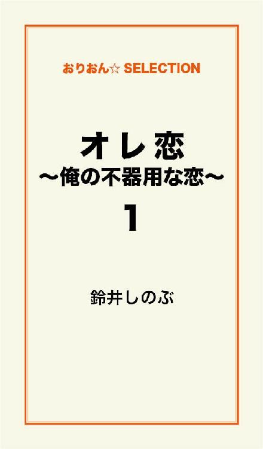

| オレ恋～俺の不器用な恋～ 完全版 | |
| 鈴井 しのぶ | |
この本は横書きでレイアウトされています。
また、ご覧になる機種により、表示の差が認められることがあります。

夜景がやけに綺麗だ。
のっけから、いきなりへんな冗談で始めてしまって、ごめんよ。
俺は今、地元の丘に来ている。
丘の石舞台に座って、コーラを飲みながらその夜景を見渡している。
もちろん、独りでなんて来ていない。
だってここは、カップルのデートスポットなのだから。
だけど、今俺の隣りにいるのは、俺が一番好きな彼女じゃない。
残念なことに......。
「聖吾（せいご）。庄野聖吾！」
「は、はい！！」
「何をボーとしている。さっさっと品出ししろ！」
「はい！ すみません！」
俺は消防士の夢に敗れて、スーパーの品出しのバイトをしている。
こんなところで俺、何やっているんだろう......。
同級生は進学や就職が決まって、それぞれの道に向かっているのに、
俺と来たらこんなところでバイトなんてして......。
就職もしてなければ、恋人すらもいない。
虚しい日々......。
彼女の一人でもいれば、俺の心はもうちょっと、ましだったのではないだろうか......。
品出しはやってもやっても、終わらない。
しかも、キリがない。
夏のペットボトルなんかは特に最悪だ。
ああ、こんな時、彼女がいたら......。
ここに来て、励ましにでも来てくれたらなぁ。
ああ......潤いが欲しい。
彼女が欲しいよぉ。
この時、俺、十八の夏──。
話は遡って、中学の時に戻る。
学校の帰り、とある駅で俺は人を待っていた。
家に帰る為でも、友達や兄弟を待っているわけではない。
ある他校の女子生徒を待っていた。
もちろん、俺の一方的な待ちで......。
その駅を通り過ぎてゆく学生と、俺とは違う制服だったので、自分だけやけに目立つ。
「あれ？ 聖吾じゃん。何やってんの？
お前の家、こっちじゃないだろ」
こういう大事な時に限って、俺の友達と鉢合わせ。
「っるいさなー！ モリオはぁ～。早くいけよ！」
俺は、奴を追い払った。
「なんだよ～。聖吾はまだ制服かよ、早く家に帰れよ！」
私服に身をまとったモリオは、怪訝な顔で立ち去った。
俺は、更に待ち続ける。
待ち続けたが、一向にお目当ての女の子がこなかった。
そう、俺は告るつもりで、その駅に立っていたのだ。
俺って、結構根性あるんだよな～。
「どこがよ！ 意味ないでしょ！ ばっかじゃないの？！
告れなきゃ、駅で待っている意味がないじゃん！」
そこは最初の夜景が、見渡せられる丘。
一緒にいる女の人は、俺に呆れていた。
「しょうがないでしょう！？ 俺は、不器用なんです！！」
「はっ！！」
その女の人に俺は鼻で笑われてしまった。
中学の時は、バスケ部に所属していた。
丁度、練習試合をしていた時のことだ。
その時、好きな娘は陸上部。
休憩時間で、俺達がバスケをしている体育館に体育座りをしてこちらを見ていた。
俺はチャンスとばかり、張り切った。
いつもと違う力が、みるみる漲って来る。
あの娘が見ている！
いいところを見せないと！
ただ、それだけの為に、
エネルギーの全てを注いだ。
ボールが俺に回ってきた！
一人抜き、二人抜き、三人抜き、そしてシューーート！！！！
ボールは見事に、的を捉えショットが決まった。
「おっしゃあぁぁぁぁ！」
俺は、ガッツポーズをして、陸上部がいるであろう場所を見る。
すると、陸上部の休憩時間は、とっくに過ぎてしまい、誰もそこにはいなかった......。
「聖吾すげー！」
チームメイトが駆け寄ってくる。
俺は、チームの為に頑張ったわけじゃないのにな。
なんてタイミングが悪いんだ！！
ノーーー！！
それでも、俺は、みんなの抱擁を受けつつ、心の中でちょっと泣いた。
「──それで、その後、その陸上部の娘とは何かあったの？」
「ありません......」
「はぁぁぁぁ～！！」
夜の帳に、俺の今隣りにいる女の人は呆れた声をつんざかせた。
「そんな調子でアユちゃんと、うまくいくと思っているの？！」
「いや......頑張ります。精一杯......」
俺は強がった。
女の人は、思い切り俺の横で大きな溜め息をついて見せる。
一応、俺だって人並みに付き合った娘だっていたさ。
「庄野君、私と付き合って！」
「えぇ？！ 俺っ？」
相手の娘の方が、俺のことを好きになった。
「いいでしょう？ 庄野君、今好きな娘いないならさぁ」
「え、あ、う、うん......」
「わーやったねー！！ 良かったね！」
女友達は喜び、はしゃぐ。
俺は女友達に詰め寄られ、女の連帯感の気迫に負けてしまう。
それで告られた娘と付き合うことになったけど......。
でも俺はその娘のことそんなに好きじゃなかった。
「あ、それで童貞消失したんだ。
それも、長く続かなかったんだ？」
「はい、そうですね......。
周りに、無理矢理付き合いをさせられていたような感じだったし」
「他は？」
女の人は、レポーターのように次々と質問攻めしてきた。
「え......あとは、高校の修学旅行ですかね」
「修学旅行......ねぇ。どうせ空振りでしょ？」
「まぁまぁ、聞いて下さいよ」
「.........」
その丘は本当に静かで、今日に限って二人きり......。
高校生ともなると、中学の頃より、心も体も性欲が増してくる。
「よーし」
俺は、最後まで修学旅行に持って行く、
バッグの中へ、コンドームを入れるかどうかで悩んでいた。
で、やっとギリギリになり、それを持って行く決心をした。
突然、俺がバスに乗る時、同級生に声をかけられる。
「庄ちゃん」
「何ー？」
俺は振り返る。
「庄ちゃんのポケットに、入っているもの判るけど」
「え？！」
手で触るとくっきり
コンドームが、
浮かび上がっていた。
やっちまった～！！
俺は慌てて、手で隠しながら、バスに乗り込んだ。
後で、俺がポケットに仕込んでいたコンドームを見つけた同級生が、隣りにやってきた。
「なぁなぁ、庄ちゃんは、誰とやろうとしてんの？
やっぱり、うちのクラスの誰か？」
「いや～どうかな～」
「どっちにしろ、女子あれだけ固まって行動しているのにやるなんて無理じゃね？」
「なんだよ、うるさいな～」
「本当のことじゃん。ちゃんと二人きりにならないとさ」
そいつの言う通りだ。
「ちゃんと旅行前に、打ち合わせした？ そういう準備した？」
「......ない」
「え？」
「してない！！」
俺は、その時何を考えていたのか......。
ぶっつけ本番で、決めようとしていた。
まだ、付き合ってもないどころか、
告ってすらもないのにだ。
「──で、そのコンドームは、使えたの？」
「使えないまま終わりました」
「あんた！ 何考えてるの？！」
女の人は、俺から顔を背けた。
高校三年になり、進路を決める時、
俺はただひたすら、消防士になることだけを目指していた。
一次は通ったものの、二次で見事に落ちてしまった。
就職難の頃だった。
俺は、就職が決まらず、呆然とするしかなかった。
その時に限って、ケツメイシの曲、新生活が流れてくる。
「俺、何やってるんだろう......」
この言葉は、これから何度も出てくるだろう。
それで結局スーパーの品出しのバイトをすることになった。
それでも半年は、そこで頑張った。
だけど、我慢できなったことがあった。
それは、横暴な上司。
免許の書き換えに行く時もなかなか言い出しにくく、ついつい出た言葉は、
「法事があるので......」
......だった。
それでも、さんざんうるさく言われてしまい、俺は、やっと決心する。
「すみません、辞めさせて下さい！！」
「なにぃ！！」
とにかく清々した。
俺は、高校の時バイトしていた所で、再び仕事をする意思を固めた。
ガソリンスタンドだ。
そこで、バイトしながら、再び消防士を目指すことを決意する。
高校を卒業したので、俺は、パートとして雇われることになった。
「──消防士は、また駄目だったんでしょ？」
「はい......その代わり、准社員になれましたけど」
「それでアユちゃんに出会ったわけだ」
「そうです！！」
それは今年、俺が二十になる。
まだ、十九の春のことだった。
俺が准社員になった春。
ガソリンスタンドは、新入社員やら異動社員やらでやたらと騒がしくなっていた。
「庄野君、聞いた？ 今年の新入社員の中にすっげーかわいい娘がいるんだってさ」
「へー」
俺は、休憩室で煙草を一服していた。
「臨時らしいけどね。確か、庄野君と同い年じゃないかな？」
俺に声をかけてきたのは、先輩でローリー乗り、配送担当の川島さん。
二十八才、新婚さん。
俺が一番憧れる人である。
「松永さんとか言う娘だったかな。本店スタンドにいるらしいから、見に行ってきたら？」
「マジっすか？ 行ってきますっ！！」
俺は、単純にそして、柔順に川島さんへ従う。
「え？ 今、見に行ってくるの？
だったら証拠に、写メでも撮ってきてよ」
川島さんは、マジかよという顔で含み笑いをしながら、俺を見送った。
俺の今いる川町スタンドから、本店スタンドまで、車で大体、十分ぐらいだった。
その日は、雨ががんがん降っていた。
何もそんな雨が降っている時に行かなくてもよかったのに......。
その時の俺は、なりふり構わず本店に向かった。
車から降りると、マジですごい降りだ。
俺も一気に、がんがん走る。
その松永さんとかいう娘がいるサービスルームへまっしぐら。
女の子が一人だけいる！
あの娘だ。
襟まであるふんわりウェーブヘア。
俺は、本能的にその娘の前に行く。
俺が来ると、不思議そうに、そしてかわいい笑顔を見せる。
俺は胸がきゅーん。
直撃だった。
か、か、かわいいぃぃ......。
「俺、庄野聖吾といいます！ 写メ撮らせて下さい！ お願いします！！」
俺は、ダメ元で頼んだ。
しばらくして、
「いいですよ」
彼女はそう答える。
「え？」
俺は、耳を疑う。
「写メですよね？ はい、別にいいですよ」
彼女は難なく受け入れてくれた。
「ありがとうございまーす！！」
俺は、大興奮して、思わずケータイを落としそうになる。
俺は、松永亜由ちゃんのスマイル０円の写メを、ゲトることに成功した。
「ありがとうございまーす！ 頑張ってね～！！」
思い切り頭を下げて、俺は手を振った。
「はい？ ありがとう。えーと、庄野君」
松永さん......亜由ちゃんも、多少怪訝な顔をしながらも、笑顔で手を振り返す。
俺はまた雨の中を走って帰って行った。
スタンドに帰ると、川島さんは轟く。
「え？！ 本当に写メ撮ってきたのー！！」
ケータイに保存された写メの画像を見せる。
「すごいじゃん、庄野君！」
川島さんは、万遍の笑みを浮かべて言った。
「川島さん」
「ん？」
「俺、初めてかもしれません」
「え、何が？」
「......好きになったのが。こんなに、好きになったの
亜由ちゃんが、初めてかもしれないです！」
「はい？！ マジで......」
俺は、一人で盛り上がってしまった。
一目惚れだ。
その時の俺は、いきなり落ちてしまった、
恋にただ盲目になり過ぎて、不器用な恋にまっしぐらだった。
俺はなんとかして彼女、松永亜由ちゃんと仲良くなるべく
奮闘することになった。
「ねぇ、松永さん。温泉好きですか？」
俺は、本店スタンドに、用があるかのように行って、亜由ちゃんに声をかけた。
「うん、温泉好きだよ」
「マジで？！ あのさ、俺と温泉行かない？」
断られるのを覚悟で、俺は亜由ちゃんを誘った。
「......いいよ」
「え」
「うん、いいよ。行こうよ」
「本当に？！」
やったー。
これって二人きり。
しかもデートだよね？！
俺は、本当に心の底から嬉しかった。
絶対、俺達は両思いになれると確信していた。
それが、新たに始まる不器用な恋とも知らず......。
「天気が良くて、良かったね～」
俺は、車を運転しながら、変な日本語を繰り出していた。
お互いサービス業なので、なんとか休みを合わせた。
まさかこんなに早く、しかも好きになった娘と、二人きりで車になれるなんて。
しかも、温泉に行けるなんて、夢のまた夢だ。
俺は幸せ者だぁ～！
俺は、本当に暴走していた。
相手のことなんて、ちゃんと考えていなかったのかもしれない。
とにかく俺は、良いところを見せようと、格好良く見せようと、背伸びしてしまっていた。
「亜由ちゃん、家どこなの？」
「学校はどこだった？」
「好きなものは？」
などとは、一切聞かず。
普通は、少々ウザイけど、詮索してゆくものだ。
なのに、俺は殆んど彼女のことを聞いてあげなかった気がする。
「俺は消防士になりたかったんだよね......」
そこから始まり、俺は俺を語るだけ語った。
「消防受けたけど、いいところまで行ったんだよ。
でもさ、二次で落ちちゃってさー。
今年も受けたのに、やっぱりダメだったんだよね......。
俺って、消防士向いてないのかな？」
「聖吾君、来年も消防士目指すの？」
「う～ん、どうしようかなってところだね。
ずっと、憧れてた職業だったからさぁ。
あ、そうそう！
俺の弟、松大スタンドでバイトしてるんだけど、ヤツはどう？」
ウィンカーを出し、ステアリングを回す。
「えー？ カズキ君でしょ。良くやってくれてるよー。
聖吾君って、男四人兄弟の一番上なんだってね。大変だねぇ」
大変ってよく言われるけど、おれにとっては当たり前の環境だ。
物心ついた頃には、もう次男のカズキと、三男のマサルがいた。
一番下は現在、小学五年生のヨシト。
「そうかな、で......」
「ちょっと！ 聖吾君。ここどこよ」
亜由ちゃんが、異変に気付き話を中断させた。
「えぇぇぇ？！ あれ？ ここどこだろう？」
俺は、キョロキョロ辺りを見回す。
長い長いトンネルを抜けた後に、料金所を通ったからだ。
「ここ、他の県じゃない？ 聖吾君の行こうとしている温泉って、他県に入る前にある場所じゃなかった？」
そう亜由ちゃんに言われて、俺は気付いてしまった！
やべ～！！
道を間違えた～！
しかも、俺って実は、方向音痴だったりするんだよな......。
どうしよ～どうしよ～。
「丁度いいから、ここで......」
亜由ちゃんの言いかけた言葉を遮って、俺は慌ててフォローした。
「引き返そう！」
いや、フォローしたつもりだった。
自分では、自分だけが......。
その時、彼女は心の中では、はぁ～何言ってんのこの人は？
何も引き返さなくても、ここの温泉地に立ち寄れば済むことなのに......。
などと亜由ちゃんが、心の中でかなり辟易していたことになど、まったく気付きもしなかった。
しかも、行き過ぎだから、本来の目的地の温泉に行けば良かったのだ。
もちろん方向音痴なので、機転を利かせて行けるわけがなかった。
だからと言って、亜由ちゃんが方向を指示してくれる程、この辺の地形に詳しいわけでもなかった。
完全に俺の計算と計画不足だった。
方向音痴......それが、俺の最大かつ不器用な面かもしれない。
いや、そうなのだろう。
とにかく、俺は地元まで戻って、地元の無難な温泉へ車を走らせた。
温泉に入った後、俺はある場所に誘う。
「ゲーセン行こうか」
「うん、いいよ」
良かった。
いつも通りの笑顔だ。
地元の温泉に戻るまでの車の中は、妙な空気だった。
半分白けていたような......。
なんというか......。
そのことがあったので、俺はもの凄く心配だった。
とにかく、俺と亜由ちゃんは、ゲーセンに向かった。
「まず、何しよっか？」
亜由ちゃんは、機嫌が一気に良くなったみたいだった。
「えっと......プリクラ、一緒にしてくれるかな？」
「プリクラ？ いいよ」
やっりー！
プリクラまでは良かった。
俺はいいところを見せようとして、ＵＦＯキャッチャーに挑んだが、空振りに終わり見事撃沈。
「わ、私、向こうのクレーンゲームしてくるね」
気まずい空気が流れ、亜由ちゃんはさっさと行ってしまった。
俺は、後ろ姿を見送った。
ちょっと休憩と思い、煙草を吸って落ち着こうとした。
その時、亜由ちゃんがこちらに移動してきた。
「あっ」
思わず目が合う。
その次には亜由ちゃんが先に目を逸らして、別のポジションを見つけに行ってしまった。
帰りの車の中で、俺は亜由ちゃんに尋ねる。
「煙草吸ってる男ってどう？」
「聖吾君どうしたの？」
「俺が煙草吸ってるの見たでしょ？」
「へ？ だから？」
「煙草吸う男って......」
「ああ、スタンドって喫煙率高いじゃない？
仕方ないと思うよ。
大体、弟のカズキ君、高校生だよね？
スタンドの控え室で、吸ってたの見たけど」
カズキめ～。
人のこと言えないか......。
俺だって、今年二十歳だけど、誕生日来てないのに既に吸っちゃっているもんな～。
俺は、しょうもないことを聞いて無事帰還する。
いろいろあったけれど、俺は随分満足していた。
後で思えば、ただの自己満だ。
次の日さっそく、温泉事件のことが、スタンド中あっという間に、拡がるとも知らずに......。
「でね、聖吾君。道間違えちゃったんです。
間違えたその場所で、温泉入ろうよって意見言おうとしたら、地元まで帰っちゃうんですよ～」
「へ～戻るなら、目的の温泉に行けば、良かったのにね......」
亜由ちゃんは、さっそく松大スタンドでみんなに暴露していた。
そうそう、亜由ちゃんは、研修で最初は、本店スタンドにいたのだけど、配属が松大スタンドに決まったので、今は弟のカズキと同じスタンドにいる。
松大スタンドは、保安の人と新社員と、パートの佐川さん。
亜由ちゃんと、そして弟のカズキの五人で、運営している。
川島さんは、配送で松大スタンドにも行くので、ちゃっかりあからさまに、亜由ちゃん本人から一連の話を聞いてきたらしい。
「庄野君、聞いたよ。温泉行ってきたんだって？」
「そうなんです。本来の温泉地にはちょっと行けなくて......」
「道間違えたんだって？」
「え？！ どうしてそれを川島さんが知っているんですか？」
「だって、ペラペラ松永さんがしゃべってたよ。告白したの？」
「あ、いいえ。ケー番とメルアドは、交換しましたけど......」
「ダメじゃーん！アピらないと、あれじゃあまったく庄野君の気持ちに気付いてないよ、きっと......」
「マジですか......」
俺は少し落ち込んだ。
「......川島さん、俺、亜由ちゃんのこと諦めた方がいいですかね～」
「はぁ？ 何、突然」
川島さんは、目が点になっていた。
「だって、怖いじゃないですか。
引き返すなら、今じゃないですか」
俺は、訳が判らなくなって、変なことを言い始めた。
川島さんは苦笑する。
「諦めるって、何もしてない前からそんなこと言って、どうするの？
庄野君がそれでいいなら、それでもいいんじゃない？」
「いや......よくないです。諦めません。はい！」
俺は、言っていることが、心と一致していないようだ。
それとも、一致しているからこそ、感情の起伏が激しくなっているのか。
川島さんは声に出さないが、かなり爆笑もんだったらしい。
「庄野君、頼むよ！」
「は、はい！ 頑張ります！」
そうして、川島さんはローリーに乗り込んだ。
六月になっていた。
その頃になると、ほぼ強制的に乙四の資格を取ることになる。
危険物取り扱いとなる為だ。
俺は、学生の内から資格を取り続けていたので、
危険物の乙の全六種を、既に取得済みだった。
スタンドなら、乙の四だけで十分やっていける。
その乙四の事前講習会があり、
今年入ったばかりの人は、殆んどその講習会に出てしまう。
その為、人員不足になり、俺は南田スタンドの応援に行くことになった。
南田スタンドは俺の家の地区にある。
その日の南田スタンドは、パートのおじさん（独身）林さんと二人きりだった。
南田スタンドにも今年の春、一人女性が入っていた。
「ああ、中谷志織ね。その人、少し変だから」
林さんが、突飛なことを口にした。
中谷さんが変な人？
なんだそれ......。
社員さんだよな？
中谷さんって確か......。
その人、スタンドは今年初めてだっけ？
ま、どうせ。
俺とは関わることもないだろうな......。
そんなことを考えていたら、午後三時過ぎ頃、突然一台の車が南田スタンドの洗車に横付けしてきた。
中から私服の女の人が出てきて、サービスルームへやってきた。
その人が挨拶する。
「あ、こんにちはー」
俺も挨拶を返す。
「こんちはー」
中谷さんだった。
「南田スタンドの保安の人に、講習会終わったら事務見てくれって言われたので来ました」
「お疲れ様です」
林さんは何も言わないので、俺が代わりに返事をする。
「忙しかったですか？」
中谷さんは、また話しかけてくる。
なんで俺に話しかけてくるんだよ～。
「いや、それ程じゃないです」
「応援だよね？ 大変だよね」
はぁ～。俺は、一応表向きは愛想良くした。
中谷さん、林さんが言う程、変な人じゃないと思うんだけどな。
どこが変な人なんだよ......。
年は、よく知らないけど、
見た目は、二十五，六才かな？
後で知ることだけど、中谷さんは、林さんが大嫌いだったらしい。
お互い様だろうけど......。
「聖吾。おっ！ お前乙四の講師やれっ！」
本店スタンドから電話が来た。
課長からで、俺はいきなり脅された。
いや、違った......乙四の講師のお願いをされる。
「え？ 俺ですかぁ」
「そうだ！ お前だ。他に誰がいる！
おっ！ 生徒は、松永、中谷、木津。判ったか？
明日の夜から、川町スタンドでやるぞ！ じゃ」
「ちょ、課長！！」
ガチャ！ プープープー......
口癖が『おっ』の課長ガチャ切りしやがった！
おえ～～っ！！
ほぼ強制的に、『おっ』の課長から命令を下されたので、
俺は慌てて乙四の教科本を、探し出し資料を作成した。
いろいろドタバタしてて、その日、夜中の一時、二時までかかった。
「これで、誰もこなかったら殺す！」
俺は、殺気立ってその日の仕事を終えて、
川町スタンドの二階で人待ちした。
本店スタンドから木津が来た。
木津は、本店スタンド所属。
俺と同い年の野郎だ。
「庄ちゃん用事あるから、遅くまでいられないけど」
「あ、うん。判った」
「ごめん、庄ちゃん」
ちっ！ 野郎一人だけか......。
あの、あんぽんたん課長がぁ！！
突然、昨日今日で、講習会なんて決行するから、この有様だよ。
ったく......。
このスタンドの二階は、冷房が効かない。
俺は、繋ぎの上だけ脱いで、腰で縛り、オレンジのＴシャツになる。
「（１）物理と科学 （２）火災予防と消化法 （３）法令の三つから、問題が出題されるから......」
俺は一番出易い問題を、端から言って、木津にチェックさせる。
しばらく、野郎同士の講習会が続いたが、階段を昇ってくる音が聞こえてきた。
「あ、どうもこんばんはー」
女性二人が川町スタンドの二階のドアを開けて入ってきた。
なんと亜由ちゃんと、南田スタンドの中谷さんだ。
うお～～っ！！
やる気出てキターーーーーーーーーーーー！！
山本高広よろしく、俺は、エンジン全開になる！
「庄ちゃん、ありがとう。先生みたいだった。またね」
また、タイミング良く木津が離脱。
「今日は、まず物理、化学をやります。
比熱、熱量、対流や融解、凝固、気化、蒸発......ここら辺はよーく問題をやっといてくだぁ～さいっ！」
俺は、乙四講習に力を注いだ。
それがなんらか通じたのか、亜由ちゃんも中谷さんも教科本を開き、真剣に取り組んでくれた。
もう、俺頑張るっ！！
時計は、九時になろうとしていた。
今日はここまでだ。
「私、てっきり課長から電話貰った時は、課長が乙四の講習してくれると思ってた」
みんなで、自販機のジュースを飲みながら、中谷さんが意外そうに俺に話しかけてきた。
「昨日、突然、課長から電話が来て、講習やれって言われました」
「えぇ？ 昨日なの！ 実は、私達もねぇ。今日の午後いきなり課長から電話来て、"おっ今夜やるぞ"って言われた」
中谷さんが、亜由ちゃんに、目配せしながら事の流れを話した。
「この講習会の資料や準備をするのに、夜中までかかっちゃいましたよ。
とにかく人集まってくれて良かったです」
「あーご苦労様」
中谷さんはそう言ってくれたが、亜由ちゃんは何も言ってくれなかった。
その後、課長がやって来て、少しみんなで話してからスタンドを閉めた。
どうやら亜由ちゃんと中谷さんは、俺が南田スタンドへ応援に行った時の講習会も、二人一緒に行っていた。
確かにお互い、今年スタンドに入ってきたばかりで、
女は二人きりなのだし、仲良くなるのは当たり前だ。
次の日の夜も俺達は講習会を開く。
講習の合間にいろいろ話した。
「川島から聞いたよー。っていうか、川島に相談し過ぎじゃない？」
「いや～。川島さんは、俺にとって兄貴のような存在ですから」
「止めときな～。ヤツはローリー乗りだから、他のスタンドも行くだろうし、みんなに言いふらしてるかもよ」
「そうですかね～」
どちらかいうと俺は、亜由ちゃんより中谷さんとしゃべっている気がする。
「庄野君は目がハートマークだったでしょ？って言われてても？」
「ハートマーク？」
亜由ちゃんが怪訝な顔をした。
「うわ～なんでもない！ なんでも......！！」
「ぶっ、はははは！」
おえっ！ 中谷さん、大失笑かよ！！
くそ～。
中谷さんも、俺の気持ち知ってるのか～。
それより、川島さん、一体何を中谷さんに吹き込んだのだろう？
俺はその時知らなかったが、温泉事件のことも、川島さんは中谷さんに全て暴露していたらしい。
講習会は、試験の三日前まで毎日続けた。
亜由ちゃんはお昼休みまで勉強していると、情報が流れてきていた。
中谷さんは、勉強する時間が少なかった為か焦ってしまったらしく、
仕事中に、乙四の教科本を広げていた。
それが運悪く、うるさい、しかも、中谷さんが大嫌いな林さんに見つかってしまったらしい。
乙四試験三日前。
その夜は南田スタンドで、俺の講習会最終日を迎えることになる。
「大丈夫ですか？」
俺は、中谷さんに声をかけた。
中谷さんの面持ちが暗い。
「昼間さ～。林すごいキレちゃった。確かに、仕事中、乙四の勉強してたのは、いけないことかもしれない。
でもね。別に、ファッション雑誌とか、広げてたわけじゃないのに。
"他の応援呼べ！ 社員がこんなことしやがって！"って、課長呼びつけて、私の前でキレたの。
そこまで言わなくてもいいと思わない？！」
あちゃ～！ 中谷さんやっちゃったね。
「それでどうしたんですか？」
亜由ちゃんが、瀕死状態の中谷さんに尋ねる。
「課長と控え室で話をして、"お、中谷。雑誌広げてたら、誰だって嫌だろう？"って注意されただけだった。
だけど、それでもね。
メンバーは変わらずに、林と一日二人きりで仕事したよ......。
もう、地獄だった」
「えー？！ そうだったんですか！ どうりで、さっき、林さん機嫌悪そうでした」
俺が南田スタンドに来た時、林さんの態度が荒々しかった。
更に、一言もしゃべらない......。
「林さん、スタンド歴長いのに、未だ乙四落ち続けているみたいですからね～」
「え～～！！ そうなのぉ！！」
俺が、林さんの情報を流した途端、亜由ちゃんと中谷さんは口を揃えて驚いた。
「だから、面白くないと思います。
でも中谷さんは、よく一日頑張ったじゃないですか。辛かったですね」
俺は、中谷さんにメンタル面を持ち直してもらおうと励ました。
「もうすぐ試験ですから、頑張りましょう！」
俺は、気合を入れた。
だけど、俺は知らなかった。
中谷さんは、辛いのを我慢していたことを......。
俺や、亜由ちゃんが思っていた以上に、
中谷さんには、昼間の林さんの怒り事件が精神的に多大な痛手として、
尾を引くほど影響してしまっていたことに、俺は気付いていなかった......。
乙四試験当日、またもや、スタンド従業員が試験で大勢不在だった為、その対応に追われていた。
亜由ちゃんも、中谷さんも、木津すらも、みんな試験会場がバラバラだったらしい。
もちろん、例の林さんも、密かに試験に行っていたようだ。
俺は、特に亜由ちゃんだけ心配していた。
「おい、何、庄野はそわそわしてるんだ？」
軽油配送のおじさんに、俺はしっかり見抜かれていた。
「いや～亜由ちゃん大丈夫かなぁって」
「お前が、心配すんな！ 子供じゃあるまいし」
「は、はぁ～」
とは言われたものの、お昼頃に俺は亜由ちゃんのケータイにちゃっかりかけた。
「亜由ちゃん、どうだった？！ 大丈夫だった？ 出来たっぽい？」
「う、うん......一応出来たよ。ありがとね。聖吾君」
ひやっほぉ～～！！
マリオカートで、クラッシュさせた時の爽快感。
試験に行った人達は、半日でみんな帰ってきた。
「庄野君。今夜、試験お疲れ会ってことで、ご飯食べにいかない？」
午後、南田スタンドから、俺宛ての電話があった。
中谷さんからだ。
「松永さんも来るよ。木津君は都合つかないみたいだけど、庄野君は、もちろん来るよね？」
「はい！ 行きます！」
俺は、もちろん即答。
「よしっ、じゃあ。本店スタンドの傍のファミレスへ、七時に集合ね。よろしく」
「了解ですっ！！」
俺は、亜由ちゃんが来ると聞いた途端、浮かれてしまった。
「よぉ～し、頑張るぞ、みたいなっ！」
し～～ん......。
いけねっ！ 滑っちまった。
その日のシフトは、俺と年が近い奴はいなかった。
おじさんばっか......。
あちゃ～、考えて言えばよかったよ。
もう、聖吾君のばか！
ばか、ばか、ばか！
「庄野、何、頭叩いてんの？」
「いや、ちょっと......」
仕事を終えて、その夜三人はファミレスに、各々の車で集結する。
ファミレスの店員に案内されて、
亜由ちゃんと中谷さんが並んで座り、俺は向かい側に一人陣取った。
「この三人で逢うのって初めてだね」
「うん」
俺に亜由ちゃんは答えた。
ドリンクバーを頼み、それぞれ好きな飲み物を取ってくる。
「お疲れ様～！！」
三人で、グラスを交わす。
「試験で一つ、聞きなれない液体か薬品名が出題されてたね」
中谷さんが試験の話題をふってきた。
「そうそう！ 教科本にも、載ってないような名前でしたね」
亜由ちゃんも続いた。
「え？ なんて名前だったの」
俺が二人に聞いたが、二人は揃ってこう言った。
「忘れちゃった......」
その後も試験の話題が続いた。
「私、時間いっぱいまで頑張っちゃった」
「女の人殆んどいなかった。若い男の子ばかりだった気がする」
中谷さんが若い男の子と口にしたので、
俺は、中谷さんに思い切って聞いてみる。
「中谷さんって、年いくつなんですか？」
「えっと、三十です」
「ええっ！！ そうなんですか？！ 二十五ぐらいに見えますよ～」
俺はそう言って驚愕した。
驚愕したのは、亜由ちゃんも一緒だったらしい。
「う～ん、ありがとうね。二人共」
中谷さんが、三十歳......。
マジで見えないけど。
俺は、まじまじと中谷さんを見る。
「あ、そう言えば庄野君って講習している時、必ず最後のセリフは、
"覚えて、くだぁ～さいっ！"
って言うから、私ね、真似したくて真似したくて仕方なかった」
なんだよ～中谷さん。
そんなこと覚えてなくていいのに......。
中谷さんは尚続ける。
「でも、自分も必死だったし、そんなこと言えるような空気じゃなかったから、とても言えなかったけどね」
「あははは......聖吾君、言ってるねー」
「えー！ そうですかー？」
「言ってるって！ 覚えて、くだぁ～さいっ！」
中谷さんが俺の真似を、アンコールしたので、
俺は急に恥ずかしくなって下を向いた。
「あ、聖吾君、赤くなってるぅ～！」
亜由ちゃんに、すかさず指摘されてしまった。
「ふふっ......庄野君かわいいね」
「二人して～やめてくださいぃ」
俺は、からかわれてしまう。
「そういえば、もうすぐスタンドの旅行だね」
中谷さんが話題を変える。
「東京ですよー楽しみですぅ」
亜由ちゃんが続く。
「そうですね。倉本さんとか、夜のいかがわしい所へ、行くみたいですよ」
俺は、先輩野郎共の目的を語る。
「倉本さんが～？ そんな風に見えないよ」
亜由ちゃんが、信じらないという感じで言った。
倉本さんは二十九歳。
本店スタンド歴が、一番長いスタンドマンだ。
矢沢栄吉をこよなく愛する、なかなかイイ男。
「はは、松永さん。仕事の仲間で行く、旅行なんてそんなもんだよ。
家族から離れるんだもん。羽目外すって。
私だって、北海道行った時、なぜか女性軍も一緒に、
ストリップ劇場入っちゃったもん。
男なんてみんなそうだよね？ 庄野君」
その時、ただ一言そうですね、とか言えば良かった。
なのに、俺と来たらばか正直に......。
「あー今年の二月に、俺も観に行きました」
ギリギリ十八歳以上......。
「え？ 庄野君もあるの！」
中谷さんは驚きながら笑っていたが、亜由ちゃんは何も言わない。
「庄野君それは言わなくても、良かったかな～？？」
中谷さんは亜由ちゃんに一瞥した。
「後、その時は他に誰が行ったの？」
亜由ちゃんは、まったく俺のことなど、気にしてないみたいだ。
「あ、川島さんも行きました」
「え～！ 川島さんも！」
亜由ちゃんは、イメージが崩れたらしく落胆したみたいだ。
ちょ、ちょっと？ 亜由ちゃん。
俺には、がっかりしてくれないのかな？
亜由ちゃんは自分より年上の男が、好みなのかな......。
そのうち、好きな音楽や、映画の話題になってきた。
「私、バンドやってたんですよ」
「俺もちょっとだけバンドのボーカルやりました。ブラフマンとかですけど」
意外に、亜由ちゃんも俺も共通なことをしていたんだ。
今日初めて知った。
どうして、俺、温泉に行った時聞かなかったのだろう......？
「松永さんも、庄野君も、バンドしてたんだねー。二人共一緒かー」
中谷さんは、ただただ関心するのみだった。
だんだん話しが盛り上がってきたので、それに伴い俺は暴走し始めた。
「俺、消防目指しているんですけど、もう、二回落ちちゃってるんですよね～。
次、受けようか、悩んでいるんですよ」
「消防って難しいんだよね」
中谷さんが聞き返す。
「レスキューとかがしたいの？」
「花形ですからね」
「じゃあ、海猿とかやってみたいの？」
中谷さんが突っ込む。
「海上保安官ですか。あーあれは、前にテレビで観たことあるんですけど、厳しい世界です」
さすがに海猿までは、俺はやりたいと思っていなかった。
中谷さんが何気に、亜由ちゃんを放りかけていることに気付いた。
「映画とか観るの？」
中谷さんが話題を変えて亜由ちゃんに気遣う。
「私、ポニョが観たい」
「俺は、ＩＣＨＩが観たいかな？
亜由ちゃん。俺とＩＣＨＩ観に行こうか？」
中谷さんは、その瞬間コケたらしい。
亜由ちゃんが具体的に観たい映画を言っているのにも関わらず、
俺は、まったく関係ない映画の誘いをしてしまった。
そんな状態なので、亜由ちゃんは呆れて俺に返事をするわけがない。
けど、俺はそんなことお構いなく話しを進めていた。
「女座頭市がさぁ......」
俺は思うがまま語るのに夢中だった。
また、亜由ちゃんを置き去りにしているのに、
気付きもせず、なりふり構わなかった。
それを中谷さんが、察して話に割り込んでくる。
「庄野君、引き出しいっぱいあるんだね」
「俺、引き出し自分から開けちゃうんですよ～」
俺は見事な（？）切り返すをする。
その時ばかりは亜由ちゃんもウケた。
「じゃあ、判った。今度、引き出し開き始めたら、言ってあげるよね。ねっ、松永さん」
「開いてるよ～って？」
亜由ちゃんは、笑って中谷さんに賛同する。
俺は、なんだか恥ずかしくて照れまくった。
「もう、やめてください～！あ、それから......」
俺は、酒が入っているわけでもないのに、メチャクチャテンションが上がって、無我夢中で語り倒した。
中谷さんは必死で話の流れを変えようとしていたらしい......。
だんだん、俺のペースに二人共辟易してきたらしく、
亜由ちゃんは、上の空になりつつあった。
「亜由ちゃん、どうした？」
俺が途中で尋ねるものの、
「なんでもない......」
亜由ちゃんが叱りつけないのをいいことに、
俺は自分のせいだとは微塵も感じず、語ることに熱中した。
とうとう中谷さんが、埒があかないと思い、
「そろそろ、帰ろうか」
と締める。
俺は、ハッとして時計を見た。
なんとあれから三時間も経過していた。
あ～！ また俺やっちまった～！！
次の日のお昼休みに俺のケータイに着信がある。
「松永ですっ」
その声は亜由ちゃんではなく、中谷さんからだった。
昨夜、ファミレスで俺は中谷さんとケー番を教えあったのだ。
「──っ」
俺は、苦笑した。
「中谷ですけど、昨日はお疲れ様でしたね～」
「いえいえ、あのう中谷さん。
俺、昨夜は結構アピールし過ぎましたかね？」
俺がそう言った途端、中谷さんが沈黙したのは言うまでもない......。
中谷さん的には、
──はぁ～？ どこがそんなにアピったっけ？
ちょっと、映画誘っただけでしかもドンびきじゃん......。
後は、こちらの話を聞くどころか、自分を語るのに忙しかったくせになー。
などと、その時中谷さんが呆れているとは露知らず。
中谷さんは中谷さんで、俺に対して変な子のイメージがますます強くなっていたらしい......。
俺は、その日の夜、どうかしていたと思う......。
酒を飲み酔い良いな気分の勢いで、亜由ちゃんのケータイに着信してしまった。
「はい、もしもし」
亜由ちゃんがケータイに出ると、音楽がやたらわんわんとバックに聴こえてくる。
「亜由ちゃ～ん！ 俺です。庄野、庄野聖吾ですぅ～。元気があれば、ファミレスの店員もできる～」
自分でもよく判らないが、アント●の猪木ネタを思わずやっていた。
「ドラゴンボールで、あなたの好きなキャラは誰ですか？」
かと思うと、俺は、いきなり変な質問をする。
「（１）悟空 （２）クリリン （３）ピッコロ、さぁ～どれですか？」
なぜ、三択などしたのかまったく判らない。
だけど、亜由ちゃんは答える。
「クリリン」
「正解です！ では......」
しかも、逆だろうし......。
なぜ俺は勝手に仕切りだしたのかも意味不明だ。
俺が酔っ払って、たらたら意味もない、取り止めのない話をするせいで、
またもや、亜由ちゃんは辟易してきたらしい。
なかなか俺がケータイを切らないので、亜由ちゃんは業を煮やす。
とうとう亜由ちゃんは、自分のケータイをたらい回し始める。
「ハロー」
いきなり男の声に変わったので、
俺は、んだよ、こいつ！ 誰だよ！ と怒りそうになった。
「えっと？」
「あー俺、俺」
その人は亜由ちゃんと同じ、松大スタンドの佐川さん。
二十一歳。
俺の一個上の先輩。
「佐川さんもいるんですか......。後、誰がいるんですか？」
俺は冷静さを保とうとした。
「亜由ちゃんと、俺と、庄野君の弟カズキ君と、南田スタンドの中谷さんがいるよ」
「そうなんですか」
俺は、なんだか一人取り残されたような気がした。
しばらくしてケータイは再び、亜由ちゃんにターンするはずだった......。
なのに、佐川さんから代わった相手は、
「もしもし、私が誰か判る？」
「え？ え？」
俺は、混乱した。
「中谷です。みんなでカラオケに来てるよ」
あ～！ 中谷さんか......。
「あーどうもです」
「松永さんもいることだし、今からカラオケに来ればいいじゃない？」
「俺、お酒飲んじゃっているので～ちょっと無理ですね～」
カラオケの音がなかなか騒音だった。
中谷さんは、部屋の外に出たらしい。
外に出ると隣の部屋が丁度空きで、ドアが開放されていた。
中谷さんはそこの部屋にお邪魔して通話を続行した。
「そうか、今度カラオケ行こうね」
「はい、判りました～」
「中谷さん、聞いていいですか？」
「は？ 何......」
「どうして亜由ちゃん電話代わっちゃうんですかねー？」
「あーごめん。私は、一応断ったんだよ。
でも松永さんが、今聖吾君酔っ払いで、話すと面白いって言うからさー」
「そうですかー。俺、佐川さんとまでしゃべっちゃいましたよー」
「ごめんごめん、今から松永さんに代わるからね。
あ、それとも、一応弟のカズキ君にも、代わった方がいいかな？」
「やめて下さ～い！！」
「はは、冗談だよ～。ちょっと、待っててね」
その後は、なんとか亜由ちゃんに戻った。
さすがにカラオケ中だったので、後は長く話さなかった気がする。
その後も、もう一度、同じような面子でカラオケに行っているなどとは、
俺は知るわけもなかった。
しかも二回目のカラオケのおかげで俺に恋のライバルが出現してしまう。
松大スタンド内で、俺にはどうしようもない、強い結束力みたいなものが出来つつあった。
その中に俺の入る隙間がだんだん無くなっていることなど、その時、気付くわけがなかった。
川町スタンドに、川島さんが来た時のことだった。
「もうすぐ、旅行だね。庄野君は行くの？」
川島さんが、配達のリストを見ながら尋ねる。
「課長に行けと、ほぼ強制的に言われました。
川島さんは行かないんですか？」
「今回は、やめとくかな。いかないって言ったら、課長がうるさかったけどね」
ああ、課長、あの人は本当に強引だからな......。
「だけど、いいじゃん。
松永さん旅行参加するみたいだから、差を広げるチャンスかもよ？」
川島さんが煽るので、俺はつい調子にのってしまった。
「俺、絶対亜由ちゃんと手を繋ぎますよ」
格好をつけて俺は、とんでもない予告をしてしまった。
「おおー！ 期待してるよ。庄野君、佐川君に負けるなよ」
えっ今、
川島さんなんて言った？
「松大スタンド、みんな仲いいんだな。年が近いの多いせいか。
また、松永さん達、カラオケに行ったみたいじゃん。
どうやら、松永さんと佐川君が、急接近して仲良くなっているとか......」
かと言ってダイレクトに、亜由ちゃんになど聞けやしない。
「あ！ 山下さんなら何か知っているかも......」
俺は、山下さんのことを思い出した。
山下さんは、二十一歳。
俺の一個上。
今年の三月までスタンドで、パートとして働いていた。
四月に系列の違うスタンドに社員として、引き抜かれてしまった人だ。
佐川さんと同い年だし、確か佐川さんとも、山下さんは仲が良かったはず。
よし、山下さんに連絡とってみよう。
仕事が終わってから、俺はケータイで山下さんと連絡をとる。
「あぁ、庄ちゃん！」
「こんばんは、山下さん。仕事どうですか？」
「うん、まぁまぁかな。どうしたの？」
「ちょっと、山下さんに
聞きたいんですけど」
「え、何？」
「山下さん。カラオケ、佐川さんと行ったりします？」
「あ......う、うん。行ったけど......もしかして」
「あの、亜由ちゃんと佐川さん何かありました？」
俺は、こうなりゃと率直に山下さんに尋ねた。
ケータイの向こうで、山下さんは口ごもっていた。
「山下さんっ！」
俺は、強調する。
しばらくすると、やっと山下さんは口を開いた。
「......庄ちゃん、気をしっかりもってよ。
松永さんカラオケ中に酔っ払って、佐川の肩にもたれてた」
「えぇぇ？！ マジですかーーーーー！！！！」
俺は轟いた。
一応、俺もたまに、山下さんと連絡を取っていて、亜由ちゃんのことも話していた。
なので、最初俺に気を遣ったらしい。
「......それから、その......」
山下さんは躊躇していた。
「正直に教えて下さい！」
俺は動揺しながら声を荒げた。
「挙句......佐川に膝枕をしてもらってた」
「どっちが？！」
「膝枕になったのが佐川。膝枕にしたのは松永さん」
膝枕って......。
俺は、沸々と腹の中が煮えくり返ってきた。
俺だって、まだしたことも、されたこともないのにぃ！！
佐川め～～！！
「あのさ、庄ちゃん。俺思うんだけどさ。早く、告白した方がいいと思うよ」
山下さんがケータイの向こう側で、そう言う。
「じゃないと、佐川にとられるかもよ」
「は、はい......」
「松永さん以外のスタンドの人達には、庄ちゃんの気持ちバレているんだろ？」
「はぁ、そうみたいです......」
「庄ちゃん、周りから固めようとしているの？
そんな卑怯なことしても、当の本人が庄ちゃんの気持ちを知らなきゃ意味ないんだからさ」
山下さんは、的確なことを俺に告げた。
「山下さん、俺、旅行で頑張ります！ 佐川さんに差をつけます！」
「俺は、どちらの味方ってわけでもないから。でも、判らないけど......。ごめん、庄ちゃん......」
「はい、山下さん、ありがとうございました」
そうして俺はケータイを切る。
「なんだよ～それ～」
俺は、また孤独に戻ると、一人うな垂れてしまった。
ヤバイ、ヤバイ。
落ち込むな俺。
もうすぐ旅行があるんだから......。
俺は、俺を励ます。
その後ぐらいに、旅行のメンバーが決まった。
南田スタンドの保安、
柿原さんを始め、中谷さん、
松大スタンドからは亜由ちゃん。
本店スタンドは倉本さん、
木津、桐村、後二名ほど......。
そして川町スタンドからは、
俺、庄野聖吾が東京旅行へ行くメンバー。
この旅行が新たな大波乱の幕開けになるとも知らず、俺は浮かれていた。
あまり、いろいろ考えたくなかった。
それは単なる逃げだ。
だけどその時の俺は、そういう考えしか出来なかった。
旅行の当日。
まず、本店スタンドで殆んど集まって、
家がそこより南の人は車で家まで行き、
そこから拾って行くようにした。
俺の南田地区が最南端にある為、俺は最後に拾われて車に乗った。
「ざぁ～す！」
俺は、元気に挨拶した。
仕事じゃないので、挨拶の返しはまちまちだった。
俺は後ろを見ると、俺の真後ろには、中谷さんが座っている。
その横に、亜由ちゃんがいた。
うお～！ だんだん楽しくなってきたかも！
俺は後ろを向きながら、自分の持ってきたバッグの中を見せた。
「おやつ、バッチリ持ってきました～」
スナック菓子を始め、チョコやらプリッツやらを見せる。
「ちょっと！ 庄野君、たくさん過ぎない？
お菓子は、三百円まで！！」
中谷さんが、わざと言いながら驚いて笑った。
「バナナは、お菓子に含まれますか～？」
俺は、調子にのった。
「ブゥ～！ 果物です！ 果物は一個だけです」
中谷さんは両手でバツを作った。
あれ？ なんだか車内、俺と中谷さんしか話してないような......。
「なんだ、木津と桐村は若いのに寝ているのかー！」
助手席にいる南田スタンド保安の、柿原さんが渇を入れる。
「だってぇ～あまり寝てないんすよ～。
三時頃、家に帰ったら、ババァ（母親）と喧嘩しちゃって、
頭にくるやら眠いやら最悪ですよ～」
「桐は、旅行の当日まで遊んでいたのか！ ばかやろう！！」
柿本さんは笑いながら呆れて罵倒した。
桐村は悪びれずニヤリとして、また寝る体勢に入った。
桐村は、俺の一個下。
小柄で今は坊主だが、綺麗な顔立ちをしているので、
かなり女の子にモテるらしい。
「桐村君は、ラッパーなんで、ライブとかたまにやってるみたいですよ」
俺は、中谷さんに桐村のことを教える。
「へー、ラッパーですか......。私、桐村君と話したことあるよ。
本店スタンドで半日研修した時、
私の歳聞いてきて、すごい、ぶっ飛んでた」
「だって、見えなかったから......」
桐村は、ちゃっかり人の話を聞いていた。
「桐君、前に女装したらムチャクチャ可愛くて、
女の子にすごい囲まれてたらしいですよ」
松永さんも桐村の話を、中谷さんにしてきた。
「え～？ 松永さんも、桐村君のこと知ってるの？」
「はい、同じ学校ですもん。彼は当時から目立ってましたけどね」
「へーそうなんだ......」
やばい、俺も会話に入っていかなければ、おいていかれる。
俺が焦った時、車内が突然、ぷぅんと匂った。
「わ、臭っ！」
「イカ臭いよぉ～」
「す、すんません！ 俺だと思います」
「木津～～っ！！」
みんなで非難の声を浴びせた。
木津がポリポリ、はむはむと漬物と裂きイカを食べていたらしい。
その後、木津と桐村は、マジ寝したので、俺が殆んどしゃべっていた。
車に乗っている間、俺は前を見ることなく、後ろをずっと向いていた。
「庄野君、前向いてなくて平気なの？」
「はい、大丈夫です。だって前向くと、中谷さん俺の逆はねした後ろ髪構うじゃないですか～」
「だってカニの足みたいなんだもん」
「天パなんです！」
俺がついつい真に受けるので、更に中谷さんは、わざと言う。
「俺、聖吾！」
俺をからかってきた。
「あー名前言われる方が、しっくりくるなー」
俺がしみじみ思う。
「眉毛こんなんだから」
いきなり中谷さんが、俺の眉毛が見事な逆ハの字になっていることに気付いた。
その眉毛に沿って両手も、逆ハの字に眉毛に添えてくる。
「見ないで下さ～い！」
俺は咄嗟に恥ずかしくなり、顔を隠した。
その俺の行動に、中谷さんも亜由ちゃんも、きょとーんとする。
「俺、ソリマチなんですよ～」
「え？ 反町？ ギバちゃんじゃなくて？」
中谷さんが怪訝な顔をした。
俺はギバちゃんに似ているらしい。
「眉毛を剃り間違えちゃったんですよ......」
「ああ、その剃りまちね」
中谷さんと亜由ちゃんは、大ウケしてくれた。
「庄野君って、かわいいね」
中谷さんがそう言った。
「やめて下さ～い」
俺は、本当に恥ずかしくなって、缶ビールをぐい飲みした。
あれ、急に眠くなってきた......。
俺は逆にアルコールが入ったせいで、眠りに誘われて、しばし眠り込んだ。
俺が次に気付いた時は、八王子の辺りだった。
丁度、一時間ぐらい眠っていたようだ。
「庄野君、復活したね」
中谷さんが声をかけてきた。
「はい」
「気持ち悪くないの？」
「いえ、全然」
俺は、ケロッとして答えた。
「新陳代謝がいいんだろうねー。すごいな」
中谷さんは関心していた。
そうして、車はホテルに着いた。
思ったより早くホテルに着いたので荷物を預ける。
それから、みんなで駅まで移動し、新橋まで行きゆりかもめに乗った。
向かう先は台場。
「よしっ！ 三時頃にここへ集合だ」
柿原が仕切る。
踊る大捜●線２で、すみれさんが撃たれた辺りの場所だ。
「私達はアクアシティに、行きます」
中谷さんがそう行って、亜由ちゃんを連れて行く。
柿原さんや倉本さん達はフジテレビに向かう。
早く決めないと亜由ちゃんとはぐれる。
「柿原さん！ 倉本さん！ 俺、アクアシティに行きます！」
俺はそう一言断ると、女性二人の元へ走った。
「おう！ 庄野頼むぞ」
柿原さんが俺の背中に、向かってそう言った。
「あれ、庄野君どうしたの？」
中谷さんが訝しげに思った。
「俺、二人について行くことにしました」
俺は、思いっきりさわやかに言ってみる。
「え、いいけど......アクアシティに庄野君、買い物か目的があるの？
私達が行くところは、観光するところないよ？」
「はい、大丈夫です」
「はぁ......いいならいいけど......」
中谷さんは亜由ちゃんと目を合わせる。
二人は顔を見合わせて、苦笑しているみたいだ。
確かにアクアシティが、どんなところかなんて、俺はどうでも良かった。
ただ亜由ちゃんがそこに行くのなら、俺も一緒に行こうと決めた......。
「わー！ 久しぶりに来たよー！ 後で買い物しようね。松永さん」
「はい」
女二人は楽しそうだ。
お昼になるので、みんなでラーメン屋に入った。
席に案内されると、テーブル席に三人分のお手元が置いてあった。
亜由ちゃんが奥に入ったので、俺はすかさず亜由ちゃんの横をゲットする。
中谷さんは溜め息をついて、向かい側の席に座った。
お手元の割り箸は、なんと中谷さん側の席に二つ置いてある。
無言で中谷さんは、割り箸を俺の前にスライドさせて来た。
「あ、ありがとうございます。すみません」
俺と亜由ちゃんはつけ麺を頼み、中谷さんはイケメン......ではなく、温かいラーメンを頼んだ。
ラーメン屋から出ると、中谷さんは希望を聞いた。
「松永さん、どこへ行きたい？」
「私、ディズニーストアに行きたい！」
「オッケー」
中谷さんは快く了解する。
俺には有無を言う余地など、まったくなかった。
「わー！ いろいろありますね」
初っ端から亜由ちゃんは、ディズニーストアで、本気モードで買い物を始める。
キラキラするものや、ピンクや可愛いものが、いっぱい目白押し。
俺には居心地の悪い場所だった。
「あー俺、こういう所はちょっと......」
俺は少し怖気づく。
「まぁまぁ、付き合ってあげようよ」
中谷さんが、俺を宥める。
俺のぼやきを何気に、聞いていたらしい。
けれど、中谷さんは、心の中では俺のことを足手まといに思っていたらしい。
──ったく、安易に私達と、行動するんじゃないよ。
中谷、心の声......。
その時、亜由ちゃんが、衝撃的なことを口にする。
「佐川さんにお土産を前に貰っているから、私も何か買ってあげなくちゃ......」
俺は脳天を打ち砕かれたような気分を味わった。
何、それっ......どうしてそこで佐川さんの名前が出るんだよっ！
俺は、腹の底がチリチリしてきた。
ダメだ......怒りが込み上げてくる。
俺は、そこから無言になる。
「ん？ 庄野君どうした？」
中谷さんは、俺の異変に気付き始める。
だけど、亜由ちゃんは買い物に夢中だった。
「庄野君、大丈夫？」
「だい......大丈夫です......」
俺は中谷さんの目を見ないまま、一応平気だと手を振った。
ディズニーストアでは、中谷さんも俺も特に買う物はなかった。
だけど、亜由ちゃんが一人で、いきなり大量に買い占めていた。
特に中谷さんは、亜由ちゃんの買い方にいささか驚いていた。
中谷さんもその後、負けずに買い物をする。
その時俺は腹が立って、腹が立って仕方がなかった。
俺は通路の大きな柱に寄りかかり俯いて、動くのを止めた。
途中、中谷さんが俺の様子を見にくる。
「ちょっと、庄野、平気？」
「はい......平気です」
いつの間にか中谷さん、俺のこと呼び捨てにしているよ......。
「柿原さんの方へ行く？」
俺は、頑なに拒んだ。
「はあ～！」
中谷さんは大きな溜め息を、ついて腰に手を当てる。
「あのさ旅行に来ているんだから、そんな態度止めて欲しいんだけど。
松永さん来たら、少しはましにしてなよ」
「はい......すみません」
しばらく無言で俺と中谷さんは、ツーショットで待機した。
しばらくすると亜由ちゃんが戻って来て合流した。
俺だけが、まともに買い物をしていなかったので、
二人に気遣われて、帽子や靴のショップへ行った。
帽子を一つ選んで購入し、靴は試し履きのみで終わった。
その後、一階のお土産ショップに行った時、さすがに限界が来ていた。
俺は、辛かった......。
一緒にいるのが辛くて痛かった......。
それで、とうとう俺は立ち尽くす。
俺、何やっているんだろう......？
そこで再び中谷さんが声をかけてきた。
「どうしたの？ 柿本さんと合流する？」
俺は、頭を振る。
はっきり言ってもう意地だった。
「どうして！？」
「いいです、いいです、大丈夫です」
俺は頑固に断り続ける。
柔軟な気持ちに、切り替えることなど出来なかった。
こういう時は、距離をおいた方が冷静になれるのだろうだけど、
その時の俺は、なぜか意地を張り続けていた。
中谷さんは、俺を見かねて亜由ちゃんに声をかける。
「松永さん、私達スタバで休んでいるから、ゆっくりここで見ていてよ」
「判りましたー」
亜由ちゃんは、お土産選びに夢中だったので、
俺は中谷さんに連れられてその場を離れた。
スタバに行くと、思っていたより人がたくさんいる。
カウンター席しか空いてなかった。
アイスラテとキャラメルフラペチーノを頼んで、カウンター席に着く。
すると、俺は少しだけなぜか落ち着くことが、出来た。
その途端、俺は先程までの大人しい無口な男はどこへ行ったのやら......。
「俺ー、亜由ちゃんと一緒にいるの辛いんですよぉ。
ディズニーストアにいた時、何もあんな所で、あからさまに佐川さんの名前出さなくてもいいと思いませんか？」
「ああーやっぱり、それが原因だったんだぁ......」
中谷さんは頭を痛めた。
「松永さん、佐川君からお土産を以前に貰っているみたいだからさ。
そのお返しを探しているだけだって。
そんなことで庄野も怒るんじゃないの！」
「だって、俺は亜由ちゃん好きなのにぃ」
俺は心の中に溜まっていたものを、全部吐き出していった。
「あれじゃあまるで、亜由ちゃんは佐川さんのこと好きみたいじゃないですかぁ～」
中谷さんは、フォローする。
「まぁ、二人同じスタンドだし、それは仕方ないよ......」
「佐川さんはズルイですよ～。俺なんて、川町スタンドですからね。俺の方が不利ですよ～」
俺はまるで酒でも、飲みながら管を巻いているようだった。
ここがショットバーか何かだったら最適だったかもしれない。
「でもね、それは仕方ないことでしょ？！
離れているなら、離れているなりに努力しないと駄目じゃん！
それに、松永さんには、松永さんの気持ちがあるんだから。
しかも、庄野は正式に付き合っているどころか、告白すらしてないんだからねー。
そんなねぇ、もう俺のものみたいな態度は絶対良くないよ！
大体、一回しかデートに行ってないでしょーが！」
中谷さんは、意外に熱い女性だった。
俺があまりに、うじうじしていたせいかもしれない。
「俺、スタンド辞めた方がいいですかね～」
俺は、更に後ろ向きになっていた。
「あ～あ」
中谷さんは、大きな溜め息をついて、ストローでクリームをぐるぐるとかき回して、混ぜていた。
「辞めたきゃ、辞めなよ。だけどね、また他の所へ行って、また同じようなことあったら、また辞めなきゃいけなくなるね～。それってただの逃げだよね？」
中谷さんは、だんだん俺に苛立ってきたようだった。
「はい、そうですね。すみませんでした......」
俺の頼んだアイスラテは、一向に減る気配がない。
「今の庄野の気持ちじゃ、喉通らないかもしれないけど、取り敢えず飲んだら？」
中谷さんは、そう言ってストローを吸う。
う、つ、冷たい......。
ああ、何もかも冷たく感じる。
「ああ、俺、どうして亜由ちゃんと同い年なんだろう......」
「はぁ？」
中谷さんは、まだぼやくか、と言う具合で俺を睨む。
「俺、勝てないじゃないですか。佐川さんは年上だから......」
「そんなの詭弁に他ならないね！」
中谷さんは俺を一刀両断した。
ううっ......ひ、酷い。
すると、カウンター席の正面から亜由ちゃんがやって来て、俺達に手を振ってくる。
「スタバ、何階にあるか判らなくなっちゃって、ちょっと迷っちゃいました～」
「あ、そうか。お土産ショップと同じ階じゃないもんね。
ごめん、ごめん。松永さんも何か飲む？」
「私はいいです～」
亜由ちゃんが断ったので、俺達は席を立った。
その後、まだ時間があったので、フジテレビにも行った。
待ち合わせの時間が迫り、柿原さんと連絡をとった。
「わりぃ。新橋で合流してくれぇ」
柿原さんに急遽、合流場所を変更された。
俺は、その間、本当みんなに申し訳ないことをしたが、ずっとむっつり無口で通した。
みんなと合流してからも、俺の態度は変わらなかった。
それですっかり、俺の印象は悪くなってしまった。
俺は独り、得たいの知れない怒りを抱えて、その殺気がみんなを遠ざけていた。
唯一、事情を知る中谷さんさえ、俺は避けてしまいがちだった。
「庄ちゃん何怒ってるんすか？」
桐村と木津が、恐る恐る中谷さんに尋ねる。
「私も判らないんだよ。さっきまでは、怒っていなかったはずなんだけどね」
中谷さんは困惑しながら二人に説明した。
すると俺の態度に、だんだん亜由ちゃんはイライラしてきたらしく、
中谷さんに俺の不満を、密かに言ったらしい。
「私、楽しい旅行に、一人だけああいう態度でいる人、かなり嫌です」
「あー確かに松永さんの言う通りだよね」
中谷さんは、亜由ちゃんに賛同した。
亜由ちゃんの俺に対する印象はますます悪くなるばかりなのに......。
その時の俺は、まったくお構いなしだった。
自分の置かれた立場なんて、本当にどうでも良かった......。
俺は自分の中の渦巻く嫉妬の炎でいっぱい。
本当に俺は十九のバカなガキだった。
ホテルのロビーに着いて、チェックインの手続きを倉本さんがしている最中すら、
俺は相変わらずな態度で浮いていた。
「見苦しい......」
中谷さんがそう呟いて、みんなから俺を離して、ロビーのイスに座らせた。
「庄野は、中谷先生に任せよう」
柿原さんの声が聞こえる。
その声を聞きながら、俺はイスに座ると少し落ち着きを取り戻した。
「俺、どうしてここにいるんだろう？」
俺がそう呟いた途端、
「ちょっと！ 庄野！ みんなといる時ぐらいもうちょっと楽しくしてよね。
いつまでそんな調子でいるの！
もう、松永さんなんて、庄野の態度を腹立たしく思っているよ」
「だって、だって、しょうがないじゃないですかー」
「しょうがないって言われてもねぇ......」
「おい！ 部屋行くぞ～」
柿原さんが声をかける。
「はーい！ 行くよ、庄野」
その後、部屋の鍵を、各々渡されて部屋に向かった。
俺は、倉本さんと二人部屋。
その隣りに亜由ちゃんと、中谷さん。
俺と倉本さんの部屋のそのまた反対側の部屋に二人。
更に奥は木津と桐村。
柿原さんはいびきがうるさいという理由で、一人部屋。
木津と桐村は、東京に友達がいるので、さっさと二人でどこかに行ってしまった。
それ以外はホテルの近くの居酒屋へ行く。
「乾杯ー！ お疲れー！」
ビールで乾杯し日本酒も頼んだ。
「久保田さん下さーい」
みんなよく飲んだ。
特に久保田を、気に入って飲んでいた。
亜由ちゃんも結構飲めるみたいだ。
みんなで盛り上がっていた時、亜由ちゃんのケータイに着信があった。
「はーい、あー今飲んでます。ちょっと、待って下さいね」
亜由ちゃんは、そそくさと店の外へ出て行ってしまった。
「おーい、松永はまだ電話してんのかー？」
柿原さんの言う通り、あれから亜由ちゃんはなかなか戻ってこなかった。
「いったい、松永さんは誰と話してるんだ？」
亜由ちゃんの話題になっていた。
俺は、もしかして、亜由ちゃんの電話の相手は佐川さんじゃないかと、なんとなく思った。
俺は、また心の中の炎がメラメラしてきて、
「満タン入りまーす！」
テンションを上げた。
俺がスタンドに見立てて、そう叫んだ。
「ビールは軽油かな？」
倉本さんがのる。
「じゃあ、日本酒はハイオクかー」
柿原さんまで続いて、盛り上がった。
「ガソリンは、ウーロン茶かな」
中谷さんが自分のグラスを見る。
「中谷さん、飲めないんですか？」
俺が突っ込んだ。
「うん、あまり飲めませんよ～」
「へー意外ですね」
そんな会話をしていた。
尚、亜由ちゃんは帰ってこない。
その時、俺はいきなり席を立った。
俺は外へ出て行く。
「わっ？！ 庄野どこへ行くの？」
「まさか、あいつ松永さんの所へ行ったのか？！」
みんな騒然とした。
柿原さんや中谷さんが心配をしていた時、
俺は、店のドアを開けて、顔だけ出した。
「中谷さ～ん、ちょっと」
俺は手招きする。
「え？ 私っ！？」
中谷さんは恐々しながら、席を立った。
外に出ると、店の脇に亜由ちゃんがしゃがみ込んで
ケータイで話し込んでいた。
その反対側の店と店の間に俺は、中谷さんが来るのを待った。
「庄野、どうしたの？」
中谷さんは身構える。
「あの、中谷さん」
「は、はい？」
中谷さんは少々緊張した。
「あの、トイレどこですか？」
中谷さんは、一瞬、金縛りにあった。
「......！！ あのね、中だから......」
「え？」
「トイレは中！ こんな所にあるわけないでしょ～！」
「え、マジですか？ すみませ～ん」
俺と中谷さんは再び店の中に戻り、中谷さんに奥のトイレに引っ張っていかれて、押し込まれた。
「どうした？ 庄野君に告白でもされた？」
倉本さんが冗談を言ったらしい。
「ううん、トイレどこですか？ だってさ」
中谷さんが暴露した途端、みんな大爆笑！
俺がトイレに行っている間、そんな会話を繰り広げていたらしい。
亜由ちゃんも、ようやく通話を終えて戻ってきた。
みんなで更に飲んだ。
さすがの俺も、ビールと日本酒の掛け持ちは、かなり辛かった。
結果、結構酔っ払った。
中谷さんも疲れて、ホテルに帰ると言い出した。
みんなでひき止めようとしたが、中谷さんは席を立って居酒屋を出て行ってしまった。
「俺、もうダメだ～。今夜は飲み過ぎた～」
俺はぐったりする。
嫉妬で変になるし、腹立つし疲れたし、おまけに飲んだし......。
テーブルに突っ伏す。
「おい、松永。庄野をホテルの部屋まで連れてってくれ」
「はい、判りました～。柿原さん」
亜由ちゃんは、快く引き受けてくれた。
「聖吾君、大丈夫？ ホテルに帰るよ」
「う、うん......」
俺が返事をすると、亜由ちゃんは肩を貸してくれた。
柿原さんは、ニヤリとして俺達を見送る。
柿原さんも俺の気持ちを知っていて、気を利かせてくれたらしい。
俺は、酔っ払いながらも、亜由ちゃんと二人きりになれるチャンスを作ってくれて、柿原さんありがとう！と、心の中で感謝した。
これで佐川さんに差をつけられる。
俺は、勝手にそう思い込んでいた。
居酒屋の外へ出ると、なんと中谷さんが足止めをくらっている。
倉本さんが中谷さんを阻止していた。
中谷さんは、抵抗して駄々をこねている。
「私は疲れたの！ 帰るの！ 戻るの！ 放してよ！」
倉本さんは中谷さんの腕を掴んで放さない。
「今、ホテルに戻ったら、松永さんと庄野君、同じ部屋になれないじゃない？
あの二人を同じ部屋にしようと思っているからさ。
だから、俺は誰と同じ部屋になるの？」
倉本さんは、中谷さんにとんでもないことを持ちかけていたらしい。
倉本さんまで俺の応援をしてくれるのは、嬉しいけれど......。
「は、知らないよ、そんなこと！」
中谷さんは抵抗する。
「ね、あの二人が一緒の部屋になると、俺は中谷さんと、同じ部屋になるわけじゃん？」
「ならないけど！ しかも、倉本さん奥さいるんでしょ？！ 何言ってんの！！」
そんな問答をしているとも知らず、俺と亜由ちゃんは、さっさっと中谷さんと倉本さんを、追い抜いた。
「もうちょっとちゃんと歩いてよ......聖吾君」
「う、うん......亜由ちゃん、ありがとう......ね......」
亜由ちゃんが、こんなに近くに......。
俺、ヤバイかも......。
俺達は、ホテルに入る。
そして、エレベーターに乗る。
うまいこと二人きりだ......。
「亜由ちゃん！」
「聖吾君、どしたぁ？」
俺は、いきなり亜由ちゃんに抱きつこうとした。
「ちょ、ちょっと、聖吾君？！」
亜由ちゃんは、体をひねって阻止した。
「俺、俺ね、亜由ちゃんのこと好きなんだぁ！
だからね、佐川さんに渡したくないんだー！」
俺は、狭いエレベーターの中で、本音をぶちまけた。
「あ、つ、着いたよ。はい、出るよ。
はい、部屋もうすぐだからね～」
亜由ちゃんは、なんとか誤魔化してはぐらかした。
「亜由ちゃ～ん、俺のことどう思っているのぉ？」
「ほら、聖吾君、部屋着く、部屋！」
亜由ちゃんが部屋の鍵を開けてくれた。
そして部屋のベッドまで俺を連れて行ってくれて、
それで......俺は。
「きゃっ！ 聖吾君」
俺は、勢いに任せて、部屋のベッドに亜由ちゃんごと倒れ込んだ。
亜由ちゃん......柔らかい。
「聖吾君、鍵をね。鍵を取らないとね！ 差しっぱなしなんだけど！」
亜由ちゃんは、必死だった。
俺は、なんとなくそれ以上は何も出来ず、静かになった......。
俺は眠りにおちていく。
一方、中谷さんは、なんとか倉本さんの魔手から逃れて、亜由ちゃんと俺を追った。
亜由ちゃん達の部屋の鍵を中谷さんが持っていたからだ。
中谷さんが部屋の階へエレベーターで上がった。
「中谷さん、中谷さん」
亜由ちゃんが、隣りの部屋から顔を出して中谷さんを手招きする。
「良かった～中谷さん来てくれて～。もう、大変でしたよ～。
鍵ないし。じゃあ聖吾君、ここに鍵置いておくから、ちゃんと寝てね」
中谷さんが部屋の中を覗く。
暗がりの部屋のベッドに、うつ伏せ大の字になっている俺がいた。
ようやく二人は部屋に入る。
それから先程の出来事を話し始めた。
「私、聖吾君がダウンしたから、介抱して部屋まで連れてきたんですよ」
「そうみたいだね。私が、倉本さんに足止めされていた時だね」
「そうしたら部屋に入った途端、いきなり押し倒すんですよ～」
亜由ちゃんは、しっかり俺が先程したことを、洗いざらい中谷さんに大暴露した。
酒のせいでよく眠れた。
昨夜俺のやらかしたことで、どんなことになっているなどとは露知らず......。
とりあえず、朝食のバイキングに行く。
俺は、その時何をやっていたのか。
後ろから亜由ちゃんが来たことなど、まったく気付きもしなかった。
「おはよー」
俺の心ここにあらず。
亜由ちゃんの、挨拶さえも気付かない。
その後で、俺は亜由ちゃんと、中谷さんがいる席を発見する。
亜由ちゃん達が朝食を食べ終わった頃にその席に近づく。
「もう、昨日飲み過ぎちゃって、何が何だか覚えてないですよ～」
俺は、すっ呆けて見せる。
中谷さんは、あちゃ～と顔をしかめた。
俺のその発言が、更なる亜由ちゃんの火種を大きくすることになるとは、
まったくその時の俺は思っていなかった......。
亜由ちゃんと中谷さんは、俺に何も言わずに二人で出かけてしまった。
「どうした？ 庄野君」
「あー倉本さん......」
倉本さんが部屋で、
呆っとしている俺に声をかけてくれた。
「俺、特に行きたいところないんですよ。
しかも亜由ちゃん達、どこかへさっさと出かけたみたいで......」
「あー......じゃあ俺と出掛けようか？」
「は、はい、行きます！」
二日目も夕方まで自由行動だった。
亜由ちゃん達はヴィーナスフォートや、
ジョイポリスで満喫していたようだ。
俺は、亜由ちゃんがどうしているのか気になって、
お昼頃中谷さんのケータイにかけた。
けれど留守電になってしまう......。
「なんだよ、出ないじゃん」
俺は、ケータイを見つめる。
考えたら、いつもケータイかけているのは俺だった。
亜由ちゃんからケータイにかけてきたことなど、一度もない......。
「俺、何やってるんだろう......」
また言ってしまった、その言葉。
アメ横に行った途中、俺はどさくさで、お土産を物色した。
亜由ちゃんにあげるものをだ。
結局、悩んだ末、プーさんのぬいぐるみを購入する。
亜由ちゃん、ディズニーストアでたくさん買っていたしな。
俺と倉本さんは、上野の後、渋谷に行き、男二人でマルキューまで行った。
それからホテルの部屋に戻る。
みんな揃って出かけようとした時だった。
「ごめん、私パスします」
中谷さんが断った。
「中谷さんどうした？」
柿原さんが問う。
「昨日、ちゃんと寝たの三時過ぎで、今日もフルで遊んできたから、さすがに体力限界ですよ～」
「三時過ぎ～！？ 一体、どうしてそんな時間に？」
柿原さんは驚いた。
中谷さんは、亜由ちゃんを見る。
「それは......松永さんが、その位の時間までケータイで、話していたからです」
「松永、お前、トイレかどこかで話せよ！」
「トイレなんて余計響きますよ」
柿本さんもどうかと思うけど、亜由ちゃんも冷静に返す。
「そんな時間まで、誰と話してたんだよ」
「佐川君だよね～。松永さん」
中谷さんは、寝不足の腹いせに暴露した。
佐川さん......かよ......！
俺は、愕然とした。
と、同時に得体の知れない感情が湧き上がってくる。
「佐川っ！？」
みんなが騒然とした。
「昨日のことを、いろいろと話してただけですよ」
亜由ちゃんは、事も無げに言って見せる。
「とにかく私は、コンビニで買ってきたもので済ましますから、みんなは行って来て下さい」
「そうか、判った」
柿原さんは、中谷さん抜きで、俺達を連れて行った。
二日目の飲み会は、更に酷かった。
「昨日、何かあったのか？」
「もう、いろいろですよ～」
柿原さんの問いかけに、亜由ちゃんが話し始める。
「聖吾君、大変でしたよ～。朝、挨拶しても気付かないし、覚えてないとか言われるし、はあ～あって感じですよ」
「庄野！ お前何やっているんだ！」
柿原さんが俺を責めた。
「え～？！ 嘘っ！ 挨拶してきたの？
ごめん、俺気付かなかった......」
俺は、慌てた。
だけど、亜由ちゃんはみんなに言うだけ言って、後は素知らぬ顔をしていた。
ヤバイ～。
俺、ベッド押し倒したくせに、亜由ちゃんの挨拶スルーするし、
とぼけたことが裏目に出ているし......。
俺は、だんだんみんなから孤立していった。
今夜は、木津も桐村もいたけれど......。
みんなとの距離が遠く感じる。
考えたら、一人で勝手に怒って、みんなの輪を乱していたのは、紛れもなく自分自身。
それに輪をかけて、昨夜の亜由ちゃん押し倒し事件。
俺って......おかしい？
情緒不安定？
俺は、一人暗闇に入り込み始めていた。
その辺りから、みんなは俺を差し置いて盛り上がっていた。
「私はぁ～、柿原さんとか、倉本さんみたいな年上がいいんです～」
亜由ちゃんも酒が入り、柿原さんと倉本さんにくだを巻いた......というより、殆んど誘惑し始めていた。
俺は、それを黙って見ているしか出来なかった。
「柿原さんも、俺も結婚してるんだからね」
倉本さんが亜由ちゃんを宥めた。
「え～？！ そんなの関係ないですよ～」
亜由ちゃんは、かなり暴走気味だった。
「松永、大丈夫か？！ 今夜は、やけに絡むな～？」
柿原さんが心配した。
「中谷さんは、どうしたかな？」
倉本さんがポツリと言う。
中谷志織さん......。
考えたら俺、中谷さんがいたからなんとか昨日の昼間もっていたようなものだった。
今はいないから......。
中谷さんがいたら、俺は、なんとかなっていたかなぁ。
ううっ、ホテルに戻ったら話聞いてもらおう......。
そして、九時頃みんなで、ホテルに帰還する。
中谷さんは、部屋で昏々と眠り続けていたみたいだ。
みんなの騒ぎで起こされてしまう形になってしまう。
「みんな戻ってきたんだ。松永さん大丈夫なの？」
「はい......大丈夫ですよ。今から他の部屋に行って、いろいろ、話してきまーーす」
亜由ちゃんは、とっとと他の部屋へ行ってしまった。
再び寝ようとしたところに、今度は俺が中谷さんの所にやってきた。
「志織さーーん......」
「どうした？ 庄野」
俺の声に反応して、中谷さんがこちらに向いた。
「志織さーん、話聞いて下さーい」
俺は、少し酔っ払い気味だった。
孤独で寂しくなって、誰かに頼りたかった。
中谷さんは、俺が神妙な顔をしていたせいか、
ベッドから起き上がり、
俺を隣りのベッドに座らせた。
「俺、昨夜、亜由ちゃんにとんでもないことしたんですよ～！
俺、最悪です！ どうしたらいいんでしょう？！」
「......庄野君、昨夜のこと覚えていたんだ」
「はい、覚えています」
「えー！！ じゃあ、どうして、朝のバイキングの時、覚えてないとか言っちゃったの！
しかも、松永さんの挨拶スルーしたでしょう？！」
「はい、そうなんです......。
さっき、亜由ちゃんに言われてしまいました」
「庄野......」
志織さんは、顔をしかめた。
「本っ当に！ 庄野って不器用やら、タイミングが悪い奴だね～」
その時だった。
「中谷っ！！」
部屋のドアが勢いよく開いて、柿原さんが入ってきた。
「どうしたの？ 柿原さん」
「松永さんが、他の部屋で寝ちまいそうなんだ。一緒にここに運ぶの手伝ってくれ」
志織さんはベッドから出て、柿原さんと部屋を出て行った。
志織さんが柿原さんと、駆けつけると、ベッドで大の字になっているのが見えたらしい。
「松永、ここで寝るんじゃない！ 行くぞ」
柿原さんは一応声をかけた。
しばらくして柿原さんと志織さんで、亜由ちゃんを抱えて部屋に戻ってきた。
二人で亜由ちゃんをベッドに転がしたら、もう殆んど彼女は、眠りに落ちている。
柿原さんは、それを見届けると、部屋を出ていった。
「庄野、ごめん。松永さんこうだから、あんたの部屋に移動しよう」
「は、はい......判りました」
庄野は、素直に従って、部屋を出て行った。
志織さんはその後、亜由ちゃんのアクセを取ってあげたらしいが、一向に起きる気配はなく、彼女はそのまま朝までぐっすり眠る。
俺は、うつ伏せになって、部屋のベッドにいた。
「おーい、庄野、生きている？」
しばらくして、志織さんが鍵を持ってきて俺の部屋にやってきた。
俺は、鼻をすすっていたので、志織さんがユニットバスに引っかかっているハンドタオルを取って来る。
「すみません、ありがとうございます」
俺は志織さんのタオルを取って、自分の顔にあてがった。
「あ、中谷さん」
「倉本君」
倉本さんが、部屋に一旦戻ってきたようだ。
「庄野君のこと聞いたよ......。
さっき、柿原さんの部屋で、昨夜の詳細知ったよ」
「倉本君、じゃあ、みんな知っているの？」
「まぁね......」
「あちゃー」
俺は、志織さんと倉本さんのやりとりの声だけを聞いていた。
「庄野君、順序が逆だったかもね」
「そうだよ！ しかも、酔った勢いで。
女は誰だってねぇ、そんな大事なこと言って欲しくないしね」
「でも、俺は真剣でした～！」
「何が、真剣だよ！ 時と場所を考えろ！」
いきなり、俺の頭に痛みが走る。
志織さんが、パーで叩いてきた。
「いてっ。俺、頭叩かれるの好きじゃないんですよ」
「生意気言うな！ 一回り近く年下のくせして！」
今度は、志織さんは、俺の尻を叩いてきた。
「こえ～」
倉本さんは、恐々して、志織さんの迫力にビビッていた。
俺は、酒が入っていたので、なんだかいろんなことが頭の中を駆け巡っていて、哀しくなって泣いていた。
「俺、亜由ちゃん押し倒しちゃったんですよ～。
後で聞いたら、頭少し打ったみたいだし、俺、どうしたらいいんでしょ～」
俺は、しくしく泣きながら、後悔の念を説いた。
「ばかやろう！ 後悔したってしょうがないでしょう！
やっちゃったことは、どうやったって取り返しがつかないんだから。
それより、これから先のことをよく考えろ！」
志織さんは、起こされた腹いせか、俺の女々しさに腹が立ったのか、
俺の頭や尻を交互に叩いてきた。
「うう、す、すみません......」
俺は、うつ伏せのまま、なぜか謝っていた。
「何、この尻のポケットの模様は？」
「カモメステッチです」
「そんなこといちいち答えなくていいんだよ！」
志織さん、ひ、酷い。
俺の今穿いているＧパンは、後ろの両ポケットに白のカモメステッチが入っている。
エビスのＧパン高いのにな......。
「そんなに叩いたら、俺、本当に怒りますよ」
「何言ってんの！ 庄野の立場で、しかもこの状況でっ！」
次は、俺の頭を叩く。
「こえー......」
倉本さんは、すぐ隣りのベッドでただ傍観するのみだった。
志織さんは相変わらず問答無用で、俺を叱咤していた。
その時、倉本さんは、なぜかユニットバスに入ると、突然、何か凄い音を響かせた。
「頼むから静かにしてくれっ！」
またまた、柿原さんがドアを開けて入ってきた。
「すみません！！！」
うまい具合に、三人同時に謝っていた。
「さっきよー。木津と桐村のバカどもが取っ組み合いの喧嘩を始めちまってよぉ。
他の客から、苦情が来て凄かったでさ～。頼むよ～」
「はーい」
再び、俺達は一緒に声を発した。
そして、柿原さんは、一通り注意してドアの向こうに消えていった。
その後、しばらくして倉本さんが何も言わずに、どこかへ出て行ってしまった。
そんなわけで、この部屋は俺と志織さんの二人きり......。
俺は、とにかく立ち直れずに、女々しく泣き続ける。
志織さんは、そんな俺の靴下と時計を取り外してくれた。
「取らないで下さいよ」
「いらないからっ！」
志織さんは捨てセリフを吐いた。
だけど、その後、志織さんは突然。
「庄野って、かわいいよね」
ポツリと言う。
「俺、かわいいって、言われるの嫌なんですよ」
俺は、水をさす。
「いいでしょう別に。私は、庄野より年上なんだからさ」
「年上でも嫌です」
俺は、とことん頑固だった。
それが俺の悪いところだったらしい。
志織さんは、癪に障ったみたいだ。
「何言ってんの？！ 庄野みたいな奴がねー、かっこいいとか言われるのなんて、十年、いや百年早いから！
かわいいって言われるだけ、ありがたいと思いなっ！」
更に尻を叩かれた。
「すみません......」
俺は、志織さんの気迫に圧されて、されるがままだった。
「俺、川島さんか志織さんのどっちかなんて選べません！」
「選ぶなっ！ 川島の子分なくせに！」
俺は、いつの間にか中谷さんのことを志織さんと呼ぶようになっていた。
酔っ払っているせいかな......？
「俺もう駄目です......。スタンドにいられません」
「またそんなこと言ってぇ。辞める前に、誠心誠意、松永さんに謝るべきでしょ？
逃げるしか出来ないわけ？ そんなバカな考えは捨てなっ！」
志織さんが怒り心頭している時、山下さんから着信が来る。
俺は志織さんがいるにも関わらず、しっかりケータイに出る。
「山下さん......俺、大変なことになりました」
俺は、昨夜の出来事を、ケータイで話した。
倉本さんにも言われたことを、山下さんにも言われる。
「順番が違う......そうですよね......」
俺は、志織さんに話したような内容をまた山下さんにも話したので、なかなか通話は終わらない。
志織さんは、埒があかないと思い、俺のケータイをいきなり分捕って言った。
「ごめん、山下君。中谷だけど、今日は私がついているから、心配しないで。
庄野いろいろあって、飲んじゃっているし、長く付き合わなくていいからね。じゃあ」
山下さんは、いきなり志織さんに代わって戸惑ったらしいが、最後には志織さんに従ったようだった。
志織さんが山下さんからのケータイを切って、俺に返してくれた。
俺は何を思ったのか、今度は、川島さんのケータイに電話をかける。
「川島さんは、通じません......」
「どうして、わざわざ川島に報告しようとするわけ？
あんたのそのおしゃべりが原因で、またスタンド全土に拡がるでしょう？
自ら恥晒すような真似して、バカじゃないの？！」
志織さんは俺のばかさ加減に呆れた。
「遠く離れた人と話したところで何にもならないからね！
あんたは、明日どうするか考えた方が絶対いいよ」
俺は、涙でぐしゃぐしゃになった目で志織さんを見た。
「......朝、亜由ちゃんに会って、それで昨夜のことを謝る」
「そう、判っているじゃん！ もう、大丈夫だね」
そう言って、志織さんは部屋を出て行こうとした。
「あの、志織さん。もう少し傍にいて下さい」
ついつい、俺は志織さんを引き止めて甘えてしまった。
「調子いいなぁ～」
志織さんは、微笑して俺の頭を小突く。
その後、志織さんは俺の手を握ってくれたり、頭を撫でたりしてくれた。
俺は、その内泣きつかれて、しゃべり過ぎた為か、それとも、酒のせいなのか、静かになり眠りについた。
俺は、まったく知らなかったが、
その後、志織さんは何の躊躇いもなく、俺の頬にキスをしたらしい。
「じゃあ庄野、お休みね」
俺の寝息を確認して、志織さんは部屋に戻ったという。
怒涛の旅行二夜は、俺にとっては最悪な思い出となってしまった。
〈２巻につづく〉
翌朝、俺はバイキングの時間より、早めに目を覚ました。
服を着替えて、亜由ちゃんと志織さんの部屋の前で、二人が出てくるのを待つ。
すると、しばらくして亜由ちゃんと志織さんが、ドアを開けて出てきた。
「あ、聖吾君......」
俺は、亜由ちゃんを見つけると、頭を下げて言った。
「亜由ちゃん、迷惑かけてすみませんでしたっ！！
俺、とんでもないことを、あ、亜由ちゃんに......。亜由ちゃん～」
また、俺は涙が込み上げて泣いてしまった。
志織さんも、亜由ちゃんも、逆にうろたえた。
「あ、あの......聖吾君泣かないで」
亜由ちゃんは困惑しながら、俺に声をかける。
俺は、何も言えずに泣き続けてしまった。
よく判らないけど、感情が一気に押し流されて、
自分でも歯止めが利かなかった。
ちくしょー！
なんで、涙が出るんだー！
俺、ばかじゃないの......。
そこで、志織さんが、このままではいかんと思ったみたいだ。
「庄野の奴、かなり反省していることは、判ってあげてね。松永さん」
「は、はぁ～......」
「ちょっと松永さん待っててね」
そう、志織さんはまとめると、俺を部屋に戻した。
「もう庄野、何泣いているの！ 松永さん、驚いていたじゃん」
「だって、だって......」
俺は、ぐしゃぐしゃの顔を手で拭きながら、精一杯答えようとした。
「まぁ、あれだけ言えればいいんじゃないかな？
とにかく、私は松永さんとバイキング行って来るから、また後でね」
「......はい」
俺は、なぜかベッドにちょこんと座っていた。
志織さんが部屋を出て行った後、俺は気持ちを入れ替えようと必死だった。
俺は倉本さんを待っていた。
結局、昨夜は部屋を出て行ったまま、帰ってこなかった。
「倉本さん、一体どこへ行っていたんですか？」
倉本さんが部屋に戻った時、俺は尋ねた。
「ああ、気付いたらロビーで寝てた......」
「えええ～？！」
すげ～......倉本さんつわものだ......。
倉本さんが帰ってきたので、やっと俺は朝食に向かおうとしていた。
その時、丁度亜由ちゃんと、志織さんが朝食を終えて帰って来た所だった。
う、俺、普通にしていないと......。
普通、普通......。
「バイキングおいしかった？」
俺は、先程の涙はどこへやら、極上のさわやかスマイルで言ってみせた。
「うん......」
一応、亜由ちゃんは答えた。
志織さんは、なんとなくホッとしているみたいだった。
その日は、帰路に向かうだけだった。
途中、何度もサービスエリアで休んだ。
その間、俺も亜由ちゃんも、一度もお互い話しかけようとしなかった。
で、その結果、俺は志織さんとばかり話すことになっていた。
「俺、もう一度消防目指そうとかなと思いました」
「え、そうなの？」
その決意も、志織さんに向けて言っていた。
あれっ、なんでだろう？
昨夜、志織さんについててもらったせいかな？
何か言いやすいんだよな......。
俺は、もう亜由ちゃんとどうコミュニケーションをとればいいのか判らなくなっていた。
亜由ちゃんも同じなんだろうな......。
また他のサービスエリアに寄った時、
みんな車を降りる中、俺と亜由ちゃんは２人っきりで車の中に残りそうになる。
志織さんはとっとと行ってしまい、柿原さんが心配して、俺達についていた。
けれど、相変わらず俺も亜由ちゃんも無言のままだ。
また、次のサービスエリアに行った時のことだった。
今度は、俺もサービスエリアのトイレに行った。
俺がいない間に、柿原さんと志織さんと、亜由ちゃんが車の中に残る。
「中谷さんが、さっきのサービスエリアで、庄野と松永の二人を置いて行った時は、どうすればいいか分からなくて焦ったね」
「そうかな？ 大丈夫ですよ」
「だってよ。このままじゃ庄野、ストーカーになり兼ねねーもん」
「柿原さん。それはちょっと大袈裟だよ～」
志織さんは、笑ってまさかね～という感じだった。
「松永も、どうすんだ？
庄野のこと、後、佐川のことも」
「どうすると言われても......」
松永さんも困惑する。
「じゃあ、庄野と佐川、どっちが好きなんだ？」
柿本さんは、ディープに突っ込む。
「いや～、別に佐川さんのこと付き合いたい程、好きなわけではないですよ」
「おいおい！ お前そうなのか！」
柿原さんは、呆気にとられた。
「松永さん。はっきりさせた方がいいんじゃないかな？」
志織さんは、きっぱり言って見せる。
だけど、亜由ちゃんは......。
「えーそれはそれで、これから仕事して行く上で、やりにくいじゃないですか......」
曖昧な考えだった。
「......そうか。だったら、今は仕事のことで精一杯で他のことは考えられないとか言うしかねーな」
「そうですかねー」
柿原さんは、心配しているのだろうけど、
それは亜由ちゃん自身がちゃんと決めることであって、
柿原さんが、そこまで話に割り込むべきではない気がする。
志織さんは、内心そう思っていた。
「つまり柿原さんは、松永さんの味方ってわけか......」
「え......？」
二人共、同時に志織さんの声に反応した。
「なんでもない......」
志織さんは、それ以上は何も言わなかったらしい。
そんな話をしているとも知らず、俺は、木津と桐村と車に戻ってきた。
出発するまで、まだ時間があった。
志織さんが空気を変えようと話し始めた。
「もうすぐ20世紀少年が公開するでしょう？ 私、それ観に行くんだよ」
「俺も観たい！」
瞬時に木津が返す。
「●世紀少年って、なんですか？」
桐村が、志織さんが問う。
「浦沢●樹先生の漫画が、実写映画になるんだけどね。
代表作は、モ●スターとか。一番、有名なのはＹＡ●ＲＡかな？」
「そうなんですかー」
桐村が関心していた。
「しかし、ますます
ゲームしている暇がないな......参ったな」
志織さんは呟いた。
「中谷さんゲーマーなんですか？」
木津がまた話題に食いついてきた。
「最近は、まったくしてないけどね......」
「何、やるんですか？」
俺は、志織さんに尋ねた。
「ＦＦだよ。ファイナルファンタジー......」
「俺は、ロープレやらないんですよ」
「え、庄野は何やるの？
湾岸ミッドナイト？イニシャルＤとか？」
「ドライビングものじゃないですよ。
俺は、鉄拳とかストファイですね」
「はは、そうなんだー。格ゲーかぁ」
志織さんのおかげで場が盛り上がった。
志織さん......本当に三十なんだろうか？
俺達の心を掴める程いろいろ知っているし、対等に話が出来るなんて凄い......。
その後、柿原さんはドラクエが好きらしく、着メロがその曲だった。
わざわざ、みんなに聴かせる。
その内、みんな寝たり起きたりで、亜由ちゃんは静かだった。
そうして地元に戻ると、午後の三時頃。
俺はやっとスタンドの面子から解放される。
「俺、友達の家に、お土産届けに行ってきます」
別に大っぴらに言わなくてもいいのに、俺は、わざわざ声に出して車から降りた。
俺がいなくなってからの車内の会話は......。
「絶対、庄野、お土産持って行く友達に、旅行のばかさ加減を、しゃべりまくるね......」
「言う通りだね」
「俺もそう思う」
「......ばかだね～」
志織さんの言葉に、木津、桐村、柿原が続いた。
次の日、スタンドに戻ると、既にいろんな人達に、
俺のしでかした事件が知れ渡っていた。
「庄野ーいいよね。若いよー青いよー」
保険で外回りをしている人にまで言われる始末。
若気の至り......。
「お、庄野！ お前、押し倒したんだってなっ、お！」
本店スタンドからの電話を受けると、お、の課長にまでそんなことを、言われる始末だった。
風の噂だと亜由ちゃんも、いろいろあることないこと言われて、少々ご立腹気味だとか......。
「川島さん。俺、どうしたらいいですかねえ......」
俺は、川島さんと二人きりになった時、何気に相談する。
「堂々としてるしかないじゃん。今は出来ないだろうけど......」
「はぁ......」
俺は、ガックリ来た。
「世の中の女の子は、松永さん一人じゃないんだから、いっぱい恋した方がいいよ」
川島さんは諭してきた。
だけど、俺は納得いかなかった。
「俺にとっての女の子は、亜由ちゃんだけです！」
頑な想いに、川島さんは、笑みをたたえる。
「......庄野君が松永さんしかいないと思うなら、それでいいと思うよ。
だけど、しつこくしちゃーいけないと思うぜ。
相手が逃げちゃえば、意味がないと思うんだよね」
「そうですかね......」
俺は、言葉では納得したようにしていたが、心はまったく納得などしていなかった。
簡単にいうと、まったく懲りてなどいなかった。
俺は休みの日に、南田スタンドへ顔を出した。
「庄野。まったく、あんたって子は......。
スタンド中、知れ渡ってて凄かったよ」
志織さんが辟易した顔で俺に告げた。
「ご迷惑おかけしてます」
俺は、頭を下げた。
「もう、本当だよ。松永さんには、後で愚痴られるしさー。私だって辛いんだからね」
どうやら志織さんは、俺と亜由ちゃんの板ばさみになっているみたいだった。
「まだ頑張るつもり？」
「はい、川島さんにも同じようなことを言われました」
「川島は、なんだって？」
「女の子は亜由ちゃんだけじゃないって、いっぱい恋した方がいい......と言われました」
川島さんの言葉を伝えると、志織さんは、
「いっぱい恋すれば、いいってものでもないと私は思うな。
いっぱい恋しても、その一つ一つの恋を学べなきゃ意味がない」
そう返してきた。
「それは、いっぱい恋しなくても、いいってことですか？」
「簡単に言うと、そうね......。
たった一度の恋でも、身になればいいと思う」
「はぁ......」
志織さんは俺と違って、いろんな恋を経験してきたんだろうか？
十一歳も年上だもんな......。
「庄野君、それよりこれからどうするの？」
ああ、亜由ちゃんのことか......。
「俺、実は亜由ちゃんにお土産買ってきていたんですよ」
「えっ！？」
志織さんは、意外なものでも見るような顔で驚いていた。
「それ、渡すつもりじゃあ......」
「はい」
俺は、普通に答えた。
「庄～野～」
志織さんは頭を抱えながら、うなだれた。
「俺、手紙も添えます」
「えぇっ！？ て、手紙！」
更に志織さんは動揺した。
「だって、メールしても、話を逸らすんですよ」
「メールは一応返ってくるの？」
「はい、でも仕事が忙しいとか、今は俺のこと考えられないって......」
「だから、手紙なんだ......」
「はい」
志織さんは、しばらく沈黙する。
「私的には本当のところ、今はそっとしておいた方がいい気がするけどね......」
俺はすかさず言い返す。
「どうしてですか？ 嫌ですよ！ そんなの」
志織さんは手をひらひらさせた。
「判った、判った。庄野の好きにやりな。
どうせ、言っても聞かないんだから」
「はい！ 俺、今日早速手紙書きます！」
なぜか俺はばか正直に、志織さんへ宣言した。
志織さんは、はいはいと言わんばかりの顔をする。
宣言通り、もちろんその夜、亜由ちゃん宛てに手紙を書いた。
──亜由ちゃん、旅行の時は、本当にいろいろ迷惑かけてごめん。
だけど、俺が亜由ちゃんに対する気持ちは本当です。
好きな人とかいないのなら、俺と付き合って欲しいです。
お願いします。
「どうですか？ 志織さん、こんな感じで」
次の日の夕方、俺はまた南田スタンドに来ていた。
亜由ちゃん宛てに書き綴った手紙の内容を志織さんに、添削してもらおうとした。
「ふーん、いいんじゃない？ 庄野、お土産は何やるの？」
「くまのプーさんです」
「ええぇぇぇ？！ どうしてプーさん！ 松永さん、ミニーちゃんが好きなのにぃ！」
確かに俺も知っていた。
「いや、あえてプーさんにしたいという......」
「ばかじゃないの！？」
志織さんは呆れていた。
「あのさ、庄野」
「はい？」
「一応、亜由ちゃんのケータイかけるか、メールしてから行った方がいいんじゃないかな？」
「ああ、はい！ 判りました」
俺は、柔順かつ素直に、志織さんへ従っていた。
まず、ケータイにかけてみる。
「ダメです。出ないですね」
俺がそう言うと、志織さんは肩をすぼめる。
「あの、庄......」
「俺、メールしますっ！」
志織さんが何か言おうとしたが、俺はテンパっていたので遮ってしまう。
─今から会えないかな？
俺はメールをうった。
しばらくしてケータイがメールを受信する音楽が流れる。
─いやだ。
亜由ちゃんからの返信メール......。
「亜由ちゃん、嫌だってメール入りました」
俺は志織さんに告げる。
「でしょうね......。庄野どうするの？ まさか強行突破して行くつもりじゃないでしょうね？」
志織さんは、俺の顔色を探るように言ってきた。
「いいえ......行きません。止めときます。
その代わり、志織さんからこれ渡してくれますか？」
俺は妥協して、プーさんと手紙が入った紙袋を志織さんに見せた。
志織さんは、沈黙する。
躊躇しているようだった。
「......判った。仕方ないか」
そう志織さんは決心して、俺のその紙袋を受け取った。
「だけど、返事は期待しないでよ」
「はい、判りました」
俺は、素直に返事をして、南田スタンドを後にする。
俺は家へ、志織さんは松大スタンドへ車を走らせた。
俺は、家に帰ってからも、落ち着かなかった。
心の中では、やっぱり自分で渡せば良かったかな～と、後悔の念が押し寄せてきていた。
そして夜の九時前頃。
俺のケータイに着信が入った！
見ると志織さんだった。
俺は直ぐさま出てみる。
「あ、庄野」
「志織さん渡してくれました？ 亜由ちゃん、どうでした？」
「......うん、一応渡したよ」
志織さんの反応がいまいちだ。
なんだか深く聞くのが、急に怖くなった。
「そうですか。志織さん、ありがとうございました。
マジでお世話かけちゃって......」
「......うん、庄野......」
「じゃあ、また失礼しまーす」
俺は、いつもと違い、なんとなく手短に済ませてしまった。
志織さんに重大なことさせて悪かったかな......。
そうして夜は更ける。
で、とうとう、乙四の試験の合格通知が各々の家に届く日がやってきた。
合格通知が届いたその日の夜のことだ。
俺のケータイが鳴る。
見ると、また志織さんからの着信だった。
俺は普通にケータイに出る。
「はい」
「庄野！ 今から家出てこれる？」
「はいぃ？ 志織さん、どうしたんですか？」
「乙四の試験落ちた！ むしゃくしゃするからドライブに付き合って！
今から、拉致りに行くから」
「ええぇ～！！ マジですかぁ！」
「どうするの？ 来るの？ 来ないの？」
そこまで脅され......いや、言われて、俺が断れる訳がなかった。
「行きます！」
「よし、じゃあ南田のコンビニで待ってて、迎えに行くから。じゃあ」
俺はケータイを切って、時計を見た。
「そっかぁ......志織さん落ちちゃったか......」
そう言えば、亜由ちゃんは、どうしたのかな？
俺は、亜由ちゃんのことを思った。
俺は頭を振る。
とにかく、志織さんが来るからコンビニへ行こう。
俺は、靴を履いた。
コンビニに着いたは良いものの、どこで待っていようか？
俺はなんとなく、駐車場の縁石に座ってしばし待つことにした。
しばらくして、西の方角から黒のレビンが走ってきた。
その黒のレビンは、真っ直ぐ俺のいる方向に向かってきた。
俺は縁石から立ち上がった。
パワーウィンドウが開く。
「こんばんは庄野」
「あ、こんばんはー」
「はい、乗って」
「あ、はい！ お願いしまーす」
俺は志織さんの助手席に乗り込んだ。
車は、夜の道路へ繰り出す。
「もう！ 急にびっくりしましたよー！」
「仕方ないでしょう！ あんたしか思いつかなかったんだから！」
志織さんが、ステアリングを握りながら強く言ってきた。
「結果がきたんですね」
「うん、本当言うと、昨日通知来てた。不合格だったけど......」
「ああ......」
俺は思った。
確かに勉強する時間、少なかったかもしれない。
「すみません、俺の教え方が悪かったですね」
「ううん、庄野のせいじゃないよ。むしろ自分の責任......。それで......」
俺はもっと志織さんの話を聞くべきだった。
なのに、いつものように、俺は志織さんに語るだけ語り出した。
「俺、末弟（四男）怒らしちゃったんですよ～」
「その末弟ヨッちゃん、結構デブなんですよ。
だから俺、替え歌で『ポ～ニョポ～ニョポニョ肥満の子っ♪』って歌ったら、
直ぐそばに、長弟（次男）カズキがいて大爆笑しちゃったんです。
そうしたら凄い怒っちゃったんですよ」
「当たり前でしょっ！ 酷い、長兄と次兄～。
ラオウとトキというより、どっちもジャギだね。
三男は知らないけど、しかしどっちか救ってやりなよ～」
「三弟（三男）は、野球児ですよ」
「へ、へえ～。そうなの」
少し、志織さんの気が紛れたっぽい。
「でもね、その替え歌、この間テレビで、どこかの芸人さんが歌ってたよ。
どっちが先なんだか後なんだか......」
「嘘～！ マジですか～？ じゃあ、俺が後かな～？」
なんだ、傑作だと思ったのに。
同じようなことを考えちゃう人がいるんだ～。
「それからヨッちゃんは......」
「ねえ、庄野。もうちょっと、相手の話を聞いてあげられないわけ？」
志織さんは、信号機で停止した。
「はぁ～すみません」
俺はハッと我に返った。
また引き出し開いちゃったみたいだ。
「すみません。俺、直ぐ引き出し開いちゃうんですよね～」
信号機が青に変わった。
車は再び走り出す。
「開いても構わないけど。
あまり独りよがりで、しゃべり倒すとダメだよ。
女はね。しゃべってなんぼなんだから。
庄野は、もうちょっと話を聞いてあげないといけないね」
ああ、そうか。
そうだよな～。
いつも、俺がしゃべってばかりだし、ケータイも俺ばかりかけてた。
「大体ね～。庄野は恋愛初心者のくせに、かっこつけ過ぎ。
亜由ちゃんとデート行ったのどこだっけ？」
「あ、え～と温泉です」
「最初のデートなんでしょ？」
「はい......そうです」
「ばかだね～。最初のデートは近場にするべきなの！
何かあったり、トラブッたら、帰るまでず～と嫌な空気のまま行くんだよ。
だから最初はね、ご飯食べに行くとか、お茶しに行く程度がいいの。判ったぁ！？」
「はい、判りました～」
ああ、そうか。
そうだよな～。
「せっかく見た目は、そんなに悪くないんだからさ。中味は確かに変な子だと思ったけどね」
「なんですか～！？ 俺って変な子ですかぁ」
「うん、最初、川島から庄野の話のみで聞いてたからね。
川島、毎日昼休みにあんたのこと話して聞かせてくれたの。
ヤバイ～絶対、変な子～と思ってた」
「え、え？ どんな風にですか？」
志織さんからの俺の印象って......。
「絶対、オタクでメガネかけてて、トッポイ子だと思ってた」
「トッポイ......ですか」
なんかショックだな～。
「ああ、だけどね。乙四の講習してくれたのが庄野って判った時はね、見た目は変な子じゃないなぁって思った」
「志織さん！ いつの時点で俺のこと一致したんですか？」
「えーと川島に庄野君の目がハートマークだったでしょ？って聞かれた辺りかな？」
「じゃあ、最初の講習会、俺のことまったく判らなかったってことですか？」
志織さんは笑った。
「ごめん、そうなの。私より十一歳も若くて、講習会まで開いちゃう人だとは思わなかった」
「俺は、講習会の前から志織さんのこと知っていましたよ」
「ええっ！？ 嘘っ、どうして？」
志織さんは驚いていた。
やっぱり忘れているよ、この人は......。
「覚えてませんか？ 乙四の講習会に出てた時、
一日、南田スタンドの応援に俺行ってたんですけど......」
すると一瞬、志織さんは考えてから......。
「ああ、ああ、ああ～判ったぁ！ あの時の子かぁ～！
そう、そう。庄野君だったよね～。
でも、ごめん、松大スタンドの弟の方だとずっと勘違いしてたよ～」
俺はガクッとなった。
「ははは、そうですかー。俺は、志織さんのこと、林さんから変な人だからって言われてて、？って思ってました」
「あのズラ野郎ー。ムカつくねー！」
志織さんは、本当に林さんが嫌いなんだなー。
判るけど。
しかもズラってこと知っているし......。
「それで、やたら志織さんから、話しかけられたの覚えていますよ」
「うん、話しかけたね。林に話しかけたくなかったから」
「なんで、俺に話しかけるんだよって思いました」
その瞬間、俺は頭を軽く叩かれた。
「叩かないで下さーい」
「ムカつくっ！ あんたもズラも！」
ズ、ズ、ズラっ！
「あーはっはっはーー！！」
「何、急に」
「俺、ズラとかハゲネタ弱いんですよ～。
ひーひっひっひっ......」
俺は一人、ツボにはまり、一人で笑い死にそうになっていた。
「林さぁー殆んど、スタンドの帽子被らないだよね」
「被りませんねー」
俺も知っていたけどね。
「お客がいなくなって、サービスルームに戻る時、襟足の毛がおかしいんだよ」
恨みを晴らさんべきかというぐらいズラ、
いや違った、林さん攻撃をかけていた。
「服の襟にのってんの。で、髪がのってる下に薄い毛が見えてるの。
あれーって思ったらねー」
「ズラですか」
俺と志織さんは笑い合った。
「ごめん、セルフのスタンドに寄ってくから」
志織さんはそう言うと、いきつけのセルフのスタンドに入った。
志織さん俺達のスタンドでガソリン入れてないのか。
まぁ、セルフの方が安いしな～。
俺は、志織さんより先に車から降りた。
給油口は志織さんが、中でロックを外してくれていたので、
俺は給油キャップを外してノズルを入れる。
「レギュラー満タン入りまーす。ありがとうございまーす」
メーターが回り出し、その内ゆっくりになって止まる。
満タン入ったみたいだ。
「二十五リッター入りました。ありがとうございまーす。
キャップオッケー！ ロックオッケー！」
カチッパンと閉じた。
それを見て志織さんはカードで会計した。
セルフから出ると志織さんが言った。
「さすがスタンドボーイ。スタンド歴長いだけある」
「高校の頃からバイトしてますから......」
「そうか、そうだよね。
私、この企業にいるの長いのに、この歳でスタンドだもんね。へこむよ」
「志織さんは、スタンド移動になる前は、どこにいたんですか？」
「染谷の金融窓口」
「えぇ～！ 金融だったんですかぁ！」
金融は金融で花形じゃんか。
スタンドの売り上げや、両替などお世話になっているし......。
「好きでスタンド異動になった訳じゃないからさ～」
そうか......。
林さんとはあんな感じだし、志織さんもいろいろ苦労してるんだな。
「まだスタンド来たばかりじゃないですか。やりがいは、あると思います」
「そうかな......」
志織さんは、沈んでいた。
考えたら、志織さんがドライブ誘ってきたのに、
俺と来たらまた暴走してしゃべり倒している。
まずい......。
でも、今は、俺が頑張るところだよな。
「セルフって危ないと思います」
俺は語り出す。
「どういうこと？」
志織さんは運転しながら聞き返す。
「静電気とか、煙草とか、本当に気をつけないと引火する可能性が高いからですよ」
俺は続ける。
「給油構内は、絶対煙草吸っちゃいけないのに、
たまにいるんですよね、車から吸いながら出てくる人。
もし引火したら、給油してるこっちが危ないですからね」
「構内で喫煙している人って、今いないんじゃないの？」
「いや～。いますよ。たまに。何回か俺、注意したことあります」
志織さんは黙って聞いていた。
「志織さん？ どうしました」
「いや、だって。庄野って恋愛はばかなことばかりやっているのに、
仕事のことは、そうやってちゃんとしてるんだなって思ったら......」
いきなり志織さんは、吹き出した。
「ちょ、志織さん！ ひで～な～」
「ああ、ごめんごめん。笑うつもりはなかったんだけどね。
そういうところを松永さんに見せられたら良かったのになって思ったんだけど」
ううっ、そうなんだよな～。
「なんでダメなんでしょうね～」
「ブッキーだからでしょ？」
「ブ、ブッキー？
不気味ってことですか？」
俺がそう言うと、志織さんはまたまた大爆笑した。
「庄野～！ あんた面白いね～！
不器用な方を言ったの。
ある意味、不気味でもあるが......」
「なんですか？ 今、不気味っていいましたね」
俺は、ムキになった。
すると、志織さんは突然俺の頭をくしゃくしゃっと撫でてきた。
「もう、真に受けないの！ 庄野ってかわいいねっ」
「やめて下さい！ もう、どうしてみんな俺のことかわいいって言うんですかね？」
「やっぱり、かわいいって言われるの嫌なのか」
「亜由ちゃんにも言われました」
「尚、いいじゃん。かわいいって言われる内が花だよ。
背伸びしてかっこつけるより、余程いいよ」
「そうですかね～」
確かに亜由ちゃんの前では、よく見せようと必死だった。
どうして俺こうなるんだろう？
もう、亜由ちゃんとはダメなんだろうか？
「ガソリン入れたし、帰るとするか」
「あ、待って下さい。行きたい場所があるんですけど」
俺は、志織さんを引き止めた。
「ん？ いいけど、どこ？」
「え～とですね。南田の博物館の上です」
「いいよ、行ってみようか」
「はい」
そうしてレビンは、俺と志織さんを乗せて南田博物館に向かった。
そこは、坂を上り丘の途中にある。
「あ、博物館の駐車場じゃなくて、まだ上に行って下さい」
「え？ まだ上なの？」
俺は、急に町全体を見下ろしてみたくなった。
「うわ～！ すご～い！ 夜景キレイ」
志織さんは、感激して車からおりた。
「ここ、絶景ポイントなんですよ」
俺も車からおりる。
この丘は駐車場もちゃんとあって、ちょっとした施設みたいなものがある。
うまい具合に、俺達以外、車も人もいなかった。
駐車場のアスファルトの向こう側は芝生っぽくなっていて、
石舞台みたいなものが置かれている。
そこに俺達は座った。
「晴れた夏の夜はいいね。信号機が遠くまでよく見える」
志織さんは、指をさしたりして夜景を楽しんでいた。
俺は、ペットボトルのコーラを飲んだ。
「ねえ、庄野ってさ......」
「なんですか」
「童貞なの？」
俺は、もうちょっとで吹き出しそうになった。
「いや、違いますよ～」
「そうなの......なんだ」
「急にどうしたんですか？」
「んー私とか松永さんは、絶対、庄野は童貞かもって思ってたからさ」
いつの間に志織さんは、そんな話を亜由ちゃんとしてたんだろう？
「あんたが、松永さんを押し倒した夜、私、松永さんと話しててさ。
私、冗談で、"庄野の童貞は貰ったぁ！"と言ったら、松永さん普通に、"貰ってやってください。"って言ってた」
俺は絶句した。
ったく......女同士、何、とんでもないこと話しているんだ。
「あの、志織さん。正直に話して下さい。
プーさんと手紙を渡した時のことを......」
俺は、向き直った。
すると、志織さんは、真顔に戻る。
「......気を確かにもって聞いてよ」
「はい......」
俺は、志織さんの言葉を待った。
「......私が、庄野から預かったものを松永さんに持っていったら、彼女......うわ～って顔してた」
志織さんは、遠慮しながら、最後は正直に話す。
俺は、もの凄くショックだった。
判っていたけど......。
「......そうですか」
大体、メールも酷いと思った。
なかなか俺と会ってくれようとしないし、電話をかけても出ないし......。
「俺、亜由ちゃんのこと本当に好きなんですよ～」
「こんなに苦しくて切ない程好きなのに......どうしてダメなんですかね？」
俺は、夜景を見つめながら、心の中のものを吐き出した。
「ダメってことはないけど。
庄野って、どうしてそんなにタイミングが悪いのかね？
行くところ行かなくて、行かなくていいところは行っちゃうのかね？」
「不器用ですみません！！」
俺は訳が判らなくなってきた。
「松永さんのこと諦めて、私と付き合うか？」
「誰がっ！！」
俺はだんだん頭にきて、志織さんに食ってかかった。
「あんたねーー！ 今夜は私の話に付き合うべきでしょー！！
私の方が話を聞いてもらいたい立場なのに、どうして私があんたの話を聞かないといけないの！」
志織さんは、とうとうキレてしまった。
あ、俺またやっちまった......。
「すみませんでした......」
俺は反省する。
「乙四試験に落ちてただでさえへこんでいるに、部長にどうだった？って、聞かれたから、ちゃんと言ったのよ。
そうしたら、なんて言われたと思う？
いきなり、ばかやろう！ だよ」
志織さんは、やっと心の内を話せたようだった。
俺のせいか......。
俺がフォローしないと。
よしっ！！
「志織さんは、頑張っていましたよ。
勉強出来る環境とかも、大事ですからね。
俺も何回落ちたことか。
だったら俺、部長のところへ怒鳴りに行ってやりますよ！
てめぇがやってみろよ！って言ってやりますか」
俺が熱く語ると、突然、志織さんは張り詰めていたものが切れたように、
涙が後から後から溢れて止まらなくなった。
志織さんが泣いていた。
いつも、明るくて強くて、俺達みたいな年下と対等に仲良く出来て、
なんでも知っていて、俺達の心をつかめるような人が、
涙をぽろぽろ流して泣いている。
俺が旅行で泣いていた時も、叱咤してくれた人が......。
「すげぇ......志織さんが、泣いているところ初めて見た」
「ばーか、ばーか。あんたが、部長怒鳴りに行くなんて言うからでしょう？！」
泣きながら、志織さんは返してくる。
「だって、いつも泣いているの俺だったから、
今日は泣かせてやろうと思って......」
俺は、とんちんかんなことを口走っていた。
「訳わかんない！！」
志織さんは、泣きながら笑った。
なんだか、志織さんが泣いたせいで、
俺達に何か不思議な絆が出来たような気がした。
志織さんが落ち着いた頃、ケータイが鳴る。
亜由ちゃんからメールが入った。
─聖吾君、乙四合格したよ。
俺はここ最近、上の空だった。
丘に行って志織さんを泣かせたことや、
亜由ちゃんのことも......。
亜由ちゃんは、俺に対して、メール以外は殆んど対応してくれなくなっていた。
プーさんと手紙の件もそのまま......。
あちらからは、何の音沙汰もない。
俺は、地獄の苦しみを味わっていた。
これじゃあ、半殺しだよ......。
そういう時に限って、不運は重なる。
「松永さん、佐川君と水族館に行くらしいってさ」
また、ムカつくような風の噂が、俺の元まで聞こえてくる。
あの二人、やっぱり付き合っているのかな。
あっちは、水族館ね～。
へ～、鮫にでも食われろっ！
俺は怒りに燃えたり、かと思うと、気持ちが沈んだり、
感情の起伏が激しくなっていた。
最近、胸がいっぱい。
頭の中はいろんなことを考え過ぎて、碌に食べていなかった。
俺ダメかも......。
死んじゃうかもしれない。
川町スタンドは、冷房ないから余計ダメだ。
サービスルームで、煙草を吸った。
最近、吸うの増えたような気がする。
「こんにちは」
サービスルームに、入ってきた人を見る。
志織さんだった。
「あ、こんちはー」
俺は、煙草を持ったまま、会釈する。
「○■土建のレシート下さい」
巡回車で送るのに、志織さんはわざわざ取りに来てくれた。
最近、志織さんは頻繁に俺の顔を見に来るようになった。
この間は風鈴を、俺の家まで取りに来てくれた。
「庄野、お前買ってやれよー」
スタンドの人達に、煽られてついつい買ってしまった。
だって自転車で全国周りながら、風鈴売って生計たててるなんて言われたらね～。
「千八百円です」
げぇ？！ た、高っ！
その話を、話題の一つとして、
志織さんと電話で話していたら、
「いいよー私が半額で買ってあげるよ」
「半額ですか？ 千八百円でどうですか？」
「だったら買わない」
「す、すみません......」
その夜、志織さんは早速家まで取りに来てくれた。
「──ねえ庄野、ストレスでしょ？」
志織さんは、俺を現実に引き戻した。
「は、はあ......」
俺は、慌てて煙草を灰皿に押し付ける。
「別に慌てなくても、私はとって食わないから」
ああ、煙草やめようかな......。
だけどなぁ、亜由ちゃんや佐川さんのこと考えると、
もう～！ やっぱり、
煙草止めれないかもぉぉ！！
「ああ～大丈夫ですか？ 志織さん」
また、俺はアホなことを言う。
「そのまま、あんたにお返しするよ」
「......ありがとうございまーす」
「......っちょ庄野、大丈夫？」
志織さんは、マジで心配してくれた。
「俺、聞いちゃったんですけど......」
「ん？ 何を」
「亜由ちゃんと、佐川さんがどうやら水族館行くそうです」
「......ぁぁ」
志織さんは、声が小さかった。
「志織さんも、知っていましたね？」
「うん......知ってた」
志織さん、亜由ちゃん本人から聞いたのかな？
「......志織さん、今夜、また俺の話聞いてもらえますか？」
俺は志織さんを誘った。
「いいよ......」
その夜、二十四時間営業店の駐車場で待ち合わせをした。
「俺の車には、亜由ちゃんしか乗せませんからね」
俺は愛車の白レガシーで来る。
その時の俺は、本当に志織さんへ失礼の限りを尽くしていた。
志織さんは溜め息をついた。
「いいよ。乗りな」
「すみません、お願いしまーす」
志織さんの黒レビンに乗り込む。
そうしてレビンは町へすべり出す。
「茶～。茶でも飲むか」
志織さんが向かった先は、この辺地域の都市にあるスタバだった。
ぐはぁ～またスタバ......。
に、苦～！！
俺が心の中で、そんなことを思っているとも知らず、スタバへ向かう。
注文をして、二階へ上がった。
平日なのに、人が思ったより多い。
窓際の席は人気で取れず、俺達は、端っこのテーブル席に座る。
「わーカップルいるねー。私達、周りから見たらどういう風に見えるかな？」
俺は、志織さんの話などまったく聞いてなかった。
「......お台場のスタバの時、もし、席が今みたいなテーブル席だったら、俺、絶対蹴り上げていましたよ」
俺は、またとんちんかんなことを言っていた。
すると、志織さんは目を鋭くさせて言い返してきた。
「庄野、本当にそんなことしていたらね。
私は、間違いなくあんたを軽蔑すると思う。
そして、あんたには味方が一人も......」
「すみませんでしたぁ」
あーあ、志織さんには、適わないな～。
俺、即謝っているし。
「何を話したいの？」
や、やばい......ご立腹か？
「亜由ちゃんと、佐川さんですよ」
「あぁ、あの二人？」
「そうですよ。二人きりで、水族館ですよ！」
「庄野が、心配することでもないよ。
だって、松永さん......」
「亜由ちゃん、佐川さんのこと好きなんですかね～？
むしろ、二人は相思相愛！？
カラオケのことも、旅行中の電話も、それから......」
「水族館？」
「そう、水族館ですよ！ 立派な遠出ですよ！
はっきり言ってデートじゃないですか？！」
俺は、興奮して志織さんの話を、また遮ってしまった。
志織さんは諦めて、俺の言うことを一方的に聞くことにしたみたいだ。
「俺って、どうしてモテないんだろう？
俺って、そんなにダメな男ですかね～？」
志織さんは、俺の話を受け流しているようで、
あさっての方向を見ながら、スタバコーヒーを飲んでいた。
「聞いてます～？ 志織さ～ん」
「............」
「あの、志織さん？」
「......庄野あんたは、彼女が欲しいの？
それとも、モテたいの？
それか、芸人にでもなりたいわけ？」
「彼女が欲しいですっ！」
「ふーん、それならいいけどね......」
何か空気が重くなっている。
俺のせいかな......？
「あのさ、庄野は亜由ちゃん一筋で頑張る気なの？」
志織さんが念を押してきた。
そうはっきり聞かれると、俺は躊躇してしまう。
「そうですね......」
「じゃあさ、亜由ちゃんの何が、そんなに好きなわけ？」
志織さん、やけに突っ込むな～。
俺は語り始めた。
「最初、本店スタンドで会った時なんですけど」
「ああ、雨の中行って、写メ撮ったってヤツね」
「そうです。で、その時の笑顔が、かわいくて天使だったんですよ」
本店スタンドで、初めて会った時のことを俺は思い出した。
「なんだ、一目惚れじゃん。
貫くことは、悪いことじゃない。
でも、松永さんのこと、実は何も知らないんじゃないの？
相手の中身まで知って、ある程度理解出来ないと、
好きになっても意味がないよ。
そんなことじゃ、自分の心がもたないと思わない？」
志織さんに、的を得たことを言われてしまった。
確かに俺は、亜由ちゃんのこと理解していないと思う。
理解なんて出来ないのか......。
だって、いつも俺が一方的だったしなぁ......。
「俺、どうすればいいですかね～？」
「どうすることも出来ないね」
志織さんは、きっぱり返してきた。
しかも、返しが早いんですけど......。
キツイな～、直撃だよ。
「プーさんと手紙やって返事がないなら、
庄野がすることはもうないと思うけど」
ああ～、そうか......。
「後は、ストーカーしかないじゃん。
そんなことしたら、ますます松永さんの気持ちは遠ざかること間違いないね」
ストーカーかよ......。
「旅行の時、柿原さん心配してたよ。
庄野、このままじゃストーカーになるんじゃないかって言ってたよ」
あんのぉ、クソ親父～！！
「俺は、なりませんよ！
あ、そんなことないのかな......？
俺、ストーカー気味なのかなぁ～」
急に、俺は迷ってしまった。
「全ては旅行の事件で、台無しにしたと思わない？」
俺が亜由ちゃんを、押し倒したヤツね......。
「私も巻き込まれて、大変だったんだから」
「なんでしたっけ？」
「なんでしたっけじゃないよ！
ったく、旅行の夜、庄野が松永さんとホテルに戻った時、
私も戻ろうとしたんだよ。
そうしたら、倉本君に引き止められて大変だったんだからね！」
あ、そういえば、志織さん、倉本さんに捕まってたなぁ......。
「倉本君の策略だと、あんたと松永さんを同じ部屋にする気満々で、
私はなぜか倉本君と同じ部屋に危うくなるところだったんだからね！」
倉本さん......鬼畜......。
「もの凄い抵抗して振り切って、庄野達を追いかけたらね～」
俺はとんでもないことをしていたわけか......。
「だったら、私は庄野と同じ部屋の方が良かったし！」
ああ、それはそれは、志織さん大変だったんだな～。
「あんたは、寝ちゃったけど、私、本当にいろいろと松永さんのこと聞いたよ......」
何それ？ 嘘っ......。
「松永さん、私には自分のことたくさん語ってた」
俺は唾を飲み込んだ。
「一番迷惑だったのは、やっぱり午前三時までの佐川君との電話だね」
「あの。佐川さんは、亜由ちゃんのこと好きなんですよね？」
「うん、好きだってさ。
カラオケの時、私、松永さんがトイレに行った時、佐川君の隣りに座って聞いたから」
恋のライバルかよ......。
でも、誰もが勝負にならないと思っていたらしい。
「そりゃあ、そうよ。私が男の立場だったら、あんなことされたりすれば絶対好きになるし、相手も好きかなって思うよ」
確か、亜由ちゃん佐川さんの肩にもたれたり、膝枕にしてもらったとか、
山下さんが、言っていたっけ？
「でもね、松永さんは佐川君にまったく興味ないみたいだよ」
え？ 今なんて......。
「今、佐川君に興味ないっていいました？」
「うん、言ったよ。あの娘、天然なのか、こうしたりああしたりすれば、男が参るってこと判らずに、やっているみたい」
ええ～！？
じゃあ、佐川さんはうまい具合に騙されているというか、利用されているだけ......？
「その気もないのに、水族館も二人きりでホイホイと行くもんじゃないって、松永さんに言いましたから」
はぁ～。
俺も、佐川さんも振り回され損か......。
俺は......って、違うかっ！！
「んーだから、佐川君も庄野も同じ立場だよね。
ただ、佐川君は松永さんと同じスタンドなだけ」
同じスタンド......それが、俺にとって一番のネック。
「亜由ちゃん本当に今好きな人も、付き合っている人もいないんですかね？」
「うん、それは間違いないみたい。
私は旅行のあの夜、松永さんの話を聞いて、
佐川君すら手に負えない気がしたけどなぁ......」
志織さんは、気になること仄めかす。
「手に負えないって、どういうことですか！？」
俺が詰め寄ると、志織さんはハッとした。
「ごめん、今のは口が滑ったかも......」
「志織さんっ！！」
俺は頑張った。
「......多分、今このこと話しても、庄野も佐川君も信じないと思う。
だから今は言えないし、迂闊に話したら拡がること間違いないから、ごめん言えません」
確かに、この企業のネットワークが凄いことは、俺も重々承知していた。
まぁ、あの二人、水族館行くことまでみんなにバレているしなぁ......。
「とにかく、志織さん的には、亜由ちゃんから手を退いた方がいいってことですよね？」
「うん、はっきり言っちゃうとね。
けど、誰かを好きになると、なかなか人に言われても退けないものでしょう？
庄野がちゃんと決めて、そのことに対して突き進むのなら私はいいと思う」
「は、はあ～」
「ただし、貫くなら、相手の迷惑にならないこと！ これ鉄則。
これはかなり難しいし、拷問に近いと思うよ」
そうですか。
諦めるか貫くかの、どちらかしかないのか......。
それから、俺達はスタバを出て、志織さんの車で家路に向かった。
その帰りの車の中は、なんとも言えない空気だった。
俺は、なんだかやりきれなくなり、途中、志織さんにお願いしてコンビニに寄ってもらい、
ついでに缶ビールを、一本買って貰った。
「はい、缶ビール。それ今飲む気？」
コンビニから戻って来ると、志織さんは心配そうに聞きながら、缶ビールを渡してきた。
「はい、今飲みますよ」
俺はそう言うと、缶ビールを開けて一気に飲み干した。
志織さんは、それ以上何も言わなかった。
俺は、アルコールが入り、やたらとハイになっていた。
しまいには、さんまさんのような笑い方までする始末だった。
「クハァ！」
そんな調子のまま、待ち合わせをしたお店の駐車場まで戻っていた。
「......庄野、着いたよ」
「ちょっと、待って下さい。もう少し、話しましょう」
俺は、急に一人になるのが怖くなった。
一人でどこかへ放り出されてしまう気持ちになった。
「あ、アルコール入っちゃったもんね......」
志織さんは、車のエンジンを止めた。
「......俺、決めました。亜由ちゃんのこと......諦め......だー！ やっぱり無理だ！」
俺は、助手席で頭を抱えた。
「あのね......庄野、急に決めなくてもいいんだよ。
しかも、絶対条件ってわけじゃないんだから。
宣言なんてしなくてもいいし......」
志織さんは宥める。
「俺、亜由ちゃんがどんな娘でも、構わないですよ......」
顔を伏せたまま、俺は志織さんに返す。
「それならそれでいいと思うけど......」
志織さんの声がする。
「だけど、なんかさぁ......。
俺、諦めた方がいいような気がしてきたんですよぉ......」
俺は、タメ口が混じりながらそういい終わると、なぜか急に体が震え出した。
「やべ......震えてきた......」
俺は、必死に堪えようとした。
その時、俺の背中に温かくて柔らかいものが覆いかぶさる。
志織さんが俺の背中を抱きしめてきた。
何も言わず、ただただ俺を抱きしめて......。
しばらくすると、俺の震えが止まった。
「志織さん、ありがとう。だい、大丈夫です。
大丈夫ですから......」
俺も志織さんも、元の体勢に戻った。
「帰ります......」
俺は、そう言って、志織さんの車から出ようとしたその時、
志織さんがふいに俺の頬にキスしてきた！
ええぇ～！！ ちょっと志織さん！
「志織さ～ん、俺のこと好きなんですかぁ～」
車から降りながら、俺は頬に手を当てながら尋ねた。
「じゃあね、おやすみ庄野」
「あ、はい、おやす......」
志織さんは、俺の挨拶が終わる前に車にエンジンをかけて、
車を発進させ、ブーーンといってしまった。
おえ～！ キス泥棒かよ......。
志織さん、本当に俺のこと好きなのかも......。
でも、俺が一番に好きなのは亜由ちゃん......。
ああ～俺は、何やっているんだぁぁぁ！！
俺は、しばらく夜風に当たっていた。
そして酔いが醒めた頃に、家に無事帰り着いた。
俺は、ずっと亜由ちゃんに対しての気持ちにケリをつけれずに、一人で悩み続けていた。
そうこうしている内に、亜由ちゃんと佐川さんが水族館に行く日が来てしまう。
志織さんに言われた言葉の数々など忘れて、
独り勝手に亜由ちゃんのケータイに電話などしていた。
「くっ！ 留守電かよ......」
出るわけないか......。
俺、いい加減しつこい？
いい加減、ばかじゃねぇ？
いい加減、放っておいてやれよって感じか......。
は～あ。
俺、何やっているんだろう？
志織さんにこんなことしていたことを報告でもしようものなら、
─あんた！ ばかじゃない！
と、一喝されること間違いないなー。
「煙草やめますよ！」
「なにーーーー！！」
俺がそう宣言かました途端、川町スタンドの面子が、嘘だろという顔をした。
「大丈夫っすか？ 庄ちゃん」
桐村が恐る恐る尋ねていた。
「うん、やめる」
桐村は、旅行の一件があってから、俺に対して低姿勢だった。
そんなに俺、怖かったかな～？
煙草をやめて調子が良かったのも、たった一日のみ。
二、三日で禁断症状が出来ていた。
あ～イライラするな～。
ストレスで吸っていた分もあるせいか......。
後、亜由ちゃんと佐川さんのことが気なるからかもしれない。
意外に、あの二人は水族館に行ったおかげで親密度が増したりして......？
ぐわ～！！ まさかーー！
また俺は、独り地獄を味わっていた。
こんな時は、車でもかっ飛ばそう！
そうだ！ そうしよう！
俺は独りでドライブするのもなんとなく寂しかったので、
誰かこのドライブに付き合ってくれないかと思案した。
で、考えた末、思い浮かぶのは、一人しかいなかった。
「あ、はいはい。庄野じゃん」
「志織さん、今からドライブ行くんですけど、付き合ってもらえますか？」
「いいよ」
「今から迎えに行きます」
「え、ああ、うん。どこまで来るの？」
「志織さんの家ってどこですか？」
俺は無謀だった。
志織さんの家すら知らなかった......。
「......Ｋポワールのマンションまで来てくれる？」
「どこですかそれ？」
「あんたねぇ......。えーと、国道を来て......」
俺は、なんとか道を把握出来たので、志織さんのいるマンションへ向かった。
マンションに向かうと、志織さんは表で待っていてくれた。
「志織さんって一人暮らしなんですねー」
「そうだよ......」
志織さんが、俺の白レガシーに乗り込んできた。
「ああ、私乗っちゃっていいわけ？」
「ああ、いいですよ。考えてみたら、うちのばあちゃん乗せているし」
「あっそ！」
やべっ！ また俺余計なこと言っちゃったかな？
「すみません」
「どうして、そこで庄野は謝るのかね？」
「いや、謝った方がいいかと思って......」
「それだけ？」
「え、あとは何か気を悪くしたかなと思って......」
「私は、何に気を悪くしたと思うの？」
「判りません」
「はあ～っ！？」
志織さんは、俺に呆れていた。
「庄野、あんたね。
なんでも謝ればいいと思ってんの？
そんなのダメだよ」
俺が謝ったことで説教が始まってしまった......。
「自分の中の信念が正しいと思えば、容易に謝る必要はないの」
「はぁ、すみません......」
やべっ、また謝っちゃった。
「私、前にあんたのレガシー乗ろうとしたら、亜由ちゃんしか乗せませんって言っていたのに、今は、ばあちゃん乗せたからなんていうからさー。ちょっとねぇ......」
ああ、そういうことか......。
「はい、気をつけます」
俺は、運転しながら、しゅんとした。
「ところでどこへドライブに行くの？」
「そうですね......いつも志織さんと出かける時は南だったので、北に行きますか」
「えー！？ 北......」
「なんですか？」
「北、寂しくない？ 湖しかないよ......」
「たまにはいいじゃないですか。道、混まないし」
「はぁ......」
俺は、進路を北に向けて、レガシーを走らせた。
「志織さんって、結婚してないんですか？」
俺の唐突な質問に、志織さんはズルッとコケた。
「今頃聞きますか？ はい、してませんけど、何か？」
そうなんだー独身なんだ、志織さんって。
今まで、どうして俺、聞かなかったのだろう？
一人暮らししていることも知らなかったし......。
俺、志織さんによくしてもらっているのに、何も知らなかった。
「志織さんは、今、付き合っている人いないんですか？」
「ん......いないよ。一年前に別れちゃったからね......」
う、俺と違ってちゃんと過去に彼氏いたんだ......。
「どうして別れちゃったんですか？」
「庄野、リポーターみたいだね」
「す、すみません！」
あ、また謝っちゃった......。
その時、頭を軽く叩かれた。
けれど、志織さんは話し始めた。
「そうね......何か一つのことで別れたとかじゃないんだよね。
いろんなことが、積み重なったからかなー？」
「例えば？」
「例えば......時間にルーズだとか、ナビあるのにも関わらず、とんでもない場所に着いちゃうとか、言わなくてもいいこと言って、言うところは言わないみたいなことがあったりしたかな......」
ギクーッ！ なんだか、耳が痛い話しだった。
「あと、相手の親がうるさかったり......」
ギク、ギクー！
「どうした？」
「いや、俺も心当たりある分、痛い話だなーって......」
「へー庄野の親うるさいんだぁー」
「はい。前に亜由ちゃんのこと話したら、やめなさいって言われましたね」
「......うわぁ」
志織さんは少しひいていた。
「庄野って、過保護？」
ぎゃー！ 言われてもうたー！
「母ちゃんのみが......ちょっと......」
そんなお互いの話しをしている内に、湖周辺まで来ていた。
標識が右と左に分かれていた。
「どっち行きます？」
「それは、庄野が決めなよ。ドライバーなんだから」
「はい」
俺は、標識をちゃんと見ずに、左に行ってみた。
すると、だんだん人気がなくなり、辺りは鬱蒼としてきた。
そればかりか、山の方へ向かっているような感じもしてきた。
ヤバイ！ 道の選択間違えたかも......。
「志織さん......」
「ん？」
「この道大丈夫ですかね？」
「ああ、大丈夫だよ。湖一周するだけ......」
「ええ、嘘ー！ 山に向かってませんか？」
俺は、不安になってきた。
「ちょっと！ 庄野、道なりに走ってよぉ！
ばかっ！ 変な道に入ろうとしないの！
ちょっと、そっちじゃないって！」
俺は、心の中がパニックになっていた。
亜由ちゃんの温泉事件以来のことだった。
「ほらー！ ただ湖一周しただけじゃん。
冷静になれば、ちゃんと道に出るってーもう！」
気づくと国道に出ていた。
「あ、これあった」
俺は気付いてパカッと、ナビを手動で出して見せた。
「庄野！ ナビあるのー！！ なんで使わないの！」
「テンパってて、つい忘れていましたー」
今頃ナビは現在位置を指し示し、見事な働きをしていた。
また軽く志織さんに、頭を叩かれてしまった。
「今頃、ナビ発揮してもしょうがないでしょ！」
「仕方ないでしょう！ 俺、方向音痴なんですからー！」
志織さんにまた怒られてしまった。
俺は、咄嗟に方向音痴をバラしてしまう。
「え、方向音痴？」
志織さんは、それを聞き悟ってしまったみたいだ。
「あーだから、亜由ちゃんと温泉行ったのにも関わらず、
目的の温泉地に辿り着けなかったわけか」
志織さんはニンマリと笑む。
「うるさいっ！」
また志織さんに頭を叩かれた。
「うるさいって、本当のことでしょう？」
は、はい......。
その通りですね、はい。
「方向音痴なら方向音痴らしくしていればいいものの......」
「やっぱり、無謀ですかね？」
「判ってるじゃん」
志織さんには、敵わないや......。
「あの、志織さん」
志織さんは？
みたいな顔をした。
「亜由ちゃんと佐川君は、どうなったか知っていますか？」
「うん、松永さんから聞いてるよ。知りたい？」
そりゃー知りたいけど......。
でも、知りたくないような、怖いような......。
俺は、思い切って言った。
「知りたいですっ！」
「うん、佐川君、どうやら水族館に行った時、
ついに松永さんに告白したみたいだね」
ええー！！ マジかよ～～。
「それで、どうなったんですか？」
俺は、先が知りたかった。
「松永さん、断ったみたいだね」
ホッ......良かった。
って、でも何か、それってどうなんだろう？
俺は、それはそれで腑に落ちなかった。
だって、あれだけ亜由ちゃん仲良くしていて、
佐川さんにお土産買ってあげたり、甘えたりしていたのに、
佐川さんだって、亜由ちゃんにいろいろ尽くしていただろうに......。
呆気ない幕切れ。
でも、どこかで俺は、正直その結果を喜んでいた。
「そうですか......」
俺は一言そう返した。
水族館の二人のことを志織さんから聞き安堵したのも、つかの間のことだった。
今度は、松大スタンドみんなで、またカラオケに行くという話がこの川町スタンドまで流れてきた。
俺は、独りでイライラとして、キレていた。
「松大スタンドぶっ潰す！」
俺はご無体なことを口走っていた。
「こんにちはー」
そんな時に志織さんが川町スタンドを訪れてきた。
「ちーす」
遅番で俺と、桐村が残っていた。
「志織さん、松大スタンドのこと聞きました？」
「え、何？ 何かまたあった？」
今回の件、志織さんは知らないみたいだな。
「松大スタンドみんなでカラオケ行くっていうんですよ」
俺が、怒り気味で告げる。
「ああ、そうなんだ......。みんな歳が近いせいでしょ？ 仲いいねー」
俺は、お金を数えながらたわ言を呟く。
「許さねー。潰す！」
その言葉を聞き、志織さんと桐村は顔を見合わせた。
「庄ちゃん、さっきからなぜか怒ってるんすよー」
「へー別に怒ることじゃないじゃんねー？」
桐村はおどおどして、志織さんは、何怒っているの？ みたいな態度だった。
「何？ 自分誘われないから嫉妬してるの？
だったら、川町スタンドは川町で楽しめばいいでしょう！」
志織さんは、ばかばかしいと言わんばかりそう言った。
「俺だって、カラオケ誘われてないのになー」
桐村も桐村なりに、気を遣って言ってくれた。
「そういえば桐君は、いつから川町スタンドになったの？
前まで、本店スタンドにいなかったっけ？」
志織さんは、俺そっちの気で桐村と話し出した。
「ああ、もう最近ですけど。内部異動させられちゃいましたよー」
「へー大変だねー」
志織さんと桐村が、このどんよりした空気を変えようとしているのにも関わらず、俺は怒り続けていた。
『ＹＯＵ、早くお金締めちゃいなよ！」
「るっさい！」
俺は、志織さんに食ってかかった。
志織さんは、やれやれと桐村に目配せした。
ふーやっと、お金合った。
これで締められる。
そして、スタンドを閉めた。
「志織さん、ご飯食べに行きましょう！」
桐村と別れた後、俺は志織さんを誘った。
「う、うん......。それは構わないけど」
志織さんは、いつも俺に付き合ってくれる。
この人、やっぱり俺のこと好きなんだろうか？
ステーキやハンバーグを多く取り扱っている、ファミレスみたいなところへ行く。
ここのところ食欲なかったが、だんだん取り戻し始めていた。
ドリンクバーを頼んだので、俺が積極的に志織さんの分までグラスに氷とジュースを注ぎに行く。
「ありがとう、気が利くようになったねぇ。びっくりしたよ......」
俺は、会計のレシートも自分から積極的に取って、レジに足を向けた。
会計が終わり、店を出た。
「庄野、はい」
志織さんが、千五百円出してきた。
「いえ、いいです」
俺はつい、かっこつけてしまう。
「はい、ダメでしょう？
いくらなんでも、庄野は年下で、しかも准社員なんだから、
年上の私が自分の分ぐらいちゃんと出す」
志織さんはそのお金を、更に突きつけた。
「ありがとうございまーす」
俺はお言葉に甘えた。
ホッ......助かった。
やっぱり奢るとなると、かなりな痛手だもんな......。
「さぁて、どこ行こうか？」
今夜は志織さんの車だった。
「あ、ゲーセン寄ってもらっていいですか？」
志織さんは、俺の希望通りゲーセンへ向かった。
ゲーセンの中に入ると、明るいし、いろんな音が交錯していた。
「ＵＦＯキャッチャーいろいろあるー！」
志織さんは、年甲斐もなくはしゃいでいた。
三十代だって、考えていることは俺と一緒で、楽しいことも悩むことも一緒な気がする。
「お、庄野、キャッチャーやるの？」
志織さんが、リラックマを気にしていたので、俺はそれに挑んだ。
慎重にボタンを押した。
すると、アームがうまい具合にぬいぐるみを引っ掛けて......。
「わー！ すごい！！ 庄野、一発だよ！」
見事にいきなりゲトった。
で、俺のいつもの得意のゲームをやりに、二階へ上がる。
ちょっと、煙たいみたいで、志織さんは咳き込んだ。
俺は、鉄拳の台に座って、志織さんも隣りに座る。
「わー！ 映像キレイだねー！」
志織さんは、画面に釘付けだった。
俺は、ロウで戦う。
乱入者は現れてなかったので、思う存分俺は戦った。
「へー三本勝たなくちゃいけないわけか......」
志織さんは興味津々だった。
亜由ちゃんとは大違いだ。
あの娘は、興味ないことには本当に興味持たなかったからな......。
「へー。壁に追い詰めることも出来るんだねー」
志織さんは、関心していた。
鉄拳が終わり階下に戻る。
「あ、私トイレに行ってくるね」
「あ、はい......」
俺は、キャッチャーで取ったぬいぐるみの袋を持ったまま手持ち無沙汰だったので、
ついつい煙草に火を点けた。
キャッチャー台とキャッチャー台の間で、志織さんに隠れて煙草を吸っていた。
目の前を通る、ギャル系の女の子に見とれて、注意散漫だった時、志織さんがトイレから戻ってきた。
「あっ......」
俺は煙草を持ったまま、固まってしまった。
志織さんは苦笑しながら、俺の頭を二回叩いた。
「庄野......禁煙していたんじゃなかったっけ？」
「あ......す、すみません......」
ああ、なんだか、学校で先生に見つかった気分。
帰りの車で、志織さんが言った。
「庄野。いきなり煙草止める方がストレス溜まって、反動で吸っちゃうんじゃないの？」
「ああ、いや俺止めますよ......」
俺はまた強がってしまった。
「私は無理しない方がいいと思うけど」
「はぁ......」
「で、少しストレス解消になった？」
俺は微妙だった。
「いやぁ......。だけど、少し気晴らしになりました」
「そう？ とにかくあまりイラつくと体に悪いよ。
私も、庄野ぐらいの歳の頃付き合ってた人とうまくいかなくて、ずっとイライラしてた。
本当に疲れて、このままじゃダメだって思ってた......」
志織さんもそんな時があったんだ。
「庄野は、まだまだこれからなんだから、
もっと楽しいことしたり考えたりした方が、絶対いいよ」
「はい......しゅーん」
俺は、擬音語を入れてみた。
すると志織さんはいきなり頭を撫でて、
「かわいいっ！」
一言発した。
「なんですかーもう、恥ずかしいじゃないですかぁ」
俺はびっくりした。
「庄野、根は素直だし、相手が引っ張り上げれば、自分も引っ張り上げられる素質があるんだと思うよ。
鍛えれば、あんたはいい男になる。
まずは、その自分のかわいい面をもっと、受け入れた方がいいよ」
え、俺ってそうなんだ～。
「かわいくしてた方が、いいってことですか？」
志織さんはコクッと頷いた。
「ねぇ、庄野。私達、契約付き合いしない？」
「契約付き合いですか......」
「そう、お互い相手が見つかるまで、付き合うの」
「......いいですよ」
俺は、なぜかその話にのってしまった。
なんでだろう......？
「じゃあ、お休みね聖吾」
志織さんがそう言って、いつものように頬にキスしようとした。
「今日は、俺がします」
俺は、そう断って自分から志織さんの頬に、キスをした。
俺は寝る時、いろいろ考えていた。
亜由ちゃんのこと、
佐川さんのこと、
そして志織さんのことを......。
そういえば、前より、随分亜由ちゃんのこと気にしなくなってきたような......。
なんでだろう？
俺からは、亜由ちゃんにしてやれることがないからだろうか？
佐川さんも振られてしまい、
それで俺は充分気が済んだせいだろうか？
志織さんが俺のこと好きで、
（ちゃんと告られてないが......）
契約付き合いをすることになったからかなぁ......。
しかも、大胆にも俺から志織さんの頬にキスしちゃってみたりしたし......。
「わ～！ 俺何やっているんだろう！？」
志織さんがいきなりだったけど、俺のことを"聖吾"って呼んでくれて、結構嬉しかったりする。
まさか、俺......。
「いや、そんなはずないよな～」
俺は、目を瞑った。
久しぶりに、専門学校に通っている友人、モリオと逢った。
「俺、かわいくなるよ」
「は、はいぃぃ！？ 聖吾どうした？ 急に！」
モリオの家の部屋で、俺が急に変な宣言をした。
モリオは、俺がおかしくなったと思っているに違いない。
「俺、亜由ちゃんのこと忘れて、新しい出会いを求めることにした！」
「何かあったわけ？」
「もうさーいい加減にした方がいいと思ってさ」
モリオはただポカーンとしていた。
「ふーん、いいんじゃない？
それよりさ。今年、俺達成人式じゃん？」
あ、そうだった。
今年成人式だったよ......。
「八月のお盆頃、中学の同級会あるじゃん。聖吾行くだろう？」
「ああ、うん。行くねー」
おお、そうだった。
中学の同級会があった。
よしっ！ 新たな出会いがあるかもしれない。
俺、頑張ろう！！
「ユキノリも、大学休みになるだろうから、多分同級会出るだろうし」
モリオがもう一人の友人、ユキノリのことを話題にする。
モリオとユキノリと俺の三人は、幼馴染だ。
俺とモリオは、本当に女っ気がない。
ユキノリは、俺がいうのもなんだがイケメンな方だ。
なので、この三人の中で唯一彼女がいたりする。
ユキノリの彼女は、アユミちゃんと言う。
春頃、俺が浮かれていた時は、
殆んど亜由ちゃんのことばかりだったので、
「亜由と、アユミかよ。紛らわしいわ！」
と、ぼやかれたことがあった。
「たまには、三人で飲みますか？」
俺がモリオに言うと、
「いいねー！」
モリオもすぐにのってきた。
そうして、なぜかあの南田博物館のある、あの丘まで俺達は来ていた。
志織さんと来たあの場所だ。
俺は、丘の上で三人で飲んでいるにも関わらず、なぜか電話をかけていた。
俺は誰にかけたかというと......。
「はい......ん？ 聖吾？！」
「志織さんれすかぁ～？ おはよーございまーす！」
照明はあるものの、思い切り真夜中なのに、俺はアホ丸出しの挨拶を志織さんにかましていた。
「俺は、どこにいるのでしょ～かっ！」
「はぁ～？ 知らないよ」
「南田の丘に来てまーす！」
モリオとユキノリはゲラゲラ笑っていた。
「あ、声がする。誰かいるね」
「はい、いますよー友達と飲みに来てますよぉ」
俺は、志織さんに絡んでいた。
「え！？ 友達いるの？ だったら、私なんかにケータイなんてかけてこないで、ちゃんと相手してなさいよ！ 私、テレビ見てたんだからね！」
志織さんは、怒り気味だった。
「いいじゃないですか。何見てたん......あーー！」
「わ！ 白いのが消えた！」
俺はその夜、白いボーダーを着ていた。
モリオが驚いて大爆笑した。
「聖吾！？ どうしたの？」
志織さんはケータイの向こうで慌てた。
俺は、石舞台に座ろうと、ちゃんと後ろを見ずに腰掛けようとしたが、
そこには座るところはなく、無残にも転げ落ちたのだった......。
「す、座るところが......なかった......」
俺は、体勢を整えながら、乱れながら志織さんに話した。
すげっ！ 俺、ケータイは最後まで放さないのか......。
「マジで？ 聖吾、平気なの？」
「はい、ちょっとビックリしたけど......」
「まったく、気をつけてよ」
志織さんは苦笑した。
そして、こちら側では俺の失態を今も尚、かなり滑稽だったらしく笑い続けている。
その後、志織さんと少し話をして、ケータイを切った。
「聖吾、誰に電話したの？」
ユキノリが問う。
「仕事場の女の人で、志織さんところだけど」
「へー志織さんね。聖吾、亜由ちゃんのこともう大丈夫そうだな。良かったじゃん」
え？ ユキノリ何言ってんの？
「その志織さんのこと好きなんじゃないの？」
「いや、好きじゃないと思うけど......」
「だったら、酔っている時、なんで電話したの？」
そういえばなんでだろう？
「ああ、酔っ払った時って、自分が一番好きな人としゃべりたくなるもんだよなー」
モリオが気になることを口にした。
俺って、そうなのか......？
志織さんのこと......。
でもな、相手は三十のイイ大人の女性だしな。
しかも、俺と十一歳も離れているんだよな......。
俺と志織さんは休みの日、また一緒に出掛けた。
普段女性と一緒じゃないと行けない所などに行ったりして、新鮮だった。
特に、雑貨や化粧品、アクセなど意外に楽しめた。
俺、男だけど、エクステとか、マニキュアとかに結構興味があったりする。
マニキュアは、黒とか紺とか濃いような色を好んだ。
ちょっと前、志織さんと出掛ける時に黒のマニキュアをつけていって、反応を伺ったことがあった。
「ギャル男じゃん」
などと言われてしまった。
その日、緊急事態で、午後、一人スタンドにこれなくなってしまい、
ピンチヒッターで俺が仕事に急遽出ることになった。
突然だったので、除光液で落とす暇もなく仕事に出た。
「なんだその爪、死んでいるのか？」
一緒に仕事をしていたおっちゃんに、言われてしまった。
まーそんなことも以前にありつつ、楽しんだ。
「あーなんだか、志織さんといると楽だし落ち着きます～」
雑貨屋を出て後、たこ焼きを買って、俺と志織さんは、テーブルのある席にいた。
「そりゃどうも」
たこ焼きをまた一つ口の中に放り込みながら、志織さんは答えた。
「この間のゲーセンといい、無理しなくていいっていうか、いつもの自分でいられる気がします」
本当にそうだった。
不思議だ。
だって、亜由ちゃんとゲーセンに行った時は、いいところちっとも見せられなかった。
なのに志織さんとは、ぬいぐるみいきなりゲトれるし、
俺の鉄拳一緒に楽しんでくれたし、
なんだろうな？ これ......。
波長が合うのかな？
「志織さん、もうすぐ俺達中学時代の同級会があるんですよ。
俺、頑張ってきますね」
俺は、無神経にも志織さんにそんなことを告げてしまった。
「あ、そうなんだ......。貰われていっちゃうかもしれないんだね......」
「なんですかぁ！ 俺は犬ですかぁ！」
「そうだね、聖吾はそう雨の日に見つけた子犬みたいだったかもしれない」
雨の日に見つけた子犬かよ......。
「私はちょっと寂しいけど、頑張りなよ」
「はい、頑張ります！」
そうして、八月のその同級会の日になる。
その日、うまい具合に俺は休みになったので、
昼間、志織さんのいる南田スタンドにガソリンを入れに行った。
「ああ、聖吾。給油？」
「はい、俺、自分で入れます」
レガシーの給油口に、自分でノズルを入れて給油した。
会計だけ志織さんに頼んだ。
「あ！」
チャリチャリーン......
俺は、財布から小銭を落としてしまった。
「ちょっと大丈夫？ 今から気合いれすぎてるんじゃないの？ 肩の力抜きなよ」
「は......い」
俺は、小銭を拾い上げた。
同級会、実は俺が当時好きだった娘も来るらしいんだよな......。
その娘と案外うまくいったらどうしよう！
俺は独り妄想してしまった。
そうして、魅惑（？）の同級会が始まろうとしていた。
なんだか、女の子達が、みんな昔と違ってキレイになっている気がする。
どうしてなんだろう？
男はあまり変わりないのに不思議だ。
けれど、結局のところ仲良い同士で固まってしまっている。
女は女同士だし、とてもあの中に一人で入って行けそうにないな。
どうしよう～、志織さ～ん。
こんな時まで俺は心の中で志織さんに助けを求めようとしていた。
けれど、いきなりチャンスが到来した。
向こうからやって来たのだ。
「元気？ 庄野君。今どこにいるの？」
「うん。今、川町スタンドにいるよ」
「高宮さんは？」
「今、■○病院だよ」
「うわっ！ 遠いじゃん、大変だね～」
「まあね、でもなんとかなるよ」
よしっ！ 俺、頑張れ！
「高宮さん、今付き合っている人いるの？」
よっしゃー言ったぁ！
「残念ながらいませんよ。庄野君は？」
「俺さー実は、高宮さんのこと好きだったんだよね......」
酒が入っていたこともあり、いきなり俺は告っていた。
かみ合わない会話。
しかも、過去形にしながら......。
「ああ、ありがとうね。で、今はどうなの？」
「......今は、好きな娘がいたんだけど、うまくいかなかったからねー」
俺は余計なことを口走っていた。
「その娘とうまくいけばいいね」
えーー！？ なんだよそれー！
だから、亜由ちゃんとは、もうダメってことなんだけど！！
ちょっとぉ！ 高宮さん......。
高宮さんは、席を立って他の所へ行ってしまった。
後に、このことをモリオに話すと、奴はこう言った。
「そのセリフ、二十年～三十年ぐらい経ってから言うものじゃね？」
そんなものかな～。
けど、モリオは俺と違って、恋愛に対して失敗したり、恥を掻いたりしたことがない。
なんとでも言える。
逆に俺より恋愛経験していない奴に言われたくないな～。
二次会で移動することになった時、再び高宮さんと一緒になった。
しかもうまい具合に、みんなとはぐれて二人きり。
俺は思い切って言ってみた。
「手を繋いでもいいかな？」
「あ、う、うん」
マジでー！？ やったー！
高宮さんとしばしの間、手を繋いで歩いた。
でもそれだけで、それ以上のことは、何も起こらなかった。
「というわけで、貰われませんでしたー」
志織さんに話した。
今、俺達はラーメン屋にいる。
志織さんがおいしい喜多方ラーメンを知っていた。
ここはチャーシューが特においしいと思う。
「でしょうね。いくらなんでもすぐ彼女が出来るわけないと思った」
志織さんは麺をすすった。
「はい、そうですね」
俺はスープを飲んだ。
ラーメンを食べ終わり、会計をした。
チャリチャリーン......。
「大丈夫ですか？」
女性の店員が声をかけてくれた。
「あ、大丈夫です」
俺は慌てて小銭を拾った。
またやっちまったぁ～。
ラーメン屋を出た後、志織さんが言った。
「お金落として、ナンパしようとしたでしょう？」
「うるいさいっ！ してない！ してない！」
俺はムキになった。
「もう、すぐ真に受ける～」
志織さんは笑った。
「俺はそんなに軽くないですからね！」
「判ってるって」
「好きになったら俺は一途ですよ」
「でしょうね」
そう言いながら車に戻った。
「ねぇ、聖吾。旅行の夜あんたが泣きついてきた時。
私さ、聖吾の頬にキスしたんだよ」
志織さんが暴露した。
「え、嘘っ......まったく気づきませんでした」
志織さんは、やっぱりなーと言いながら笑っていた。
「志織さん、俺のこと好きなんですか？」
俺は大胆にも、志織さんに尋ねた。
志織さんは、その言葉にすぐ返す。
「うん。私、聖吾のこと好きだよ」
だよね～！ そうだよね～！
「志織さんは、俺のどこが好きになったんですか？」
俺は浮かれて調子にのった。
「旅行の時泣いてて、かわいそ、かわいかったから」
「え......かわいそ、かわいいって......」
う、そんなに嬉しくないような......。
複雑な気持ち......。
「だから、子犬なんだよ。聖吾は......」
「ちょっと！ 他にないんですか？！」
「他はね、今のところないかな......。
あるとすれば、単純でばか正直なとこ......」
「だー！ すみませんでしたー！ もう、いいですっ！」
志織さん、俺のこと本当に好きなのかな？
すっごい、けなされている気がするんだけど......。
「ねぇ、聖吾。次の普通の休みで合う時、
私の友達に逢いに行かない？」
「え、いいですけど。どこまで行くんですか？」
俺は、志織さんの女友達に少し興味が湧いた。
「病院......お見舞いに、付き合ってくれるかな？」
病院......！？ 患者さんなんだ。
「なんの病気で、入院しているんですか？」
「リンパ結核」
「は？ リンパ？ 結核～？！」
「うん、顎がすごい腫れちゃってね。
膿が溜まりに溜まって、とうとう弾けちゃったらしい」
「え～～！？ ヤバイじゃないですかぁ？」
だんだん、俺は不安になってきた。
「どうして、俺も一緒にお見舞いに？」
「う～ん、似ているからかな。
その娘、短大時代からの私の友人でミチルって言うの。
言わば、ミチルは聖吾の女バージョン」
それって......。
「じゃあ俺は、ミチルさんの男バージョンっていうことですか！？」
「そういうこと！」
「もしかして......俺のこと、そのミチルさんに話してますねー！？」
「うん、実は......。しかも一回、聖吾のところへ間違いメールしちゃったことあったでしょう？
あのメール、そのミチル宛てだったの」
あーそういえば、そんなことあったなぁ。
確か内容は......。
Ｒｅ：そうだね。
聖吾ね～
ミチルに似てるから、不思議な感じがする......。
だったかな？
後で志織さんが気づいて、間違いメールだって、
訂正メール貰ったことを思い出した。
会ってみたい。
その好奇心が打ち勝った。
「俺、ミチルさんに逢ってみたいです！」
「オッケー。後でシフト表のチェック出来たら知らせてね」
「はい、判りました」
そうして、次に休みが合った時には、
俺は志織さんの友人、ミチルさんのお見舞いに便乗することになった。
〈３巻につづく〉
そうは言うものの、すぐに志織さんと休みが合う日がなかった。
今日は日曜日。
俺は休みだったので、志織さんのいる南田スタンドへ遊びに行った。
「あ、庄野ハイオク満タンねー」
「違います！ ハイオク二千円分ですよ～」
志織さんに、からかわれてしまった。
俺は自分で給油した。
ふと視線をサービスルームに向けると、珍しく柿原さんがいた。
「柿原さん」
「おう、庄野！」
給油が終わった後、柿原さんに声をかけた。
「旅行の時はいろいろと心配かけました」
「ああ、おう」
「俺、危うくストーカーになるところでしたけど、もう大丈夫です」
「......そうか」
柿原さんは、んにゃろー誰がそんなこと言ったんだ？
みたいな顔をしていた。
その後、ローリーに乗ってきた川島さんにも会った。
「庄野君、元気？ 最近亜由ちゃん亜由ちゃんって言わなくなったね」
「はい、俺、もうすっぱりしましたから」
「おお、庄野君、急に大人になったねー」
やったー！ 川島さんに褒められた！
最近は、なんでもかんでも川島さんに話さなくなった気がする。
なんでだろう......？
あ、志織さんがいてくれるからか。
志織さんかぁ......。
見た目、若く見えるけど、三十歳なんだよな......。
でも、実際は俺と十歳近く離れているわけで、
その差はそれ以上もそれ以下もない。
当然、志織さんの友達も三十歳......。
俺、いいのかな。
志織さんと一緒にいて......。
当然、歳の近い娘と付き合った方が無難だろうけど......。
俺はだんだん迷い始めていた。
たかが契約付き合いだと言っても......。
なんだか、相手に悪い気がしてきた。
そうこう考えているうちに、俺と志織さんは平日休みが合う日を見つけ、
とうとう入院しているミチルさんのお見舞いに行くことになった。
その病院は、峠の途中にある。
病院に入ると待合室が並ぶ。
そこを通り過ぎて、他の棟へひたすら歩いた。
そして更に階段を上る。
小さな待合室があり、そこを通り過ぎて、志織さんが看護婦さんに声をかけた。
「あの伊崎ミチルの面会お願いします」
「はい。今呼びますので、待合室でお待ち下さい」
そう言われ看護婦さんからマスクを貰った。
すると待合室に、一人の女性が直ぐやってきた。
「ミチル」
「シオリン」
この人がミチルさんか......。
ミチルさんは、志織さんより小さい人で、目がくりくりしていた。
まるでペコちゃんを痩せさせた感じに似ていて、
そしてレモンとオレンジ色のパジャマを着ている。
志織さんと同じく、とても三十歳には見えなかった。
しかもシオリンかよ......。
あの志織さんが、シオリン......。
ぷぷっ......。
「ちょっと。マスクしていても、笑っているの判るけど」
志織さんに突っ込まれる。
げげっ！ バレてるし......。
「どうも初めまして、庄野聖吾です」
「初めまして伊崎ミチルです。話はよく聞いてます」
お互いペコリと頭を下げた。
「ちょっと、ミチル！」
ミチルさんは、俺と志織さんの向かい側に座った。
「よく二人で来たねぇ」
「うん、仕事柄平日休みだから」
俺は借りて来た猫のように座っていた。
「それよりどうなの？ 顎は？」
「おかげ様で腫れはひいて、凹んだけど、傷跡が酷いんだよね～」
ミチルさんは、顎を上げて見せた。
張りものをしていて判らないけど。
「どうしてリンパに結核が？」
「判らないけど、すごい珍しい病気みたい。
その頃、精神的にも肉体的にも弱っていた気がするんだよね。
そのせいかな～と思ったりして......」
「肺結核じゃなくて良かったですね」
俺も話しに参加した。
「そうなんだよ～。肺じゃなくて良かった。
今日は二人これからどこへ行くの？」
ミチルさんが尋ねてきた。
俺と志織さんは顔を見合わす。
「ここまで来たから、その辺のショッピングモールに行くかな？」
志織さんが答える。
「そうなんだ。庄野君、シオリンをよろしくね」
俺は一瞬、胸が痛んだ。
「は、はい......」
しばらくしゃべってから、俺と志織さんは病院を後にする。
「ミチルどうだった？」
「えっ、えっと......気さくな人でした」
そんなに思ってたより、俺の女バージョンに見えなかった気がするが......。
「ああ見えて、ミチルって結構粘り強いんだよね～」
へ、へえ～？
「ライブに行った時、電車乗り遅れてさ。
私がご立腹なの判ってて、ご無体なことしてもめげなくて、
逆にそれを一人で楽しんでるの」
「それがミチルさんですか......」
「私ってさ、ものごとはっきり言っちゃう方だからさ......。
でもミチルは、へっちゃらなんだよ」
ああ、なるほどね......。
ああ......急に旅行の時、志織さんに叱咤されたこと思い出しちゃったよ......。
ちょっと、ミチルさんの気持ち判る気がする。
志織さんって、揺るがないし、間違ったこと言わないもんな。
安心してついていける感があるんだと思う。
でも、その頑固さを突き通し過ぎて、敬遠されたりするんだろうな......。
多分......でも......。
そうこうしている内に、お昼になった。
また俺達はラーメン屋に入った。
そこで俺は、いきなり決心してしまう。
「志織さん、俺考えたんですけど......」
ラーメンを食べながら、俺は話し始めた。
「うん？」
「あの......俺、志織さんから離れようと思います」
「え......」
志織さんは、目を大きく見開いたまま箸の動きを止めた。
「俺、独りで頑張ろうと思います。
だから志織さんも、俺に構わず誰かいい人を探して下さい」
俺は、思い切って言った。
その後、志織さんは、再び箸を動かした。
「......そう......判った」
その後、お互い何も話さず、麺を啜る音しかしなかった。
その後は極普通に、いつも通りになっていた。
雑貨屋や服を見たり、ブランドものを見たりした。
「俺、Ｇパンにリベット付いているの好きなんですよ～」
「ふ～ん......」
でも何かおかしかった。
志織さん元気がない。
俺何か気の障ることしたかな......？
「志織さん今日は夕飯も一緒に食べましょうよ」
俺は志織さんに声をかけた。
「う、うん......」
そう約束して地元まで車で戻った。
「う～ん、どこで食べますか？」
志織さんは静かだった。
二人で食べるのが最後なら、よく考えないとな......。
「ここにしましょう」
俺は焦った末、思いつきでインター近くの定食屋にする。
そこはカツから寿司てんぷら、うどんやそばまでメニューに掲載されていた。
それぞれ頼んでしばし待つ。
何か、空気が重い......。
志織さんがいつもより口数が少ないせいだろうか？
そして、カツやらてんぷらが運ばれていた。
俺はまた無神経なことを、口にしてしまう。
「志織さん、ご飯食べる時ぐらいもっとおいしそうに楽しく食べましょうよ」
「......う、うん」
後で考えたら、もっと他に気の利いたことを言えば良かった。
その時の志織さんの気持ちを考えたら、
そんなこと言うべき言葉ではなかった。
更に追い討ちをかけて、俺は志織さんを傷つけていたんだ......。
南田の役場の駐車場まで戻ってきた。
「着いたね......」
志織さんがサイドブレーキをひいた。
「はい、あの志織さん」
「どうした？」
「あのちょっとだけ、手を繋いで貰えませんか？」
俺の願いを黙って聞いて、志織さんは左手を差し出した。
手を握った。
五本指の全てを、お互いの指の隙間に埋めた。
ああ、なんだかやっぱり安心する。
この間の同級会で、高宮さんと手を繋いだ時とは明らかに違うこの感覚......。
何が違うのだろう？
俺達はどれぐらい手を繋いでいたのだろうか......。
長かったような短かったような......。
「じゃあ、俺帰ります」
そう言っていつものように、頬にキスしようとした。
「待って、聖吾。最後なら......唇同士で......」
唇同士......。
「いいですよ」
俺と志織さんは、車の中で最後の口づけを交わした。
志織さんと交わしたそのキスは、最後のファーストキス......。
「じゃあ」
俺は志織さんの車から降りた。
志織さんの車が、勢いよく走り去ってゆく。
俺は、その車が見えなくなるまで、自分の車に戻らずに見送った。
俺はまた悶々としていた。
たかが離れると言っただけじゃないか。
スタンドに行けば、また志織さんにいつでも逢える。
だけど......。
何か心にぽっかり穴が開いた気がする。
亜由ちゃんの時と比べたら、大したことじゃないのに。
何か引っ掛かって仕方ない......。
「俺、何悩んでいるんだ～！」
独り暴れまわっていた。
「兄ちゃん大丈夫？」
末弟のヨッちゃんが、心配そうに声をかけてきた。
「ああ、だ～いじょぶ、だ～いじょぶ」
空元気で返した。
「良かった。兄ちゃん、とうとうおかしくなったかと思った」
「うるさ～～い！」
俺が怒ると、ヨッちゃんは、すごい勢いでいなくなった。
素早いな、メタボ君なのに......。
ふと、俺はケータイに目をやった。
あれから、志織さんからは、電話もメールも一切なかった。
「いやいや、これで良かったんだ」
だって、俺はまだ十九の若造で、あちらは良い年した三十のお姉様。
年齢がもうちょっと近かったらな～。
せめて志織さんの年齢が、二十五歳ぐらいだったら間違いなく俺は付きあ......。
何を考えいるんだ！
俺は......!!
そう言えば明日休みか～。
はぁ～何しよう。
で、結局考えた末、次の日の休みは......。
ちゃっかり南田スタンドに来ちゃったりしている......。
え？ どうして来ているのかって？
野暮なこと聞かないの！
俺が南田スタンドに着いた頃は、丁度お昼休みの交代の時間だった。
志織さんはいなかった。
だとすると控え室でお昼を食べてるんだろうな。
俺は思い切って控え室のドアを開けた。
「!?」
やはりそこに志織さんがいて、お昼のお弁当を食べていた。
俺が現れてびっくりしている。
俺は挨拶した。
「こんちはー」
「あぁ......ちは......」
志織さんはかなり戸惑っている感じだった。
沈黙を最初に破ったのは、志織さんではなくそこにもう一人いたバイト君だった。
「庄野君、休みなんですかー？」
「そう、休みー」
志織さんは、向き直って、自分のお弁当をまた食べ始めた。
良かった、志織さん元気そうだ。
あれ？ 何でホッとしているんだ。
俺は殆んどバイト君と話をして終わってしまった。
邪魔が入っちゃったな～。
俺は一人でいるのがどうしようもなくなり、
誰かにたくさん語りたくて仕方なかった。
こうなりゃ、ユキノリとアユミちゃんに犠牲になってもらおう。
俺は、ユキノリのケータイにかけた。
うまい具合にその日、一緒に飲むことが出来た。
もちろん、ユキノリの彼女のアユミちゃんも一緒だ。
「お前ばかじゃないのぉ!?」
いきなりユキノリにばかと言われちゃいましたよ～。
「聖吾さん、結局誰が好きなんですかぁ？」
アユミちゃんには突っ込まれてしまう始末。
う～ん誰だろう？
「俺さー実は、志織さんに頬にチューされてたんだよね」
「ばかじゃないの！ 断れよ！」
ユキノリに怒られた。
そして怒られて、今気づいてしまった......。
「俺、ちょっと好きだったかもしれない......」
「聖吾君～？ 本当にあなたばかな人だね～」
ユキノリは驚愕しつつ、最後には呆れていた。
「だったら、どうして別れるなんて言っちゃったんですか？」
アユミちゃんが問う。
「別れるなんて......離れるって言ったんだけど」
「お前な～！ どっちでも一緒だよ！」
ユキノリは強く言った。
「えー？ 一緒かな～？」
俺が疑問に思っていると、二人は顔を見合わせて言葉を揃える。
「ある意味」
「あ、す、すんません！」
俺はつい謝っていた。
そこでいきなり、
俺のケータイに着信が入る。
「誰？」
ユキノリが尋ねた。
「あ、志織さんだ」
俺がケータイに表示された名前を見て口にすると、
「何ーー!?」
ユキノリは叫んだ。
「私達のことはいいから、その電話に出て下さい」
アユミちゃんが気を遣ってくれた。
俺は、その言葉に推されて電話に出る。
「はい......」
「聖吾？」
「はい、どうしました？」
「誰かと一緒なの？」
「は、はい......ちょっと、友達と一緒に飲んでます」
「はぁ～!? また飲んでるのぉ!!」
おお......いつもの志織さんだ。
元気だな～志織さんは。
やっぱこうでないと......。
「今一人じゃないならいいよ。じゃあ......」
「え、え！ ちょっと、志織さん待って下さい！」
志織さんが電話を切ろうとしたので、俺は慌てて引き止めた。
「聖吾ー！ 頑張れー！」
ユキノリの奴、ちゃかしやがって！
「うるさい！ 外野！」
俺はちょっと叱りつけてからユキノリ達から離れた。
「あ、もしもし、ごめん」
俺はケータイに戻る。
「聖吾は若いし、私と違って友達もたくさんいていいな......」
「俺、そんなに友達いませんよ。友達って言ったって、ユキノリとモリオぐらいですけど。
二人共、俺と違って学校行ってるし......」
「......そう」
「はい......」
しばらく沈黙......。
「ねぇ、聖吾は寂しくないの？」
志織さんが思い切って、俺に尋ねてきた。
「志織さんは？」
「私は......寂しいよ。悔しいけどあんたのこと好きだからね......」
凄いな......志織さん。
ちゃんと素直に本音言えて......。
「俺も志織さんと離れて寂しいですよ。
志織さんぐらいですもん。
俺のことかまってくれたり、かわいがってくれたのは」
「かわいがったかどうかは判らないけど......」
志織さんは電話の向こうで、笑い混じりに返す。
その後、志織さんは突然大胆発言をする。
「聖吾、やりたくならないの？」
「え？ え？」
やりたくならないのって、志織さんいきなり何を......。
「私、旅行の時、聖吾ならいいと思ってた。
今度さーお風呂一緒に入ろう」
え、え、えー!?
志織さん過激だよ！ それはぁー！
「いや、俺、そんなこと言われたら～。ヤバイですよぉ～」
本当に俺、変な気持ちになってきちゃったかも......。
「いいじゃん、お風呂入るぐらい」
は、はあ～!? よくないよ！
そんなことしたら、それだけじゃ済まないよ！
「どうなの？ ダメなの～？」
志織さんシラフなんだろうけど、
酒を飲んでいる俺より、酔っ払っているみたいだよ。
「いや～ヤバイですよ～」
話しが急に過激になってきて、誘惑までされて、
俺は正直ムラムラしてきてしまった。
だけど同時に亜由ちゃんと違い、
志織さんとならデキルと俺は確信する。
そう悟った瞬間、俺の中のドス黒い感情が、一気に噴出し始めていた。
「あの......志織さん、明日ご飯食べに行きませんか？」
今、俺は志織さんと車に乗って、
これから夕食を食べに行くところだ。
志織さんは、快く誘いにのってくれた。
パスタと定食メニューがあるお店に行くことになった。
そして俺は密かに目論んでいた。
志織さんと絶対ヤルつもりでいることを......。
その時は、そのことだけをずっと考えていた。
食事なんて名目上のこと。
志織さんを誘えれば、何でも良かった。
俺達は鉄板パスタを頼む。
それは薄焼き卵の上に、パスタがのってくるというものだ。
「すごいねー。どうやってやるんだろう？ これ」
志織さんはマジマジと見る。
「志織さん、俺といて楽しいですか？」
「何、突然。そっちはどうなの？」
「俺は楽しいですよ」
「ふーん、そっか。私も聖吾といて楽しいよ。
でも、離れるっていきなり言った時の夕食は楽しくなかったけどね」
「ああ......」
そうだった......。
俺だって楽しくなかったのに、酷いこと言っちゃったな。
「聖吾はあの時、おいしく食べられたの？」
「いや、俺は......俺もおいしく食べれなかったです」
「そうでしょう？ 聖吾、酷いよね」
「すみません......」
「聖吾は私のことどう思っているの？」
志織さんはいきなり核心を突いてきた。
だから俺は......。
「俺、姉として好きですよ。
俺は長男で、下に弟が三人もいるし、
きっと姉貴が欲しかったんだと思います」
ばかばか！ 俺何言ってんだ？！
もう志織さんのこと、姉貴だなんて思ってないのに！
「そうなんだ......」
志織さんはがっかりしているようだった。
なんだか自棄気味になったのか、志織さんはパスタに集中し始めた。
ヤバイ......何かフォローしないと......。
「志織さん？ 怒ってますか？」
うわっ！ 俺何言ってんの～。
「......ねえ、聖吾。聞いていい？
どうして私を夕食に誘ったの？」
志織さんは、睨みがちに俺を見る。
「それは......その、一緒に食べたかったからです」
俺がなんとか捻り出した言葉はそれだった。
「ふーん......」
志織さんはフォークでパスタを巻いた。
「聖吾は、結局、どうするの？」
え？ どうするって何を？
「仕事よ。仕事。この企業でやっていくの？
それとも来年、再度消防を受け直すつもりなの？」
ああ......仕事の方か......。
「俺......消防受けません」
「え......？」
「きっと、俺より若い奴がどんどん入ってくるだろうし、
多分、また落ちると思うから......。
それに折角准社員になれたことだし、この企業でやっていきます」
「そうなんだ......」
志織さんは怪訝な顔をした。
「旅行の時、また消防受けるって言ってなかった？」
「あ、いいましたね......。
でも、あれから考えたら、知り合いも増えたし、
スタンドにいるのが、一番いいのかもしれないと思いました」
「よく、言うよね......。
あれだけ、消防、消防って言ってたくせに」
うう、何気に攻められている......。
「あの時は、それ一本しか考えていなかったんです」
「まぁ、いいけど。聖吾、この企業はスタンドだけじゃないからね」
「判ってますよ」
「スタンドだけじゃなく、ガスや車、金融にだって異動するんだからね。
保険もあるし。出来るの？」
今、ギャグッて答えたら、俺、志織さんにチョー怒られるだろうなー。
「やれます！」
それしか今の俺には答えられない。
「ノルマがもの凄くあっても？
自分でたくさん入らないとならなくても？」
そう言われると微妙だけど......。
「やるしかないですよね」
俺がそう言うと、志織さんは溜め息をついた。
「覚悟があるならいいけど......」
志織さんは俯いた。
ヤバイ......辛気臭くなった。
「俺、今年の四月からいろいろありましたよ～。
そういえば亜由ちゃん、俺のあげたぬいぐるみどうしたかな～？」
途端に志織さんは、噴き出しそうになった。
「ちょっと、今更、松永さんの話題なの!?」
「いや～急に思い出しちゃって......」
俺、ダメだ～不謹慎極まりない。
本当に俺って、不器用......。
手先は案外器用なのにな......。
「松永さんのこと、今はどう思っているの？ 正直に言って」
亜由ちゃんか......。
何かいろいろ、もう遠い昔のことのようだ。
写メも撮ったし、温泉に迷ったりもした。
プリクラも撮ったり、旅行ですったもんだしたり......。
「亜由ちゃんのことは、もう好きじゃないですよ。
むしろ、亜由ちゃんぐらいの年の女の子、恐怖症になっちゃいましたから」
「恐怖症......ねえ。襲っておいてよく言うよ。
それって松永さんのセリフだと思うんだけど」
いけねー！ 志織さん、容赦ないな～。
俺、タジタジだよ。
「でも、そうなんだ。判った......」
少しだけ志織さんの表情が解れた。
よし！ 頑張れ俺っ！
「そうだ。山下さん誘って、今度三人で飲みに行きませんか？」
「え？ 山下君と!?」
「そうです。明後日か、明々後日頃とかにでも......」
「明後日......かぁ。急だね～」
「俺が段取りしますから」
「それはいいけど、山下君、佐川君や松永さんと繋がっているのにいいの？」
「いいんですっ！」
志織さんは、俺の気迫に圧された。
「気にしないならいいけど。じゃあ、聖吾に任せる」
「はい、判りました。また連絡します」
その後、徐々になんとか軌道修正していき、普段通りの会話に戻り始めていた。
パスタも食べ終わり店を出る。
俺のレガシーに乗り込んだ。
「これからどうする？ 帰るの？」
志織さんが助手席から、尋ねてくる。
俺は車を発進させる。
「まだ帰りませんけど、いいですか？」
俺はそう返す。
「いいけど......どこへ行くの？」
「ちょっと夜のドライブに付き合って下さい」
俺は南の方角に、そして山の公園へ車を走らせた。
「夜景見に行くの？ 今日は南田の丘じゃないのね」
志織さんは意外そうに、言って見せる。
「ドライブですから思い付きです」
言葉はでまかせだった。
なんとなく地元から離れ、人気のない場所に行きたかった。
異様に坂が途中から急になる。
こんな所で迂闊に停まったら、エンストだな......。
このレガシーは、マニュアル車なんです。
山の公園内に入ると平面になった。
なぜか平日の為、時間も遅かったせいか、人っ子一人いない。
車が一台、かろうじて停まっているぐらい。
暗闇に停めているので、人が見えない。
カップルかな？
俺は唾をのんだ。
公園の駐車場に停めて、車から出る。
夏はもうすぐ終わる......。
山の公園、夜だけど丁度良い気温。
「あの坂の芝生の方へ行ってみましょう」
俺と志織さんは歩いた。
坂になっている芝生に俺達は並んで座った。
「はぁ～夜だね～。誰もいない。私達だけかな？
ほぼ貸しきり状態だね」
「はい......」
体育座りをして辺りを眺める。
志織さんはこの夜の公園の雰囲気を楽しんでいた。
だけど、俺は......。
「志織さん、あの」
「ん？」
「キスしましょう」
俺はそう言って、俺から志織さんの顔に、自分の顔を近づけて......キスを交わす。
すると、志織さんから舌を絡めてきて......。
俺もそれに答えて......。
ああ、俺もうだめだぁー！
俺は、志織さんを芝生に押し倒した。
「......聖吾っ!?」
俺は服の上から胸を触った。
柔らかい......。
もう、我慢出来ない。
俺は自分を止められそうになかった。
「......しよう」
「え？」
「ここでしよう」
俺はそう言うと、殆んど無理矢理志織さんのＧパンを脱がした。
「聖吾、ちょっと本気なの？ ここでやるって......」
志織さんの戸惑う気持ちなど構わず、自分の欲望のみに突き進む。
下着を脱がすと、志織さんは妥協したらしく、抵抗しなかった。
俺もＧパンと下着をおろした。
そして俺達は一つになる。
夏の夜、山の公園でアオカン......。
信じられないかもしれないけど、本当にしてしまった。
だけど......緊張のせいか、外のせいなのか。
俺、なかなかイカなかった。
体位とか変えて見たが、どうしたわけかまったくイケない......。
俺は焦っていた。
志織さんは疲労してきたらしく、やがて声すら出さなくなり......。
「志織さん!?」
俺は、一瞬、志織さんがイッタかと勘違いした。
「......なにっ!!」
その声を聞き、俺は志織さんが、
少し苛立ち始めているのを感じた。
後で聞いたら、志織さんは、
早くイッてー！ 痛い!!
と叫びたかったらしい......。
結局、俺はイケずに断念した。
ごめん、志織さん......。
中断して、Ｇパンを穿き始めた頃だった。
たくさんの光りと騒音がこちらに向かってくる。
「ヤバイ！ バイクの集団だ！」
俺達は慌ててその場から去る。
危機一髪、難を逃れた。
あ～良かった。
後、少し遅かったら......。
俺はゾクッとした。
なんとか車に戻って、山の公園を出た。
それでその日は、不発で終わったかって？
まさか！
志織さんにお願いして、俺は志織さんのマンションの中へ入れてもらった。
室内の為か、安心したみたいで、俺はやっとイケた。
良かった～～、イケて......。
俺と志織さんは、晴れて結ばれたといいたいところだけど、
まだこれから、怒涛の展開が待っていた。
九月に入る。
アオカンした次の日、いきなり俺は、原因不明の熱に見舞われた。
しかも三日も寝込んでしまうことになる。
その間、熱にうなされながらいろいろ俺は考えていた。
なんであんなことやっちゃったんだろう？
俺は、どうするんだ......。
志織さんと付き合っていくのか？
十一歳も年上の女性と......。
そんなの無理に決まっている。
俺は、正直言うと、ただヤリたかっただけだった。
なので、ヤリ逃げしたい衝動に駆られている。
熱が下がれば、どっちにしろ志織さんと否応なしに会わざるを得ない......。
困ったなぁ......。
俺はひたすら、罪悪感と後悔の気持ちが行ったり来たりしていた。
そう思いながら、熱にうなされている時。
ケータイに着信が入る。
俺は、直感で誰なのか判ったような気がしながら、恐る恐るケータイを見た。
やっぱり！ 志織さんだ！
それを見た途端、俺はスルーを決め込む。
しつこくケータイは着メロを鳴らし続けていたが、とうとう諦めたようで切れた。
そこで、そのケータイに出なかったことを少し後悔して、
出た方が良かったかな？と、思っていた。
いや俺は今、十分弱っているんだから、
この状態で攻撃受けたりしたら、絶対マジで死んじゃうよ......。
そう思うと、正直安堵する気持ちもあった。
そんな気持ちでいた時、再びケータイが鳴る。
ドキッ......。
あ、メールか......。
「あ、志織さんからだ......」
俺は独り言を呟く。
ケータイの受信トレイを見る。
Ｒｅ：
あれからまったく音沙汰ないけど、どういうこと!?
大体、山下君と飲みに行く件はどうなったわけ？
うっ、やべぇ......。
山下さんのこと忘れてた。
俺から言い出したことだしな......。
俺は焦りながらメールを返信する。
Ｒｅ：Ｒｅ：
すみません。
熱が出てしまい、仕事休んでます。
なので、山下さんと飲みに行く件は、
延期にさせて下さい。
そうケータイにうって送信する。
今の俺には、これでいっぱい、いっぱいだった。
しばらくすると、
またメールが受信される。
再び、志織さんからのメール。
Ｒｅ：Ｒｅ：Ｒｅ：
熱で休んでいたんだ。
川町スタンドに電話しても出ないわけか......。
ごめん、お大事に。
......そうか。
志織さん、俺が休んでいたこと知らなかったんだ。
急だったし、予期せぬことだったから、自分でもびっくりだ。
それからケータイには、志織さんからの連絡はなかった。
三日目には、体もやっと回復する。
その夕方頃、俺は決心した。
俺は志織さんへ久々にメールをする。
そのメールの内容は......。
Ｒｅ：
すみませんけど、
志織さんと付き合うのやめます。
今思うと、なぜそんな大事なことをメールで済ませてしまったのだろうか？
もちろん、そのメールに対しての返事すら、志織さんはしてくれなかった。
当たり前だけど......。
熱が下がり、川町スタンドに出勤するといきなり、
「あ、庄野君。午後、研修だから、中部本社に行って」
保安の人に言われてしまった。
「え？ あの......なんの研修ですか？」
「ドラコン。ドラコンの打ち合わせだとさ」
「えっ!? ドラコン！ まさか、俺選手ですか？」
「そうだって、
後、松大スタンドの川野君と、南田スタンドの中谷さんだったかな......」
え～～～～っ!!！
志織さんもドラコンの選手かよ......。
いきなり聖吾君ピーンチ！
説明しよう。
ドラコンとは、ドライブウェイコンテストのことである。
実際、スタンドに入る車のドライバーさんに、
ガソリンなど入れながら、ガソリンカードの推進、洗車、エンジンルームの点検などを、どれだけサービス対応出来るか、競うコンテストなのだ。
もちろん、時間も計る。
そのドラコンに、まさか俺と志織さんが一緒だとは......。
なんたる運命のいたずら......。
どっちにしろ逃げられない。
行くしかないよな......。
中部本社に行くと、男ばかりではなかった。
中部の人達の中には、少なからずだが女性もメンバーに入っていた。
俺は独り、ぽつんと席に着いていた。
しばらくすると、志織さんが入ってきた。
あーやっぱり来ちゃったよ......。
志織さんは、辺りを見回してから、なぜか、俺の隣りに座ってきた。
え～～！ 隣りに座るのかよ......。
もちろん、俺達は会話はなし、
しばらく沈黙する。
でも、なんだろう？
志織さんから流れてくる、
この冷たい空気感。
堪らねぇ～～。
俺は、なぜかそれはそれで刺激的だった。
俺、おかしい......ドＭかも。
この冷たい空気を先に破ってきたのは、志織さんだった。
「熱......下がったの」
「はい、おかげ様で......」
「そう。まさか、お互いドラコンの選手に選ばれるとはね」
「はい......そうですね」
その後、また会話が途切れる。
すると、打ち合わせが始まった。
どんな手順で、サービスしていくのかとか、
サービスのセリフの一覧など書かれたプリントが配られた。
最後、ドラコンの時どの車を使うのかを決めるため、みんなで立体駐車場まで行った。
実際、ボンネットも開けて、エンジンルームも各々見てゆく。
俺は慣れているから平気だけれど、
志織さんは殆んど見たことないだろうから大変だろうな......。
いけない、いけない！
何心配しているんだ！
俺、もう志織さんと関わらないって決めたんだから......。
その後、その立体駐車場で解散となり、
普通にそれぞれスタンドに帰って行った。
俺はドラコンの打ち合わせ会をなんとかのりきれたことに、ちょっとだけ安心していた。
だけど、そうは問屋が卸さない。
その夜の七時半頃、一件の着信が俺のケータイに入る。
げっ！ 志織さんだよ......。
なんだか判らないけれど、このケータイには出ないと大変なことになりそうな予感がした。
「はい......」
俺は恐々声を発する。
「あ、聖吾。今大丈夫？」
「はい、大丈夫ですけど......」
わ、本当は大丈夫じゃないのに！
ばかだ、俺。
「ちょっと、顔貸してくれる？」
「え、え？」
顔貸してって、まさか......。
「今からちょっと、出てこれるかってことなんだけど」
志織さん、俺のこと殴るつもりじゃあ......。
いや、出て行けません！
なんて言ったら、俺......もっとヤバイことに......？
一人妄想が頭の中でぐるぐるしながら、俺はつい......。
「はい、大丈夫です......」
あーあ、とうとう言っちゃったよ。
「そう。じゃあ、南田の例の丘まで来て」
「はい、判りました......」
志織さんは、そういい終わると、即電話を切った。
とほほ......。
俺の今の気持ちは、まさにそんな感じだった。
俺は、泣く泣く志織さんに殴られる覚悟を決めて、
車のキーをとりレガシーに向かった。
車のエンジンをかけて、発進させる。
失恋ヶ丘......いや、修羅場ヶ丘に向かって......。
例の丘へ行くと、その夜の南田の丘の駐車場は何か集会があるらしく、
たくさんの車が停まっていた。
とりあえず俺は、空いている場所へレガシーを駐車する。
志織さんはまだ来ていない。
今ならまだ逃げられる......。
まだ、俺はここまで来て、そんなことを考えていた。
俺、絶対殴られる......絶対......。
そんなことをずっと頭の中で反芻する。
そう考えている前に、逃げるなら逃げればいいのに、
とうとう志織さんがやってきてしまった。
黒レビンがゆっくり駐車場内に入ってくる。
車の多さに最初戸惑っていたようだけど、
空いている所を探して、そこへ停車させた。
志織さんは車から降りてきて、俺の前に歩み寄る。
「ごめん、待った」
「はい......いいえ......」
どっちだよ、俺......。
恐怖のあまりテンパって答えた。
「今夜、何か集会があるんだね」
「はい......」
「ふーん、じゃあ、あの上の休憩所に行こう」
俺は、ただただ、志織さんに従うのみ......。
駐車場を出て道路を越えて、木の階段を登る。
そこは広い敷地で、小さな外灯が照らすのみ。
辺りは薄暗くて静か......。
殴られるには絶好の場所......。
って、違うかっ!!
いや、違わない......。
俺の体は完全に硬直状態、両手は思い切りグーになっていた。
志織さんは両手を組んで、俺と対峙する。
「な、な、殴るの？」
俺は、いきなり聞いてしまった。
「そんなに殴られたいの？
確かに殴りたいよ、はっきり言うとね。
でも、その前にあんたと、話をしてからよ」
志織さんは冷静に言い放つ。
何か志織さんから、異様なオーラが出ている気がする。
ドス紫色のような。
音まで聞こえてきそうだった。
ゴゴゴゴ......って......。
「何あのメール、失礼じゃない？」
俺は何も言えない。
「結局、ヤリ逃げしたかったんだね。
熱出るなんて、バチが当たったんだよ」
確かに......ごもっともで......。
「山下君のことも偉そうに、
自分で仕切ろうとして、このざまかよ」
う、志織さん、言葉遣いがだんだん汚くなってきている。
「あ、その......山下さんのことは......すみませんでした......」
「男はみんなそう。最後には、面倒臭いことから逃げようとする」
俺は下を向いた。
「それでも庄野、お前は、まだましだと思っていたのにね。
私の見込み違いだったみたい」
志織さんは溜め息をつく。
俺は、足元の草原を見つめていた。
「メールが来てから、ドラコンの打ち合わせの時まで、絶対許さないと思ってた。
庄野の言う通り、殴るつもりだったよ。
でも、中部本社で隣りに座った時の態度とか見てたら、
なんだかどうでも良くなっちゃってさぁ。
もう殴る気も失せちゃったよ......」
え、そうなの......？
殴らないの？ マジで？
「私は言いたいこと、言えればそれでいい。
ただ、お前は私とのことを、
一方的にメールだけで終わらすことが出来るだけの関係なのかよって思った瞬間、落胆しただけ。
私はねっ！ ちゃんと面と向き合って言って貰いたかったの！ それが別れることでもね！」
俺は、頭をもの凄い力で、殴られたような衝撃を受けた。
確かに志織さんの言う通りだ。
本当はメール一つで終わらせることが出来るような関係ではなかった。
しかも、酷く傷ついていて......。
強く見えても、やっぱり人間だから、俺と一緒で弱いし傷つくんだ......。
年は本当に関係ない。
「最後にこれだけは言っておく。
女の体はね、そんなに、長い時間やり続けたら負担がかかるんだから。
時間が経てば、液だってきれる。
本当は痛かったんだからね！ 考えてやれ！
マジ遅漏かと思ったよ！」
そう志織さんは俺に言い放った。
その後、踵を返して立ち去ろうとした。
俺は慌てて、
「志織さんっ！」
声をかける。
途端、志織さんは、いきなりすっ転んでしまった。
でも、俺には笑う暇などない。
「すみませんでしたー!!」
俺は精神誠意、土下座までして志織さんに謝った。
「今更、遅いっ！」
志織さんは、立ち上がりながら言った。
一瞬、俺を一瞥したが、そのままさっさと木の階段を下りて行く。
俺は、呆然とそのまま......。
志織さんのレビンがやがて、駐車場から出て行くのをただ俺は見送るしかなかった。
はー。
俺、何やっているんだろう？
しばらく、俺は途方に暮れていた。
それで、やっと捻り出したことと言えば。
そうだ！ ユキノリに電話しよう。
......だった。
俺はケータイを取り出し、ユキノリに電話する。
そうして、ことの次第を話す。
するとユキノリに、叱られてしまった。
「お前、何やってんのぉ！ ばかじゃないの？！ 電話かメールしろよ！」
「う、うん......」
そうは言われるものの、今の俺は何を言ったらいいのか......。
とにかく、メールをうとう！
Ｒｅ：
志織さん、俺、軽はずみな気持ちでしてません。
全部、本気だったし、真剣だったんです。
これしか、うつ言葉がなかった。
しばらくして、志織さんからメールが届いた。
Ｒｅ：Ｒｅ：
もう放っておいて。
全て今更だから......。
その返信メールを見て、俺は本当に今度こそ終わったと思った。
メールを見終わると俺は我に返り、やっと駐車場まで戻る。
車を動かして丘を下った。
次の日、本店スタンドから電話が入る。
「お、仕事終わったら、本店スタンドに来い。
ドラコンの練習始めるからな。お、判ったな」
課長からだった。
「はい、判りました～」
俺は電話を戻す。
ということは、もちろん志織さんも来るということか......。
もう～俺、どうすりゃいいのぉ～。
独りでうが～！と、もがく。
帽子を取って、髪をくちゃくちゃにした。
その日は、早めにあがれるようなシフトにして貰う。
俺達の企業での、ドラコンの出場者は全部で五人いるらしい。
北地区は、二人いて、場所的に遠い為、その二人は北地区で練習するらしい。
「こちらの南地区は、三人で練習することになる。
で、俺は三人のドラコン監督を、やることになった厚木です。よろしく」
「お願いしまーす」
厚木さんは、松大スタンドの保安。
今回のドラコン出場者の川野君と同じスタンド。
あの佐川さんと亜由ちゃんもいる場所。
なのでいろいろ聞いているはず......。
普段、使わないスタンドの軽量機を使う。
俺達の生贄になる車は、お、の課長の淡いゴールドカー。
とにかくボンネットを開けて、オイルの量や色を見る為に必要なのだ。
「ポップ（ポスターのようなチラシ）も、必ず一人一枚作るように。
それを使って実際推進するから」
他はスタンドのカードの推進、それはお店に置いてある折込用紙を使うという。
窓拭きから、ワイパーブレードの確認。
エンジンルームの無料点検など......。
大体一通り、厚木さんは説明してくれた。
もちろん俺は志織さんと、距離をとっていて、目すら合わせない。
お互い、絶対しゃべって堪るかという感じだ。
あーあ、心が痛い。
俺が悪いんだけどね......。
ただでさえ、この川野君も得体が知れない感じで、
どう対応したらいいか判らないのに。
川野君は、マジ静かな奴で、俺と同い年の正社員。
害がないと言えばそんな風だった。
ある意味、生きている大木みたいだ。
ある意味挫けそう......。
俺、やっていけるかな～。
ドラコンの手順は、やっていく内に覚えるだろうけど、
このメンバーで励ましあったり、悩みを打ち明けたりとか、出来そうにないよな......。
う、お先真っ暗......。
それから、毎日、夕方から夜まで、ドラコンの練習は続いた。
場所もいろんなスタンドで練習する。
もちろん孤独。生き地獄じゃ～。
俺は、どこかで思っていた。
このままではいけないと。
志織さんともう一度、ちゃんと話した方がいいかもしれない......。
その気持ちが凄く強くなったのは、とうとう松大スタンドで、ドラコンの練習をすることになった時だった。
厚木さんのホームグラウンド。
だけど、俺にとっては、鬼門の場所だ。
そして、あの二人に嫌でも対面してしまう......。
その日も川町スタンドの仕事を終えて、松大スタンドへ向かう。
キャノピーと、看板の明かりを確認する。
ふと、前に志織さんの車が見え、俺とほぼ同時に構内へ入る。
サービスルームには、思った通り、あの二人......。
佐川さんと、亜由ちゃん。
やっぱり相変わらず、川野君はヌボ～としていた。
松大スタンドのバイト君は、休みなのかシフトが、早かったのか姿が見えない。
殆んどフルメンバー勢揃いだな。
こりゃ......。
普通にしよう、普通に......。
俺は平静を保とうとする。
「ちわーす！」
「ばんはー」
俺が先、クソ野郎共に挨拶する。
続いて、志織さんが挨拶する。
「あ、お疲れ様ですぅ～」
亜由ちゃんが挨拶を返してきた。
今までずっと亜由ちゃん、俺の避けていたけど、
今日はちゃんと対応してくれた。
あ、みんないるせいか。
志織さんもいるし......。
志織さんは、ちゃんと亜由ちゃんと話している。
俺だけなんだか場違いだなぁ......。
は～やっぱり、このスタンド胸くそ悪いわ～。
しかも佐川さん、亜由ちゃんと付き合っていないと聞いていたけど、
なんだか、普通にそれ以上に仲良くしている気がする。
耳元でひそひそ話したりして......。
見ているとイライラするし、煩わしいというか、凄いムカつくな～。
俺は、だんだん腹立たしくなってきていた。
「じゃあ、始めるよ～！」
厚木さんは無情にも、まだ松大スタンドの営業時間が終了しない内から、ドラコンの練習を始める。
どうして、あの二人のいる前で晒さないといけないんだよ！
佐川さんは去年のドラコン出場者で、優良賞か何かとったらしい。
俺はだんだん、闘志が湧いてきた。
ぜってー、てめえ（佐川）なんかに負けられねー!!
「じゃあ、通しでやって貰うから。まずトップは、川野」
厚木さん、いきなり通しかよ......。
スパルタ......。
川野君は、車が入る位置に立つ。
「いらっしゃいませー！ こちらへどうぞ！
オーライオーライ......はい、ストップです！ ......」
あ、川野君、慣れている。
多分、勤務中にも、厚木さんから手ほどきを受けているな。
俺はずるいなと思った。
だけど、俺だってやるときゃやるんだぜ！
なめるなよ！
「次、中谷さん」
厚木さんが志織さんを指名する。
「ごめん、私まだ通しで覚えてないから無理」
志織さんは、後ずさりながらそう断った。
厚木さん......ちょっと無茶すぎる。
志織さん、普段事務の仕事しているんだから......。
俺達は実践で普通に練習出来るもんな。
「じゃあ、庄野君」
「はい」
俺は位置に着く。
「いらっしゃいませ！ ......」
実は俺も川野君同様、全部覚え終わっていた。
ハイオクかレギュラーか尋ね、カードか現金か聞く。
復唱して、ノズルを入れる真似をする。
窓を拭き、ワイパーの亀裂損傷がないことを確認。
後は、カードを勧め、無料点検をする為のアドリブを入れ、ボンネットを開ける。
エンジンルームを見て、オイルの点検をして、やっとノズルを戻し会計。
最後は送り出し。
「ありがとうございました！ また、お越し下さーい！」
と言って帽子を取り敬礼する。
拍手が起こる。
へっへっへ、どんなもんだい！
「じゃあ、またそれぞれ練習してー」
厚木さんが指示を出す。
俺は、志織さんの所へ行った。
「俺、お客やりますか」
「え、あ......う、うん」
志織さんは、まさか俺から声をかけてくるとは夢にも思わなかったんだろうな......。
「はい、これ」
志織さんのポップと、カードの折込用紙を渡した。
「あ、ありがとう......」
志織さんは戸惑いながら、俺から譲り受けた。
そうだよ、俺。
志織さんとは、普段通りに話したいんだ。
前みたいにいろいろ、楽しいことも辛いことも、話したり分かち合いたい。
だって、考えたら、他にこんなに俺のことを見てくれて、
それから叱咤激励してくれた人は、他にいなかったから......。
せっかく、俺のこと判ってくれる人が、
こんな近くにいながら、その人をみすみす失うなんて、そんなの駄目だ！
俺は車に乗って、ドライバーの役をやる。
あ～志織さん、表情堅いな～。
よしっ！ ここは、思い切りにっこりしよう！
「こんにちはっ！」
俺は、万遍の笑みビームを、志織さんに浴びせた。
「ぷっ、い、いらっしゃいませ......」
ちょっ、志織さん、なぜ、そこで吹き出すかねー!?
だけど、なんだか普通にしゃべれてる。
良かった俺......。
この感じなら、きっと大丈夫だよね？
なんとか、いい感じでその日の練習は終了する。
志織さんが、自分の車に乗り込んだのを見つけ、
俺はすかさずレビンに走り寄る。
「志織さん」
パワーウィンドーが下がり、志織さんがこちらを見た。
「あの、これからラーメン食べに行きませんか？」
断られる覚悟で誘う。
「あ、あ、うん......」
良かったぁ！ 応じてくれたよ～。
「じゃあ、病院の駐車場へ向かって下さい」
「判った」
俺達は、各々の車で待ち合わせ場所に行く。
志織さんを俺の車に乗せて、ラーメン屋へ向かった。
ラーメン屋に着き、中へ入ると、平日の為か程良く人がいた。
テーブル席に案内されて、それぞれメニューを選んで注文する。
その待っている間、何話そうかな......。
ふと、調味料や、割り箸に目をやった。
俺は、ある器具を見つける。
「ここ、ニンニクを、潰す器具が置いてあるんだね」
話題の一つとして提供しただけだったのに志織さんときたら......。
「それで指潰してみたらいいじゃん」
非情なことを言ってきた。
「やめて下さいぃ！ 血まみれに、なっちゃうじゃんかぁー！」
俺が敬語とタメ語が入り混じる。
途端、志織さん爆笑。
ひでぇ～なぁ......。
そのおかげで緊張が解けたみたいだった。
「聖吾、平気だったの？」
「何がですか」
「松永さんと佐川君」
「あ～内心、ムカついてました」
「それは、まだ松永さんに未練があるから？」
「それは違います！ あの二人付き合っていないのに、付き合っているかのように
見えるのが......」
「ムカつく？」
「いえ違います。納得いかないです......。
俺、絶対、ドラコン負けませんから！」
「はぁ～」
「厚木さんも、厚木さんです。
自分の所だからって、川野君のこと仕事中からドラコンの練習させてますね！ 完全ひいきです」
俺は、独り燃える。
川野君にも負けない！と心に今誓った。
「でも、二人共凄いね。全部通しで覚えたんだもん。
私、明日から松大スタンドで、一時間だけ時間貰ってセリフ覚えの特訓だってさ」
マジかよ～。
本番までまだまだ時間あるのに～。
厚木め～～！
「それより、どうしてラーメンを食べに行こうって誘ってくれたの？」
志織さんが本題に入ろうとした。
「いや、せっかくドラコンのメンバーになったことだし、
仲直りしないといけないと思って......」
「......そう」
その時、頼んだラーメンが来た。
なので、そちらに気が逸れてしまう。
更にラーメンを食べ出した途端、志織さんの機嫌が一気に良くなったみたいだった。
食べ物一つでこんなに変わるなんて、なんてお手軽な人なんだろう......。
でも、そんなところも含めて、俺はいつの間にか志織さんのこと好きになってたんだ。
何回も俺から離れようとしたけれど、やっぱり志織さんじゃないと俺は駄目だ。
「ドラコンの本番ある前に、予行合同練習があるじゃないですか。九月の真ん中辺りに」
「うん......あるね」
「俺、その日、二十歳になるんです」
「えっ!? そうなんだ」
「その予行が終わったら、飲みにいきましょうよ」
「山下君も一緒？」
「いいえ、俺と志織さんの二人です」
「どういうつもり？」
「俺が志織さんと一緒に、いたいからです」
志織さんは、俺の言葉に驚いて何も言えなくなってしまった。
「いろいろ迷惑かけたり、自分から勝手に別れたり、その......」
「ああ、アオカンとかしてきたもんね」
アオカン......志織さん、あからさま過ぎる......。
「本当にすみませんでした。もう一度、俺にチャンスを下さい」
俺はちょっと声が、大きかったみたいだ。
志織さんは俺を引っ張って、会計して店を出た。
俺達は車に戻る。
もちろんだけど二人きり......。
「あの、志織さん......」
「何っ!?」
「やっぱり怒ってますか？」
「怒っているって言うか......どうしてそうなるのかが、私は判らないというか、正直、混乱しているんだけど......」
そりゃそうか......。
丘に呼び出されてから、お互いスルーを決め込んできたもんな～。
「あの、また例の丘に行きますっ！」
「はぁ～？」
志織さんは呆気にとられていた。
志織さんは車の中で、あれこれ言い始めた。
「聖吾、あんたおかしいよ！
私、頭にきて遅漏まで、言っちゃったんだけど。
覚えているでしょう!?」
「はい......覚えてますよ」
「そんな酷いこと言うような、女と一緒にいて大丈夫なわけ？」
「はい、俺、遅漏って言われるより、下手くそって言われる方が凹むと思います」
「はぁぁぁぁ～!?」
志織さんは、もの凄く呆れたみたいだった。
「女の私が言うのもなんですけど、どっちも凹むでしょう......」
「ハハハ......そうですかね」
俺がそう言い終わると、志織さんも笑い出した。
「変なやーつ！ やっぱり、最初の印象通り、聖吾は変な子なんだよ」
「うるさい！ うるさい！」
そうしている間に南田の丘に着いた。
俺達は車から出て、再びこの夜景を眺める。
志織さんと向き合って、俺は言い始めた。
「志織さん、俺、志織さんのこと好きです。
これからも、ずっと俺のそばにいて下さい。
違うな～。そばにいさせて下さい」
「聖吾......私、三十歳だよ。
その年齢差を一番嫌がってたのは、あんたじゃなかったの？」
「いや、いや......。確かに最初はそうでした。
俺、本当のこと言うと、自分の気持ち、前から志織さんのこと好きだって気づいていました。
その時は、認めたくなかったんです」
志織さんは、信じられないような顔をしていた。
「だから離れるとか、別れることで、
遠ざけようとしたけど無理でした。
俺には思っていた以上に、酷で辛いことなんです」
志織さんは、ただ黙って俺を見つめていた。
「恋に年齢や歳の差なんて、本当に関係ないんだと、俺は判ったんです！
話しが合うとかそんなじゃなくて、一緒にいて楽しいのなら、
それが一番大事なことだと、俺は思うんですよ！」
俺は力説した。
「こんな不器用なばかな俺だけど、一緒にいて下さい！
誕生日祝って下さい！」
俺は頭を下げた。
一瞬、沈黙が流れる。
すると、俺はふんわり包まれた。
志織さんが俺を抱き締めている。
「聖吾には、敵わないよ。しょうがないか。
旅行の時、聖吾を拾っちゃったし、私も悔しいけど、あんたのこと好きだから......」
志織さんのその言葉を聞き、俺は嬉しさのあまり、強く抱き締めてしまった。
「ちょっと！ 聖吾！」
「俺、チョー嬉しい！ 離したくない」
しばらく、俺達は丘の上で、そのまま。
もちろん、その後でキスもした。
「そろそろ、いいかな？」
「は？」
俺はケータイをかける。
志織さんは呆気にとられていた。
「聖吾、誰に電話したの？」
志織さんは、俺の不可解な行動を怪しんだ。
「あ、あの下の駐車場で、ユキノリ達を待たせているんですよ」
「え！ ユキノリって......」
すると、しばらくして、下から人影が二つこちらにやってきた。
「あ、どうも」
「どうも」
二つの人影が、志織さんに挨拶してきた。
「え？ え？」
志織さんは訳が判らないという感じだった。
「あの、俺の幼な友達のユキノリと、その彼女、アユミちゃんです」
「聖吾の友達っ！ って、どういうこと!?」
志織さんは混乱する。
「あ、俺、志織さんにちゃんと、気持ちをここで言うって二人と約束してたんです」
俺は真相を告げた。
「よく話しは聖吾から聞いてました。いろいろ、ばかなことやっちゃって迷惑かけてるみたいだけど、こいつ、根は悪い奴じゃないから......。
だから、これからも聖吾をよろしくお願いします」
ユキノリが深々と頭を下げた。
「はい、私達は二人を応援してますから」
アユミちゃんがそう付け足した。
「俺、もし、志織さんが断ってきたら、二人に手伝って貰おうと......。
あと、徹底的に振られたら、二人に慰めて貰おうと思ってて......その......」
俺は、心細くて保険の為に、二人を下でスタンバイさせていた。
その後、志織さんに、
「はぁ～～？ ばかじゃないのぉぉぉ!!」
と叫ばれる。
その後、四人で笑い合う。
こうして俺は、やっと自分の恋を見つけた。
その後、俺と志織さんは、日夜、ドラコンの練習に励む。
ドラコンの練習が終わった後、
俺は、志織さんのマンションに行って、夕飯のカレーを作った。
次の日、本店スタンドの人に突っ込まれてしまった。
「聖吾、お前さー、家と逆方向へ帰らなかった？」
ヤベ～！
「いや、その、買い物するものがあったので......」
ばかだ。
俺、迂闊だった......。
そうして、ドラコンの予行合同練習日になる。
みんな一緒に、厚木さんの車でドラコンの会場になっているスタンドへ向かった。
メンバーの顔合わせをしたり、審査員の紹介、去年優秀賞をとった選手の、デモンストレーションを見る。
その後、一人、一人、実際に実演する。
俺達は、難なく通しで出来た。
志織さんもセリフをフルで覚えたので、まったく問題なかった。
その帰りの車の中。
「あの、後ろの人にピースしていいですか？」
「やめて！ 恥ずかしい」
俺は予行練習が終わって、伸び伸びしてしまい、
つい羽目を外しそうになった。
もちろん志織さんに、止められた。
約束通り、俺は志織さんと飲みに行った。
「乾杯！ それから、誕生日おめでとう!!」
「ありがとうございます」
俺は生チュウ、志織さんはグレープフルーツサワー。
「あーお疲れ様です」
俺はそう言ってグラスを置いた。
「今日はお疲れ様だけど、本番はこれからなんだからね」
「判ってますよ」
俺は、箸をタコわさびにのばす。
「俺、今日で二十歳だから、志織さんと十歳差ですね」
俺がそう言った途端、志織さんが詰まりそうになった。
「私さ、ちゃんと言ってなかったんだけど、
実は、三十歳じゃないの」
「え......いくつなんですか？」
俺は、内心ドキッとした。
「三十一歳なんだよね......。
だから、変わらず十一歳差ですよ」
うお～！ びっくりした。
一歳だけじゃん、なんだよ～。
「もっと、離れてるかと思って焦りました」
「残念だったねー」
どういう残念なんだよ......。
「そういえば、ミチルさん、元気ですか？」
「ああ、ミチル？ もうすぐ退院だってさ」
俺の女バージョン......。
「聖吾もミチルも不思議だね～。
どうして私にきつく怒られても、めげないんだろう？」
「判りません......。でも、ついて行きたくなるんですよ」
「はぁ～......」
志織さんは目をぱちくりさせた。
「だけど、怒涛の半年でしたよ～。いろいろありました～」
「半年？ ああ、四月からね。
そうだね。聖吾は、六月から、濃い四ヶ月だったと思う」
志織さんが言葉を添える。
六月......か。
「あの旅行は、最悪でしたよ～」
「何言ってんの。聖吾はばかなことしたけど、
私は旅行のおかげで、聖吾を見つけられたから、良かったと思うけど」
「ああ、そうですね......」
「でも、本当は、川島のおかげかもしれないよ」
「川島さん？」
「うん、川島があんたと亜由ちゃんの温泉事件のことから始まり、
ばかなセリフの数々聞いてからさ。川島はキューピッドかも」
「キューピッドですか......」
俺はひきつった。
温泉も、旅行も駄目だったな......。
俺ってチョーヘタレじゃん。
「俺って......ばかなんですかね？」
「聖吾は、不器用なの！」
「は、はい......」
「恋はね。恥かいたり、ばかなことしてなんぼのもんなの！
じゃないと、いい恋なんて出来ない！」
志織さん、酔いがまわってきたかな？
凄い、力説しているんですけど......。
「だからね、格好つけちゃ駄目！
ありのまんま見せられなきゃ、やっていけないの！
そうでしょう!?」
......シャランラー。
心の中だけで呟いた。
「つうか......俺、泣いてばっかりいたような......。
恥ずかしいなぁ......」
「それっ！ そこが聖吾の武器でしょ！
ばかだね！ かわいいのがいいの。
年上の女はね、母性本能をくすぐるものに、弱いんだからね！ 判った!?」
「は、はい......判りました」
俺達は二時間ぐらい飲んだ。
それから代行で帰って、俺は志織さんのマンションに行った。
部屋に入って、そりゃあすることしましたよ......。
そうなのだ。
二十歳の誕生日に、俺達は再び結ばれた。
「志織さん、もしかして犯罪ですかね？」
俺がふと思った。
「聖吾が言うな！」
ベッドで一緒に寝ていたので、志織さんに頭を叩かれた。
「大体、引っ掛かる年齢って、十八未満ですっ！
あなたは十九歳だったので、ギリギリセーフです！」
「すみません......」
俺は頭を撫でた。
「聖吾は、どの位ぶりだったの？」
「え、えーと......あの、じゃあ、志織さんは？」
俺は内心動揺した。
「私は、一年ぶりぐらいかな」
う......ど、どうしよう......。
「俺は......その三年ぐらいです」
「そうなんだ......どこでしたの？」
げ！ 志織さん、
まだ突っ込むのかよ......。
「あの......外です」
「え？ 外？ アオカン好きだったんだ......」
ち、違～～～うっ!!
俺は、ベッドからガバッと、起き上がった。
「志織さん、俺、正直にいいます」
「へっ？ 何!? 何か重要な隠し事してたわけ？」
志織さんも起き上がる。
「はい......実は、俺......」
志織さんは、うんうんしながら真剣な顔で俺を見る。
「俺......志織さんが、はじめてだったんです......」
「え？ はじめてって」
俺は頷いた。
「はい、だから志織さんが、初めての人だったんです」
俺はカミングアウトする。
志織さんは、しばらく動かなかったが、次の時。
「え、え、え？ それは私とするまでは、童貞だったってこと？！」
「はい、童貞でした。ごめんなさい」
「はぁぁぁぁぁ～!!!?」
志織さんは驚愕して、部屋のベッドで轟いた。
「嘘だったんだ......でも、確かに童貞臭かった......」
志織さんは、うなだれた。
「童貞が、一丁前に松永さんを押し倒し未遂するなんて！」
「うるさい、うるさい」
俺は精一杯抵抗した。
「しかも、アオカンされるなんて！」
またアオカン持ち出しますか......。
「だって、どうして松永さんは未遂で終わったのに、私はアオカンなのかなーって、思っちゃったのよ」
「それは......亜由ちゃんのキレイな体を汚したらいけないなと思っちゃって......」
俺がまたばかなことを口にしてしまったので、志織さんはキレた。
「あんた、ばかじゃないの！ 彼女は、あんたと違ってとっくにロストバージンしてますよ！」
え、そうなんだ......。
「もっと、言ってあげましょうか？！
彼女は、男と混じってケンカに明け暮れたり、ホステスの研修まで......」
「あ、はい、判りました！ 判りましたよ！ もう、いいです」
俺はストップをかけた。
「まぁ、とにかく松永さんは、天使なんかじゃないってこと」
そう言って、志織さんは不貞寝した。
「はぁ」
俺は呆然とする......。
俺の亜由ちゃんに対するイメージが、ガラガラと音をたてて崩れていった。
「冗談だよね～？ そんなの嘘なんでしょう？」
俺は志織さんの背中に問いかける。
「嘘だと思うなら、それでいいじゃないの？
私、旅行の夜、本人から聞きました」
う、なんだかマジっぽいな～。
じゃあ、利用されている佐川さんより、俺はマシなのかな？
「志織さん？ 怒ってますか？ すみませんでした」
俺は背中に抱きついた。
「俺、今は志織さんが、一番好きですから」
俺は耳元で囁く。
「それならいいけど......」
志織さんは俺の方を向いた。
そして甘いキスをする。
二十歳になった夜、俺は、本当に志織さんと付き合い始めたんだと実感した。
いろいろと暴露し合っちゃったけど......。
そうそう、ドラコンの本番。
俺と志織さんの順番は、午前中にまわってきた。
しかも、志織さんが、四番手で俺がその後、五番手だった。
川野君は、午後の一番手。
お昼は気になって、おいしく食べられなかったみたいだった。
しかも、いきなり風が、強くなってきたりして......。
川野君は、ポップと折込用紙が足元に落ちてしまうというアクシデントが発生。
いろいろあって......。
で、結果は、俺が三位の優良賞を獲得した。
志織さん頑張ったけれど、賞はとれず......。
その日は帰ったが、また志織さんと出掛ける。
お、の課長にしっかり見抜かれてしまい。
「お、夜どこかへ出掛けただろう。お」
などと後で言われてしまう。
俺はなんとか言い訳する......。
月日は流れ、秋も過ぎ、冬になっていた。
俺はそれなりにスタンドで頑張っている。
冬のスタンドはキツイ。
それに、相変わらず不器用なところは変わらないみたいで、
相手を困らせたり、怒らせたりしていると思う。
今、俺の隣りには、誰がいるか当ててみな。
それは、俺の本当の恋の相手......。
今もこれからもずっと......
〈完〉
本作品の全部あるいは一部を無断で複製・転載・配信・送信したり、ホームページ上に転載することを禁止します。
本作品の内容を無断で改変、改ざん等を行うことも禁止します。
また、有償・無償にかかわらず本作品を第三者に譲渡することはできません。
発行日 2015年9月4日
著 者 鈴井 しのぶ
発行者 赤井 仁
発行所 ゴマブックス株式会社
〒１０７－００６２
東京都港区南青山６丁目６番22号
© 鈴井 しのぶ 2015